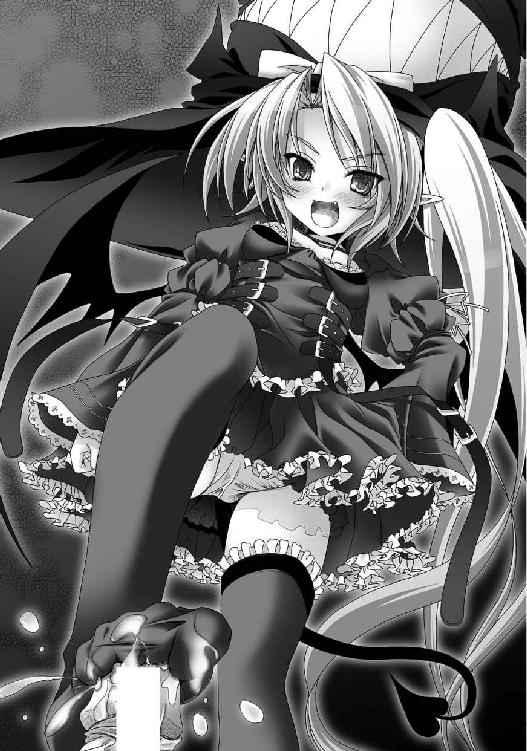

| あまえて♥騎士ねえ様 (美少女文庫) | |
| あすな ゆう | |
| フランス書院 (2008) | |
あまえて
 騎士ねえ様
騎士ねえ様
あすなゆうイラスト／みやま零
プロローグ 竜に乗ったお姉さん!?
 異世界から来た騎士ねえ様
異世界から来た騎士ねえ様勝負のご褒美はあま～い初体験
 はぐれ女神様のキケンな誘惑
はぐれ女神様のキケンな誘惑 聖なる夜～守護者から恋人へ
聖なる夜～守護者から恋人へ ファVS.ゼル ハーレム決戦？
ファVS.ゼル ハーレム決戦？ ファ姉へ贈る最後のぬくもり
ファ姉へ贈る最後のぬくもりエピローグ まだまだつづく甘い日々
プロローグ 竜に乗ったお姉さん!?
暗がりのなかで、高空信は少女に操を奪われそうになっていた。
夜の闇に包まれた、川沿いの土手。
草むらの上に倒れこんで半身を起こした格好の信の上に、黒のフリルドレスを着たでっかい双角とんがり帽子が、いや、正確には双角とんがり帽をかぶった少女が乗っかっていた。ただ、帽子が少女の身体に比べてあまりに大きすぎて、そう見えたのだった。
信の体の上で、ごそごそと動く双角とんがり帽の下から、かなり幼い雰囲気の少女が顔をのぞかせる。サイドポニーの髪に、吊り目の、勝ち気そうな雰囲気を持った女の子だった。ぱっと見、中学生である信よりもさらに下に見える。
信は中学三年の男子で、同学年のなかでは背の低いほうだった。小さな顔に涼やかな目もと、繊細な髪から女の子みたいと言われることはよくあった。よくあったが、当たり前のことながらやっぱり男で、襲われる側になるとは思ってもいなかった。
――だけど、今実際、僕、襲われてるし。
少女の吊り目がちの大きな瞳がこちらを不遜な態度で見おろしていた。ただ、ぶかぶかの双角とんがり帽子がすぐにずり落ちてきて、少女はあわてて帽子をあげる。その様子が妙におかしかった。
一瞬、近くの女の子かとも思ったが、違うらしい。黒い革鞭のような尻尾がすらりと生えていて、小さな蝙蝠羽根をアクセサリーではないと示すように、かすかに羽ばたかせていた。
ドレスの下に隠れて見えなかったものの、感触から、その子が信の腰にしっかりとまたがっているのがわかる。その豪奢なドレスから伸びた手は彼のお腹の上をなまめかしく這いまわっていた。
別に信はどこか危険な場所に足を踏み入れたわけではなかった。塾帰り、いつもの道をただ自転車で走っているだけだった。
それがいつの間にか、こうなってしまっていた。
信が自転車で河原の土手道に差しかかった時だった。後ろから何者かの気配が追いかけてくる感じがして、彼は無意識のうちに自転車のスピードをあげていた。
まだ追いかけてくる感じがして、立ちあがって、さらにペダルに力をこめる。
力強く踏みこまれたペダルの力を受けて、自転車はさらに加速した。
はずだった。
が、ブレーキもかけていないのに、自転車が急に動きをとめた。それは、自転車だけが後ろからなにかに絡めとられたような感じだった。
いきなり急停止させられる自転車。
加速しようと立ちあがってペダルを踏んでいた信。
――わわわ！
結果として、勢いのついていた信の体は自転車から前に投げだされ、土手の草むらの上に転がった。
上半身を起こした信の上には気づくと、女の子、がいた。
「あは」
少女はうれしそうな声をあげると、信の顔をまじまじと見つめた。暗闇にドレスとその身体は溶けこんでいて、少女の白い手先と、顔だけが幻想的に浮かびあがっていた。
大きな黒い吊り目の幼い顔立ちに、真っ赤な唇が色っぽかった。彼女は愛くるしいその大きな目を見開いて、信のほうをまじまじと見る。夜の闇以上の底なしの闇がそこにはあって、信も立場を忘れて見入ってしまう。
瞳がゆっくりと細められ、愛らしい唇がなぜか毒々しい印象の笑みを形作る。
「みいつけた」
彼女は心の底からうれしそうな声を出した。
白い手指を信の頬に這わせると、長年捜し求めた宝物を愛でるような手つきで感触を確かめていく。赤子のような小さな手、その指の腹が吸いつき、冷たさが伝わってくる。
その冷たさに触れた時、信は初めて、目の前の少女に恐怖を覚えた。
普通の女の子じゃなかったら、彼女はいったい――。
「ずーっと探してたんだから。女神様と同じげんしょのたましいを持つ人間。やっと、見つけた。ひとみのおくの光も女神様といっしょだもんね。あは、ゼルミール、すごくうれしいっ！」
ゼルミールと名乗った少女は喋りながらも、信の体をまさぐる手をとめようとしない。服の下に入った手が、肌の上を滑るように這っていく。
「ちょ、ちょっと、やめてよ！ なに、してるんだよ」
声はなんとか出せるものの、変な術でもかけられているのか、四肢の自由がまったく利かなかった。
「なに、って決まってるじゃない。あなた、高空信よね。女神様と対のそんざい。そのげんしょのたましいを味わいに、このゼルミールがわざわざ来てあげたのに。なんなの、そのたいどは！」
「な、なんなのって......」
いきなり気勢をそがれる信。
――えーと、やっぱり僕が悪いのかな？ いや、でも、一応僕が被害者だし。
いくら考えてみても、被害者で犠牲者は信で、やっぱり怒る権利も自分にあるはずだと気を取り直す。
「やっぱり、キミが怒るのはおかしいよ。今、こんなこと......」
話の途中で、ゼルミールにきつく見据えられてしまって、口ごもってしまう。
「まだ、文句があるの――あなたをどうするも、ゼルミールの自由なんだからね」
意地悪そうな笑みを浮かべつつ、彼女は信を鼻で笑った。
彼女がなにかしたのは間違いなくて、けれど、体の自由が利かなくて、信に抗う術はなかった。
ゼルミールは信の体に直接、その手を這わせた。脇や胸もとなど敏感な部分を冷たい手が刺激していく。
同時にフリルスカートの下に隠れたゼルミールの膝が、信の局部に押しつけられた。
「ええと、ここで、よかったんだよね......」
先ほどの勢いはどこへ行ったのか、おずおずと自分自身に確認するようにゼルミールは呟いた。
彼女の膝小僧の尖りが、信の腿の付け根をこねまわしていく。膝小僧の硬さと、太腿のやわらかさが交互に信を襲う。
ゼルミールが懐から取りだしたのは、分厚い革の表紙の本で、大きさは手のひらぐらいのコンパクトなものだった。なかにいろいろと書いてあるらしく、少女はそれを確認する。
「やっぱり、ここでいいんじゃない！ ほら、ほら、ほらぁっ！」
ゼルミールはさらに、信の大事な部分に押し当てた、膝をぐりぐりとする。
「っく」
「あ、感じてるの。感じてるんだぁ。えへ」
かすかにもれたうめきを捕らえて、ゼルミールは好奇心の赴くままに、さらに激しく信の屹立を刺激する。
「だんだん、大きくなってきてる......。なに、ゼルミールのご奉仕がそんなに気持ちいいんだ？」
信はゼルミールのなすがままで、寝返り一つはおろか、声さえも出すことができなかった。ただ、屹立はゼルミールの巧みな刺激で、しっかりと反応していた。
――こんな小さな子なのに......。
「すご、い。書いてある、通り......」
ゼルミールは、彼のズボンから屹立を取りだすと、それに見入ってしまう。生唾をごくりと、呑みこみつつも、目を離せないでいた。
おずおずと手を伸ばすと、それに触れる。起きあがった猛りの熱に、彼女は思わず手を引いてしまう。
それから、ゆっくりと、しごきはじめた。
「ずーっと、ずーっと、ゼルミール、探してたんだから。やっと、見つけた......」
屹立はさらに大きさを増し、それを手のなかで実感するたびに、ゼルミールは気持ちの高ぶりを抑えられないでいた。
ゼルミールは緩急を加えつつ、さらに激しく信の屹立を責めたてた。
「っ」
「あは、もう、ちょっと、もうちょっとだから......」
とんがり帽子の少女は雁首の表面を撫でまわし、胴を擦りたてる。暴発寸前のいきりをうっとりと眺めながらゼルミールは、愛撫しつづける。
彼女の不思議な力が弱まったのだろうか、信はかすかに腕が動くのを感じていた。動こうと思えばできたのかもしれない。
でも、動けなかった。
「――――」
初めて女性に触れられたのだからたまらない。次の瞬間には、屹立からは精が噴きだしていた。
ゼルミールはなまめかしい指遣いで彼のいきりを責めつづけた。幼い手指の淫らな蠢きが白濁を溢れさせる。
「あは、やっぱ、すっごいのぉ。げんしょのたましいを感じる。それに、べとべとで......いっぱい出てるぅ」
ゼルミールの手のなかで少年のいきりはまだまだ硬直していた。生まれて初めて味わった異性の手の感触が心地よくて興奮と充血はまったく収まりそうもない。
ゼルミールは溢れて、手指に絡みついた白濁液を無邪気そうに舐めとっていく。幼い少女のあまりに淫靡な姿に信は恐れも忘れて見入ってしまう。
「はぅうぅぅ......もっと、もっと、ちょうだいよぉ、ねえって――」
そこまで言いかけたところで、稲妻に打たれたかのように、ゼルミールの手は動きをとめる。
そして次の瞬間――彼女は信の上から姿を消して、離れた場所に跳び退っていた。
そのゼルミールと、信との間に、突然、緑色の塊が立ちふさがっていた。空から舞いおりてきたらしいそれは、着地とともに地響きを立てた。
「う、そ――」
驚きで、信の口からはそれ以上、なにも言葉が出てこなかった。目の前の少女が現われた時以上の衝撃があった。
長い尾と折り畳まれた羽根、トカゲを髣髴とさせる頭部には太い角が二つ。緑色の鱗で覆われた、どこかで見たことのある、しかし現実にはまずいない生き物――巨大な竜、だった。大きさは象ぐらいだろうか、いやもう少しあるかもしれない。暗闇で輪郭が判然としなかった。根元がひと抱えの丸太ほどもある尻尾が信のほうに向いていた。
上に乗っているのは、真紅の西洋甲冑を身にまとった女性で、腕、脚部、腰、そして胸とその身体のほとんどの部分が、巧みに繋ぎ合わされた金属板で覆われていた。
凛々しく張りだした胸先から力強く引き締まった腰まで、甲冑は彼女の身体の線をかすかに想起させるように流麗な線を描いていた。
真紅の甲冑姿を包みこんでいた白のマントが、夜風にかすかになびいていた。
甲冑の女性は、手綱を引き騎竜の首を少女のほうに巡らせる。彼女の短く切りそろえられた髪がかすかに揺れた。
凛々しい姿に、信は驚きも忘れて見入ってしまう。
彼女は透き通った、張りのある声でゼルミールに呼びかける。有無を言わせぬ強い意志が、その声にはあった。
「ゼルミールよ。これ以上、私の手を煩わせるつもりか。もう充分のはず。さあ、ランスロアへ戻らんか」
「まだ、来たばっかりで、ぜーんぜん、遊んでないんだから。ゼルミール、もっといろんなものを見たいし、いろんなことがしたいんだもん」
「こちらへ来るのは、無用な混乱が起きるゆえ、女神レーネ様は固く禁じている。それは、ゼルミールも知っていよう」
「それは......。でも、ちょっとぐらい、いいじゃない。レーネ様だって、許してくれるハズよっ」
「それは詭弁であろう、ゼルミール。現にレーネ様がこうして私を遣わしている」
ゼルミールと、言い争っている甲冑の人物は知り合いらしかった。彼女を追いかけているのか。しばらく、ゼルミールと甲冑の人物の間で言葉の応酬がつづいた。
「なによ、お城の竜騎士なんかに捕まったりしないんだから。もう、追いかけてこれないように、めちゃくちゃにしてやるから！」
「このファニー・ファリエールも、近衛竜騎団の末席に名を連ねる者。不義不正の戦いは慎まねばならん。だが、これほど諭しても折れないとあれば」
「騎士って言っても、お城でぬくぬくしてるだけじゃない。ゼルミールのほうが強いんだから！」
「――言ったな」
赤い甲冑の騎士ファニーはそれだけ呟くと、斜め後ろにおろしていた棹状の武器を小脇に持ち替えた。長さは人の背丈以上もある、かなりの長物だった。長い柄の先端に鋭い槍と、斧刃が組み合わさった武具、ハルバートだ。鎧の色と同じ、真紅の宝石が斧刃の根元の金属部に埋めこまれていて、暗がりのなかでもぎらりと目立った。
その切っ先の狙いを、ゼルミールにぴたりとつける。
そこからの出来事は一瞬だった。
竜が炎のブレスをゼルミールの足もとに吐いたかと思うと、同時にファニーは竜の背から飛びあがる。足もとに吹きつけられたブレスを後ろにさがってかわしたゼルミールの間近に降り立ち、彼女が周囲に再び注意を払う前に、ファニーのハルバートがゼルミールの首筋に突きつけられていた。
「ひう......」
「抵抗するな、と言っただろう。おとなしくしていれば、騎士の道にそむくような真似はせん。それは女神レーネ様と我が名誉に誓って、約束しよう」
ファニーは少し表情をやわらげて、つづけた。
「ゼルミール、さあランスロアに帰ろうではないか」
青ざめた顔のまま、ゼルミールは微動だにしなかった。言葉は諭すように穏やかになったものの、ファニーの殺気はそのままで。妙な真似をすれば――結果は火を見るよりも明らかだった。
ゼルミールは戦意を喪失したように、その場にへたりこむ。黒のスカートがあたりにふわりとひろがった。
「ううっ、ゼルミールが、ゼルが悪かったの。ごめんなさい。もうしない、しませんから......うう、ぐっす、ひっく......」
彼女は両手を顔に当てて、しゃくりあげはじめた。
「わかればいい。ほら、泣くのをやめんか」
「でもぉ、でもぉ......ゼルミールぅ、えうう、ごめんなさい、ごめんなさいぃ......」
次第に大きくなるゼルミールの泣き声に、ファニーは肩をすくめるようにして、ハルバートをさげる。
その困惑した顔のなかにも、かすかな安堵の表情が見てとれた。
「あの、ファニーさん、でしたっけ――」
わずかに警戒を解くファニーに、信は思わず声をかけてしまう。
信はファニーの見事な戦いぶりに惹かれていた。戦いの前後の紳士的な応対、そしてなによりも、戦いがはじまってからの一瞬の決着。
見事、だった。
場所次第では、信の口からその言葉が飛びだしてもおかしくはなかった。
彼をかきたてるものがなにかはわからなかったが、女騎士の潔さ、凛々しさを見て胸が熱くなってしまっていた。
「ああ、いたのだったな。迷惑をかけた」
ファニーの顔がちらりとこちらを向く。気のない返事が寂しかった。今、会ったばかりの相手が親しく話しかけてくるはずもなく、頭ではわかっていても、気持ちはそこまで追いつかない。
「――っ！」
そんな信の気持ちもなにもかも吹き飛ばすように、ファニーのうめきがもれる。彼女はそのまま二、三歩あとずさって、ハルバートを横になぎ払う。そこは、元々ゼルミールのいた場所で――黒のドレスの切れ端がいくつか宙に舞っていた。
「ゼルミール。貴公、騙したな！」
つらそうに声を出すファニー。もう片方の手は腹のあたりを押さえていて、どこか苦しげだった。
ゼルミールの手もとは青白い光をかすかに帯びていて、その手のひらの上には白い光球がいくつも浮かんでいて、それがさらにファニーのほうに向かって投げつけられる。
同様のものが至近距離から彼女の腹に叩きつけられたに違いない。
ファニーはそれを横に飛んでかわす。それでもハルバートの切っ先はゼルミールのほうを向いたままだった。
「だって、まだ来たばっかりだもん。ゼルミールだって、もう少しぐらい遊んでたっていいじゃないっ。せっかく、来たんだからぁ。それにゼルミール、騙してないもん。泣いたのだって、ほんとに、ほんっとに怖かったんだから――うう、ぐっす」
ゼルミールは今にも泣きだしそうな声だった。
「それに――」
信はゼルミールの声とともに、絡みつくような視線をはっきりと感じた。
「せーっかく、美味しそうなものを見つけたのに。女王様とおなじげんしょのたましいを持つ人間。やっと、やっと、やーっと、見つけたんだから。ゼルミールの、ゼルのものなんだからぁ。誰にも、渡さないかんね！」
ゼルミールは駄々をこねながら、さらに無数の光球を投げつける。衝撃音とともに、土煙が舞った。
「ぜーったい、仕返し、してやるんだからぁ。覚えてなさいよ！」
そう言い捨てると、ゼルミールの姿は闇にかき消えてしまった。
なにが起こったのかわからなくて、一瞬、呆然としていた信だったが、すぐに我にかえる。土煙の向こうには、ハルバートを支えにしてようやく立っている、甲冑騎士の姿があった。
「だ、大丈夫ですか？」
「ああ......。ただ、疲れた。ちょっと休ませてはくれんか」
信の目から見ても、それは強がりなのはわかった。あたりの地面はゼルミールの光球でえぐれていた。これが身体に当たれば、どれほどの衝撃になるのか。
「うん、ちょっと、待ってて」
信はあわてて、横倒しになった自転車を探すと、そのままファニーのところに戻る。
「ああ」
顔をあげたファニーはハルバートを杖代わりに立ちあがると、それを軽く振る。たちまちのうちに、着ていた鎧の存在そのものが消えて、詰め襟のシャツに、すらりと長いスリムパンツのスマートな姿になる。鎧は霧のようにかき消えたというよりも、そこにあったことこそが幻のようだった。そして、残ったハルバートの存在も空気に溶けこむようになくなっていく。
ファニーの手もとに残ったのは、手斧ぐらいの大きさの武器で、ハルバートをぎゅっと縮めたような形をしていて、先端部にはハルバートと同じ赤い宝石が埋めこまれていた。彼女はそれを腰のケースにしまいこんだ。
よろめいたファニーに肩を貸すと、信はそのまま自転車の後ろに乗せた。そして、そこについてくる緑色の生き物。信はそこで初めてファニーの乗騎である竜がいなくなっていることに気づいた。
その小動物は、彼女の足もとで心配そうにちょこまかと動きまわる。それは、小さな竜というにはあまりに丸々と太りすぎていて、イグアナと子豚の合いの子と言われたほうが説得力があった。
竜がこんな小さなはずはないし、でも――。
ファニーのことで頭がいっぱいだった信も、さすがに無視することができなかった。
「そのファニーさんの、乗ってた竜って、もしかして......」
「っく......そ、その子だ。乗せてやってもらえ、るか......」
彼女は息も絶えだえにそれだけを口にする。信は半信半疑のまま、その子を自転車の前籠に押しこむと、後ろにファニーを乗せた。
背にファニーの鼓動とかすかな重みを感じ、不謹慎にもドキリとしてしまう。ただ、ファニーの容態があまり芳しくないことが、同時にぐったりとのしかかる重みから感じとれた。ほとんど自分の力で体を支えきれていないのだ。
「すぐに着くから、ウチ、近くなんだ」
背中に声をかけると、信は自転車のペダルを漕ぎだした。
異世界から来た騎士ねえ様
家に着いて、二階のベッドにファニーを寝かせると、安心したのか、彼女はそのまま気を失ってしまった。
信は彼女を気づかって、エアコンをつけて、毛布を用意して。ばたばたと動きまわった。
ようやく一段落して、ふいにファニーのほうを見ると、彼女の腕がベッドの端からかすかにこぼれだしていた。鍛えられていて、引き締まった腕だったが、白くて、華奢で、やっぱり、女の子の腕だった。
――これで、あんなに大きな武器を振りまわしてたんだ。
信はその事実にあらためて、驚いてしまう。
その思いをこめて信は、ファニーの寝顔をまじまじと見た。どこか息苦しそうにしながらも、すやすやと眠っているように見えて、一安心する。彼女が息を吸い、吐くにしたがって、布団がかすかに上下する。
信はファニーの脇に座ると、その手をベッドのなかに戻してやった。それから、彼はふと思いつくと、かかっていた布団をまくった。
――なんだかファニーさん、苦しそう......。
ファニーは服を着たままで、首もとは立ち襟で覆われ、窮屈そうにボタンでとめられていた。それがどこか息苦しそうな感じだったので、ボタンをゆっくりとはずして、信は襟を胸もとのほうまでひろげてやった。
少しは楽になったのか、ファニーの表情が和らいだように見えた。短めの髪は乱れて、かすかにひろがっていた。彫りの深い顔立ちは彫像を思わせるほど整ったもので、今は静かに目を閉じていた。
――なんだろう、見ているだけでドキドキする。
彼女の寝姿は乱れているわけでもないのに、妙に艶っぽくて、顎から首にかけてのしなやかな線に、見入ってしまう。
そこからつづく、大きく開いた胸もとからは、はち切れんばかりの水風船のような膨らみが、開いた襟と襟の間から、その存在を強く主張していた。
まるで、おいで、と言わんばかりに。
信は膨らみの豊かさに突き動かされるようにして、胸もとのボタンを一つ、また一つと、はずしていく。
――急に目を覚ましたりしないよね......。
呼吸とともに、なまめかしい脂肪の塊は、彼を誘うように上下した。
ボタンのはずれた合わせ目は、かすかに開き、ファニーのきめ細かな肌色がちらと、のぞいた。
双丘のなだらかなカーブから、くぼんだみぞおち、そして引き締まったなかにかすかなやわらかさを感じさせるお腹、愛らしいおへそまで。
――初めて間近で見た......。これが女の人のお腹......。
信のなかで、ほんの一瞬、天使と悪魔が、たぶん、戦った、と思う。
吸い寄せられるように、そっと手を伸ばしてしまう信。シャツの薄い布地越しにも、身のつまった、それでもどこか包みこむようなふんわりとしたやわらかさが手のひらに、じんわりと伝わってくる。
――やわらかい......全然、違う......。
感触を貪ろうと、さらに手を胸乳の丸みに沈めていく。乳房がシャツ越しに信の手に吸いついてきて、甘い手応えをかえした。
「ん、っ......」
ファニーは声と一緒にその身をかすかによじらせる。信は驚いて、彼女の胸先に置いた手をあわててどかした。
「お、起きたの？」
信は思わずファニーの様子をじっとうかがってしまう。彼女はただ寝言をもらしただけで、起きたわけではないようだった。
「ファニーさん......」
声をかけても、彼女はすやすやと眠っているだけで反応はなかった。
胸を撫でおろしながらも、彼のいたずら心はまだ収まりそうもなくて、再び、ファニーの胸乳に手を伸ばす。
彼はぷりぷりのゆで卵の薄皮を剥がしていくように、ゆっくりと、そしてそっと、ファニーのシャツをずらしていく。その下から、乳房の乳白色のなだらかな曲面が姿をのぞかせる。
重力にかすかに押しつぶされて、ひろがった張り出しの、その充実ぶりは、信の目を引きつけて、離さなかった。
「ファニーさん、具合はどう？ 苦しくない？」
もう一度、彼女の名前を呼んでみる。それでも、やっぱり返事はなくて、目の前には無防備な極上の甘さを誇る果実が二つ、かすかな呼気とともに上下し、ふるふると震えていた。
信は指先を、ファニーの片方の乳房にかける。かすかな弾力とともに、指先がやわらかな丸みのなかに沈んでいく。肌触りは思った以上につるつるとしていて、でも、温かかった。
初めはこわごわと触れるだけの信だったが、次第に大胆になって、ゆっくりと膨らみを揉みしだいていく。
つんと、上向きになった双乳は、彼の手でこねられて、なだらかな半球から、その形を自在に変えていく。
「ん、っ、ぁ......」
こらえきれなくなったかのように、ファニーの口からは喘ぎがもれる。一瞬、驚いた信だったが、彼女は目を覚ました様子はなかった。
「ふぁ、ぁ......だ、めぇ、そこは......」
かすかに息を荒げながら、切なそうに声を出すファニー。無意識のうちに感じているのだろうか。身をよじらせて、愉悦を貪っているかのようだった。
――すごい温かい、それにやわらかい......。
その胸乳の量感と、彼女のなまめかしい反応を感じながら、信は乳房を弄びつづける。
「っ......ぁあぁ、やぁ......そんな、に、し、たら――」
かすかに鼻にかかった声で、ファニーは喘ぎ、感じ入った声をもらす。
感じている証拠か、乳房の先が尖り、それを指の腹で押し転がしてやると、身を揺すって激しく感じていた。
――だんだん硬くなってきている......感じてるの。
ファニーの胸もとの豊かな脂肪塊は彼の愛撫を求めるように、手指に激しく絡みついてくる。
「ぁあぁぁっ、っくうぅ――」
ふいに、ファニーは跳ねるように、わずかに背筋を反らすと、そのままベッドに沈みこんだ。
「もしかして、イッちゃったの？」
信はそう口にしてから、自分のやったことに気づいてしまう。
――なんてことしちゃったんだろ......彼女は僕を助けてくれた人なのに......。
「あの......」
手をファニーの胸もとから離すと、おっかなびっくりで、彼女の様子を見る。
起きていたら、コロサレルかもしれない。いや、間違いなく。
幸いにも、ファニーはまだ眠っているようだった。疲れていて、眠りが深かったのかもしれない。
はだけていた胸もとを閉じていると、ファニーの甘い香りが漂ってくる。その頬はかすかに上気して、そこに色っぽさを添えていた。
ベッドの上で眠るファニーは、弱々しくて、可憐な女の子で、つい先ほど信を助けてくれたあの凛々しい人物と同じとは思えなかった。その姿を見ていると、信のいたずら心も、しぼんできてしまう。
布団を再びかぶせてから、
「早く、よくなってよね。ファニーさん」
信は誰に言うとでもなく、そう口にした。
そのままずっとファニーの側について、夜を過ごした信は、いつしかベッドの端にうつぶせになって眠りこんでしまっていた。
朝になって、先に気がついたのはファニーのほうだった。ベッドから身体を起こすと、その脇では、まだ、信が疲れたように眠っていた。
「ずっと、ついてくれていたのか......」
異世界の騎士は感慨をこめて呟いた。
危ないところを助けたとはいえ、見ず知らずの、まだ事情もよく話していない自分を家まで連れてきて、一晩、介抱してくれた。
そのことだけでファニーは胸が少し熱くなるのを感じていた。
「もしかすると、底抜けのお人好しなのかもしれんな、ふふ」
ファニーが起きてごそごそしだすと、眠っていた信も目を覚ました。
「ん。ふぁあ、おはよう、ファニーさん」
その寝ぼけ眼に、ファニーは思わず笑ってしまいそうになる。
「ん、ファニーさん、どうしたの」
「い、いや......なんでもない」
彼女はあわてて取り繕う。そんなファニーの顔を信はまじまじと見た。一瞬、彼女は身を引いてしまう。
「よかった、元気そうで」
心の底からほっとした様子で、満面の笑みを見せた。
「今日もまだ具合が悪そうだったら、お医者さんに来てもらうつもりだったんだよ」
ファニーは信の言葉にとくん、と胸が大きく一つ鳴った。
「そうか、心配かけたな」
口をついて出た言葉はそれだけだった。親身になってくれたことがファニーはうれしくて、逆にそれで感情を押し殺したような言葉になってしまう。
「お腹すいたでしょ。ちょっと、待って。すぐに食べるもの、持ってくるから」
言うなり、信はすぐに部屋を出ていった。
しばらくして、再び部屋に入ってきた彼は、茶碗を載せたお盆を手に持っていた。ファニーのベッド脇の台に置かれた茶碗には、美味しそうに湯気を立てたおかゆが入っていた。
おかゆには、溶き玉子が混ざり合って、上から刻みネギと海苔が振りかけられていた。
色合いの美しさも食欲をそそるはずだったが、ファニーは半ば警戒しながら、湯気の立つ茶碗を手に取ると、なかのおかゆをしげしげと眺める。
彼女にとっては、もちろん初めて見るものだった。
「貴公が作ったのか、これを」
「うん。いつも一人でいることが多いから、家のことなら、なんでもまかせてよ」
「そうか。それは感心だ。口先ばかりで、なにもできん御仁も多いからな」
では、いただこう、とファニーはおかゆをスプーンですくう。
まだ躊躇があったが、目の前の少年がわざわざ自分のため作ってくれたものだと思うと、そこで手をとめる気にはなれなかった。
湯気が運ぶ美味しそうな匂いが、ファニーの背中を少し後押ししてくれた。
そのままスプーンのおかゆを口のなかへ持っていく。塩気と、かすかな米の甘みが口のなかにひろがった。
「初めて食べるものだが、不思議な味がするな」
「あ、そうか......どう食べれそう？」
「ああ、大丈夫だ。いい匂いがしていたからな、味も気に入った」
「そう、よかった」
信はファニーがスプーンを口に何度か運ぶ様子を見て、胸を撫でおろした。
「貴公、住んでいるのも一人なのか？」
「家族はいるんだけど、父と、あとは叔母、かな。父のほうは仕事で単身赴任」
「タンシンフ......ふむ、知らぬ言葉だな。それは特別な事情か？」
「あ、いや、ずっと遠くで仕事をしてるってことかな。叔母も近くに住んでるし、家もあるから。まだ若いから、叔母さんって言うと、シメられちゃうから、姉さんって呼んでるんだけどね。時々、見にきてくれるんだ。その代わりに、この部屋が姉さんの物置になってたりね......服も、本も、健康器具も置いてあるんだよ。このベッドも姉さんの泥酔時の緊急避難用」
信は聞かれてもないことまで、ついつい話してしまう。
「そうか、ならよいのだが。この世界のことはあまり知らなくてな。こうして世話になるのも初めてのことだ」
おかゆをスプーンで口に運びつつ、そう答える。
こうして元気になったファニーと話すと、まったく違った印象があった。
やや長めのショートヘアは綺麗に切りそろえられ、鎧に絡まないようにか、うなじの線がかすかにのぞく。切り口のシャープなラインが、ファニーの凛々しさを引き立てていた。
その思慮深そうな瞳は、彫りの深く、切れ長の目もとに収まっていて、整っているがゆえにやや冷徹そうな印象を与えていた。ベッドから半身を起こしただけでも容易に知れる長身とあいまって、騎士の威圧感を兼ね備えていた。
けれど、話してみると、怖いとか、そんな感じではなく、穏やかで落ち着いた感じがあった。それは話していて、信に安心感さえ与えるものだった。
――なんだか話しているだけで安心する......。
おかゆを食べる彼女の横顔を見ていると、そこからのぞく耳を見つけてしまう。こぢんまりした耳だったが、少し起きあがっているのか、かかった髪の間から可愛らしく自己主張していた。
そこから首筋、そして、ファニーの胸もとへと視線が泳いでしまう。その質素な布地を突き破らんばかりの充実感を見せる丸い膨らみは、彼女の長身に比して、まったく遜色のない大きなもので、正視しつづけたい気持ちと、それを押しとどめる気持ちが信のなかで暗闘する。それをとめたのはファニーの一言だった。
「美味しかった。くせになりそうだな」
ファニーはかすかな笑みを見せると、スプーンを置いた。
「あ、うん。ありがとう」
信もそうかえすものの、ファニーの胸もとを注視していたのがやましくて、どぎまぎしてしまう。
「だけど、怪我までして、助けてもらったのは僕のほうだから......。すごくありがたかったし、それにすごく格好よかったよ、ファニーさん。一瞬で、勝負を決めちゃうし。あ、そうだ、ファニーさん、怪我は大丈夫なの。傷はないみたいだけど？」
信は興奮して一気に、そこまで喋ってしまう。
「怪我か。ああ、それは大丈夫だ。仲間に迷惑をかけんよう、普段から鍛えてある。それに急所もはずしてあるからな」
少し誇らしげに、ファニーは答える。
「しかし、油断すると、このザマだ。まだまだ、修行が足りんのか、貴公にも、この通り、世話をかけている」
ふふ、と彼女は自嘲気味に笑った。
「でも、僕のこと、助けてくれたじゃない。ファニーさんが来なかったら、どうなってたか......」
「やさしいな、貴公は」
「そうかな、そんなことないよ」
言われて信は、悪い気はしなかったものの、どこか座り心地が悪くなってしまう。
「――ん、そういえば、名前を聞いていなかったな。私は、神族の長にしてランスロアを統べる女神レーネ様に忠誠を誓う近衛竜騎団一のハルバート使い、ファニー・ファリエールだ」
静かに、しかし力強く、宣言する。その名乗りには、どこか誇らしげな感じがした。
「といっても、貴公はもう、私の名を知っていたようだが」
そうつけ加えて、くすりと笑う。そのわずかな笑顔に、信は引きこまれる。
凛々しい騎士の表情のなかに、垣間見えた、女の子らしい表情に、彼の心は完全に捕まってしまっていた。
――ファニーさん、あんなに強いのに......。今は本当にやさしいお姉さんみたいだ。
初めて会った時の態度がそっけなかっただけに、その笑顔がいっそううれしかった。
「なにをぼんやりしている、ほら」
「あ、はい。信。高空信です。それで......ええと。そのファニーさんみたいに話すことが、ないんだけど、僕......」
まさか、助けてもらった時の勇姿に憧れてしまった、なんてことは言えなくて。なんとなく口ごもってしまう。
「なんでも、いい。はっきりと言ってしまうことが大事なのだ。戦場において、一対一で向き合った場合、力強い名乗りで、相手の気勢をそぐ、これが肝要だ。私もハルバートの腕が近衛竜騎団一かどうかは自分でも知らん。ただ、得意という程度だ」
「あ、ひどいなあ。僕、信じたのに......」
「私の作戦勝ちだな。ふふ、信も一つ勉強になっただろう。それにしても、貴公の名前も信か。奇遇だな。よし、もう一人のシンも紹介してやろう」
言うなり、ファニーは指を口に当てて、指笛を吹く。甲高い音がして、やがて離れた場所から、どたどたと物音が聞こえて、ゆっくりと近づいて――やがて轟音とともにそれが遠ざかった。
「信、ここは二階か」
「うん。たぶん、階段から落ちたんじゃないかな、と......」
「――助けにいってやってくれんか」
ファニーはため息まじり、そう言った。
信に無事サルベージされて二階に連れてこられたのは、ファニーの騎竜だった。名前はシン。彼と同じらしい。
出会った時のあの勇ましい姿はどこへやら、そこにいたのは持ち運ぶのにも苦労する肥満体のイグアナだった。羽根はついていたものの、家のなかのような狭い場所では、方向転換に困るので、飛べないらしい。
ぱっちりした目に、丸々とした緑の体――枕にしたら気持ちよさそうだな......思わず信はそんなことを思ってしまう。
「これが、あの......やっぱり、信じられないなあ」
「ああ、ランスロア――我々の世界ではこんな格好にはならないんだが、やはりこちらはレーネ様のお力が及ばんようで、こうなってしまう。減量は急を要する課題だな」
「そう、だね。まるで、子豚みたいで......」
信がそう言うと、騎竜のシンはその首を向けて、
「俺様が子豚だって......口の利き方に気をつけろよ、そこのお前！ 名前がちょっと似てるからって、調子に乗んなよ」
と、いきなり啖呵を切った。
「しゃ、喋った......」
「ああ、言ってなかったな。そのなりだが、頭もまわる、頼もしいヤツだ」
「ふん、どうだ、えらいだろう。ファ様も、この俺様を認めてくださってるからな」
ちょっと胸を張ろうと、後ろ脚だけで立ちあがろうとするが、すぐにあきらめて座りこんだ。ファニーはそれを見て、苦笑する。
「仕方のないヤツだ」
シンへ向けられたファニーの眼差しはやわらかくて、信はうらやましくなってしまう。
――ファニーさん、シンのことが本当に好きなんだ。
「また、大きくなったりはしないの？」
「ああ、もちろんする。ただ、短時間だけだ」
「短時間？」
「そこにある針がくるりと一回、めぐるぐらいの時間だ。それも一日一回」
ファニーが指さしたのは壁にかかった時計の秒針で、一分ということらしい。できそこないの巨大ヒーローみたいだった。
「こちらの世界では、レーネ様の加護がなく、我々の体が持つ可能性の力――原初の魂、と呼んでいるが、その力がどうしても弱まってしまう。シンも、私の神魂魔法も同じだ」
「原初の魂......」
昨夜からずっと気になっていた言葉だった。ゼルミールが信に言った言葉。
あの時のゼルミールの恍惚とした表情を、信は時間が経った今もありありと思いだすことができた。「げんしょのたましいを持つ人間。やっと、見つけた」彼女は、信にこう言ったのだった。それも「女神様と同じげんしょのたましい」と。
「その、ゼルミールが僕に見つけた、って......。ファニーさんはなにか知ってるの？」
「そうか、ゼルミールがそこまで喋ったか――」
ファニーは目を閉じてしばし考えこんでいる様子だったけれど、覚悟を決めたように信の顔を見た。
「貴公も関係者だ。話さないわけにはいくまい」
信に告げるというよりは、まるで自分に言い聞かせるような口調だった。
それから、ファニーは静かに話しはじめた。
彼女の話によると、信の住む世界と、ファニーたちの世界・ランスロアはコインの表と裏のように不可分な対の存在だという。コインが表だけでも、裏だけでも、その用をなさないように、この現代とランスロアも単一では存在しえない。
そして、不可分な二つの世界の存在は深い絆で結ばれている、という。
なにもない状態で聞かされてしまえば、眉唾もので、端々に疑問を差し挟んだかもしれなかったけれど、ゼルミールに襲われて、その直後に巨大な竜に乗ったファニーが助けにきたとあっては、ただ、うなずいて聞き入るだけだった。
「それでだ、ゼルミールが貴公を襲った理由だが、その絆と関係がある」
「絆と？」
さっぱりついていけず、信はただそう聞きかえすだけだった。
「そう、絆とだ。信、ランスロアにおける貴公と対の存在は――誰あろう、女神レーネ様なのだ」
「レーネ様って、ファニーさんの......」
「そうだ、我が主君にして、ランスロアの神族の長、女神レーネ様だ。おそれおおくも、レーネ様と絆で結ばれている、ということは言い換えれば、その原初の魂も同じ質を帯びることになる。ただ、同じといっても、その体奥の魂を汲み取って力に変えるのは本人次第。レーネ様のそれはランスロアを治めるほどの強大なもの、比較にはならん」
「じゃあ、僕、関係ないよね。どうして、狙われてるんだろう......」
「貴公が自分でその力を汲み取れなくとも、外から強引に吸いあげることは可能だ。まだ善悪の判断もつかないゼルミールが、レーネ様と同じ上質の原初の魂を持つ、貴公に目をつけた、というわけだ」
「そんな......」
「ランスロアの者が迷惑をかけて、申しわけない。今回、私がこの世界に来たのも、ゼルミールを連れ戻すためだ。始末の悪いことに、力のあるはぐれ神族は、時折、こちらの世界にやってきて、人間の原初の魂を堪能してまわっているようでな。おおかた、ゼルミールも誰かにたぶらかされたのだろう」
「堪能......」
――やっぱり、あのことだよね......。
ゼルミールの手指で図らずも快感を味わってしまった信にとって、おおまかな想像はついたが、それでもそのことについてファニーに突っこんで、聞いてみる。
「それはだな、それは......」
今までよどみなく話していたファニーが口ごもる。その反応を見て、信はその確信を強めた。同時に、ゼルミールに触れられたあの感触を思いだして、赤くなってしまう。
――あんな可愛い子に触ってもらえるなんて、最高に気持ちよかったけれど......でも......。
「ごめん、変なこと聞いちゃって......」
「大事なことだからな。やはり、きっちりと話しておこう」
「いいよ、ファニーさんも、喋るの大変だろうし......」
「いいや、騎士の誓いにも、汝は常に誠実であること、と。やはり、ここは......」
冷静に話しているように見えながらも、ファニーの声はその言葉の端々でうわずったりしていた。
「いいってば！ 大体、わかったから」
「お前、ファ様の好意を無駄にするのか。横で聞いていれば、いい、いいって」
間に割って入ってきたのは、部屋の片隅で二人のやりとりを聞いていたシンだった。
「ファ様がきっちりと説明してくれるって、言ってるんだろ、くっきりはっきりきっちりと」
「シン、その、もういいから。私が無理強いしたのが悪かったのだ」
ファニーはそう言いだす機会を得て、ホッとしているように見えた。それは信も同じだった。けれど、もう一匹のシンは納得できないらしく、いろいろと口にしているようだった。
信はそそくさと立ちあがると、
「とにかく、ゆっくり休んでよ。着替え用の服、ここにあるから。全部、姉さんのだけど、こっそり使えば大丈夫だと思うから」
部屋の隅のクローゼットを少し開けてみせた。
「ああ、すまんな」
「ファニーさん、まだ疲れてるのにいろいろ、話させちゃってごめんね」
ファニーはゆっくりと首を振る。
「貴公もわけのわからない出来事が身辺で起きて、大変だろう。だが心配はいらん。このファニー・ファリエールが、高空信、貴公の安全を保証しよう」
そう言うと、女騎士は涼やかな笑みを見せた。かすかな微笑みではなく、初めて見る彼女の満面の笑みだった。
信はその顔に思わず見入ってしまう。
――なんだかファニーさんの笑顔を見てるだけで安心しちゃう......。
その笑顔の前に、彼が感じていた不安など、どこかに吹き飛んでしまっていた。同時に、ファニーの自分を心配してくれる気持ちがうれしかった。彼女自身も慣れない環境に身を置いているはずなのに。
知らず知らず、胸の奥が熱くなるのがわかった。
「ありがとう、ファニーさん。ゆっくり休んでね」
信は自分の気持ちを隠すように、そう言うと、部屋を出た。
勝負のご褒美はあま～い初体験
数日後、ファニーの体力はすっかり回復していた。夕食の席での彼女の食事の進みぶりがそれを示していた。
ファニーは、黒のタートルネックセーターにジーンズという、どちらかと言えば落ち着いた格好だったが、彼女の大人びた魅力と、豊かな肢体だけは隠しようもなかった。
ファニーは黙々とクリーム煮こみの骨つきチキンをナイフで切り分けると、口へ運ぶ。美味しいものを食べている時はついつい、そちらに集中してしまって無口になってしまう。
長方形の座卓式こたつの上に並べられているのは、チキンのクリーム煮こみに、スープ、ライス。そしてレタスとトマトのサラダがガラスの器に盛りつけられていた。
席についているのは、ファニー、信、そして、もう一匹のシン。彼も食事時はいつもの元気さを食べることに向けているようで、いつもの騒がしさはなかった。
両腕をこたつの上に載せて、それで器用に体を支え、信たちと同じチキンのクリーム煮を皿からそのまま食べていた。飼い犬のようだが、犬と違うのは、食事にクレームをつけることだった。肉がいい、というので安くてボリュームのある鶏のムネ肉を買ってきたら、加熱しろ、味が薄いと次々に要求が飛んでくる。結局、ファニーや信と同じものを食べさせることで、その要求を封じるということになった。
「やはり寒い時には、温かいものが一番だな」
「うん。今日は特に寒かったから、こういう煮こみ系がいいかな、と思って。初めはシチューにしようかとも思ったんだけど、ちょっとだけ変えてみたんだ」
「シチュー？ そうか、私の知らぬ料理で、貴公が作れるものがたくさんあるわけだな。いずれ、作ってくれるのだろう」
自分でも知らず知らずのうちに笑みがこぼれていた。期待をこめて、信を見つめてしまう。
「うん。ただ、毎日、違うものを作るから、ときどきは苦手なのに当たっちゃうかもしれないけれども」
「それは、致し方ないな」
そう答えてから、ファニーは先ほどから気になっていた、部屋の隅を見る。そこには大型のテレビが鎮座していて、洋画らしきものがやっていた。
「信、あれはなんだ？ 音と、絵が動いているようだが」
「ん。ああ、テレビだね。あそこから、この世界のいろんなことがわかるようになってるんだよ」
「ふむ、情報を取る、道具というわけか」
そのまま、テレビのほうを見る二人。そこで展開されていたのは、洋画のベッドシーンで、素肌をさらした男女が激しくお互いを求め合っていた。
――こんなことまで......テレビで。
つい、ファニーは画面のほうに目を奪われてしまう。信も同じように画面に引きつけられているみたいだった。彼女が隣りの信のことを気にして、テレビから視線をはずしても、彼はじっと画面を見たままだった。
――やはり、信も可愛い女がいいのか。そうだろうな。
画面の向こうで愛らしく乱れる女性を見ながら、ファニーはふと思う。
――この私なら、どうなのだろう。
一瞬、湧いたそんな考えを軽く笑い飛ばすと、信の顔をちらと見る。その視線を感じたのか、彼も画面から視線をはずした。
ファニーはなんとなく気まずくなって、話をしないまま、残りの食事をすませてしまう。
「今日は、どうだった？」
信が心配そうに聞いてくる。
「ああ。美味しかった。こうやって食べ終わるのが、残念なぐらいだ」
「僕も食べてくれる人がいると、違うから。父さんがいないと、いつも家のなか一人だし。美味しいって、食べてくれる人がいると、作るのも張り合いがあるよ。ファニーさんが来てくれて本当によかったって思うんだよ」
「そうか、ふふ、おおげさではないか」
「このまま、ずーっと、ずーっと、いてほしいぐらいで――」
信のその言葉がファニーの胸の奥に届く。心臓の鼓動が速くなっていくのが自分でもわかった。
ふいに信と目が合ってしまう。視線が絡み、先にファニーは目をそらしてしまっていた。意識してしまって、まともに彼の顔を見ることができなかった。照れで、耳まで真っ赤になっているだろうことは、自分でもわかった。
「ファニーさん？」
「そんなことを言われると、本気になってしまうではないか！」
ただ呼びかけられただけなのに、思わず信に強くかえしてしまっていた。言われて、きょとんとしている信を見て、ファニーは急にその場にいづらくなってしまう。
――私はいったいなにを言っているのだ。おかしいぞ。
風呂に入る、と言い残して、逃げるようにリビングをあとにした。
外気で少し冷えた廊下を歩きながら、どうして自分はあんなに取り乱してしまったんだろうか、と思う。いつ、いかなる時でも、冷静沈着が身上のはずのこの私が。
答えは明らかだった。
ファニーはそこで自覚したのだ。自分の気持ち。
――信が好きだということだった。
「お前、ファ様になに言ったんだ？ あんなファ様、めずらしいぞ」
ファニーがリビングをあわただしく出ていってしまってから、彼女の忠実な騎竜が信を責める。
少年にも心当たりがなくて、「さあ、ね」とかえすぐらいしかなかった。
ただ、本気、という言葉を聞いた時になぜかはわからなかったが、一瞬、どきり、としたのも確かだった。
残されたのは、こたつに入ったままの信と、また食べることに没頭しはじめたもう一匹のシンだった。
信がぼんやりとテレビを見ているうちに、シンのほうはたらふく食べたのか、こたつ布団にくるまって気持ちよさそうに寝息を立てはじめた。
それにつられて、信もかすかにうとうとしはじめる。睡魔に眠りの底へ引きこまれかけた瞬間、彼は誰かに肩を叩かれた。
ふいに目を覚ますと、脇に立っていたのはお風呂上がりのファニーだった。
「いい湯だった。貴公も熱いうちに、早く入らんか。気持ちよい」
まだ風呂からあがったばかりなのか、バスタオル一つを身体に巻きつけただけで、他になにも身につけていない。湯気とともに立ちのぼるかすかな香りが、信の鼻腔を心地よく、くすぐった。
顔をそちらに向けると、ファニーの胸もとが目に飛びこんできた。
――ふぁ、ファニー、さ、ん、大胆すぎるよ......。そんな格好。
薄桃色のバスタオルは、彼女の発達した肢体を覆うには、いくぶん手にあまるのか、はち切れんばかりの胸乳が大きくのぞいていて、その張りだした丸みと量感が見た目にも伝わってくる。
そして、バスタオルの端はお尻のすぐ下あたりで終わっていて、そこから均整のとれた太腿が惜しげもなく突きだされていた。
それがこたつに入った信の目線のやや上ぐらいにあって、つい、目がいってしまう。見ないと見ないで、意識されて、どうにも居心地が悪かった。
ファニーは自分のことをどう見てるんだろう、と時々思ったりする。さっきのテレビの洋画を見ている時も、隣りにいたファニーを常に意識してしまっていた。
――ファニーさんと、あんなこと。
そう思っても、手を出したらハルバートの一閃で、確実にあの世行きだろう。
彼は目の前にありながら、永遠に手の届かない、魅惑の肢体をぼんやりと眺めていた。
「ほら、聞いているのか。風呂が冷めてしまう」
「うん」
ファニーはそれだけ言うと、キッチンに向かう。ストックしてあるビン牛乳を取りにいくためだ。
「風呂は熱いうちがいい。我が世界ではあまり湯を使う習慣がなくてな。これほど気持ちよいとは思わなかった」
よく冷えた牛乳を、信の前で気持ちよさそうに一気飲みするファニーを、どこかフクザツな気持ちで眺めてしまう。
――やっぱり、僕のこと、一人前の男だとは見ていないのかな。
「ん、どうした？ 私のほうばかり見て。なにか用でもあるのか」
空の牛乳ビンを片手に、満足そうな顔のファニーが、そう聞いてきた。
「用、ってわけでもないんだけど、そのファニーさん、パジャマか、なにか着たほうが......。ほら、姉さんの部屋にあったと思うんだけど」
「貴公、そんな目で、この私を......」
「そんなことないよ。ほら、湯冷めするじゃない、湯冷め」
信は場をなんとか取り繕うと、浴室に向かった。
彼が風呂からあがってリビングに戻ると、ファニーは薄緑のシルクのローブを着て、こたつのなかでくつろいでいた。テレビはついていたものの、ファニーは別のことをしているようだった。
「信、これは？」
そうやって差しだされた、ファニーの手のひらの上には、将棋の駒がいくつか載っていた。テレビ台の脇に置いてあったのを、見つけたのだろうか。
「ああ、それのこと。将棋の駒だよ。ゲームの、遊び用の駒だね」
「げーむに、こま......か。まずは、そこから説明してもらおう」
「ええと、ちょっと、待ってね」
口だけで説明するよりかは、と、同じくテレビ台の脇でかすかにほこりをかぶっていた折り畳みの将棋盤を取りだすと、こたつの上にひろげて見せる。
「こうやって、駒を置いて」
「ふむ、ふむ」
ざっと駒を並べてから、信は簡潔に将棋のルールを説明した。一通りそれが終わると、ファニーは確認するように、王将を手に取って、信に見せる。
「お互いに手を進め合って、相手のこの王将という巨大な駒を取ったほうが、勝ちというわけだな」
「そうだね。駒ごとに動き方の違いがあって、しかも取った駒を使うことができるんだよ。だから、かなり高度な戦略が要求されるんだ」
「なるほど。模擬戦の一種というわけか。それもかなり、やりこみがいのありそうな。これは、面白そうだな」
ファニーは興味津々の様子で、将棋盤を見つめていた。
「ちょっと、やってみる？」
「ああ、ちょうど退屈していたからな、ぜひ」
信は、ファニーに駒の動きやその他のルールを教えつつ何度か対局を繰りかえす。彼自身、駒の動かし方と並べ方を知っているぐらいで、それほど将棋をやりこんでいるわけではなかった。何度も、何度も対局しているうちに、ファニーのほうが信を負かすこともあった。
初めは自分の油断からだと信は思っていたが、どうもそうではないらしい。ファニー自身、コツというか、将棋の戦法みたいなものを身につけているようだった。
「信。この将棋なる、模擬戦で貴公に負けることはもう、なさそうだな」
ファニーは勝ち誇ったように腕を組む。彼が二連敗した直後のことだった。
「それなら、試してみる？」
信もそう言われては、引きさがれなかった。
「ああ、結構だ。次の勝負は、待ったなしの真剣勝負といこう。なにか、賭けてもいい。そうだな、私が勝てば、信は毎日、私の好物料理を作る、というのでどうだ？」
なにがそうさせるのか、ファニーの自信は微塵の揺らぎもなさそうだった。余裕の笑みさえ、その顔には浮かんでいた。
――ムム、いくらファニーさんだって調子乗りすぎじゃないか！
「どうする、信。騎士は、憐みの情を大切にする。貴公が武器を引くならば、ここで終わりにしてもよい」
「でも、ファニーさんは僕になにしてくれるの......」
「それは貴公が考えないとな。私にできることであれば、なんでも応じてやろう。勝負の結果次第だ」
「なんでもって――」
さっき見た洋画のワンシーンがとっさに浮かんでしまう。
――相手はファニーさんで。
「じゃあ、僕が勝ったら、ファニーさんが欲しい、って言うのも......」
信は、そんなことを口にしてしまう。
しまった、と思っても遅かった。
「貴公、やっぱり、私をそんな目で見ていたのか。この私を......」
真っ赤になるファニー。その声はどこか震えていた。
「それは、僕だって男だもの。ファニーさんが思ってるほど子供じゃないよ」
信は畳みかけるように、そう言った。そう言えば調子に乗りすぎたファニーのほうが謝ると信じて。
「ふん、よかろう。敵に後ろを見せては、我が名が泣こう。この決闘、受けて立つ！」
ファニーはひときわ大きな声で、承諾した。
――ファ、ファニーさん、本気なの!?
こうして、深夜十一時から、最後の対局がはじまった。
ファニーの戦術は銀を前に押しだして、後ろから、リーチの長い飛車を利かせるというものだった。
こうすることで、後ろの飛車の牽制が利いた銀にうかつに手を出せなくなってしまう。銀を取れば、後ろから飛車が飛んできて、陣地に穴が開いてしまう。
逆に、銀を放っておけば、それが捨て駒になって、陣地を食い破る。あとに、飛車で敵陣を蹂躙する。
どちらに転んでも、結果の出やすい、オーソドックスだが手堅い戦術だった。飛車や角といった大駒が敵陣に入ることで、戦局は大きく変わった。
そこで、信が取ったのは、ファニーよりも先に、その戦法を取ることだった。
案の定、彼女の攻めの手はとまり、防戦一方になった。そのまま戦局は膠着する。
「信、降伏するなら、賭けはなしにしてやろう」
「ファニーさんこそ」
お互いに一歩も引かず、対局がつづく。
二人とも、時間を忘れて、将棋盤を睨んでいた。
一進一退の緊張感あふれる、攻防の結果――
最終的に、信の一手がファニーの王将を追いこんだ。
「か、勝っちゃった......」
勝負の緊張感から解放された信の第一声はそれだった。
「ああ、負けた、負けた。いい勝負だったのだがな」
ファニーも気が抜けたのか、そのままこたつの後ろに寝転んでしまう。
しばらく言葉もなく、そうしていた二人だったけれど、やがてファニーが気だるそうに、身を起こす。こたつの上に頬づえをついて、リラックスした様子で、信のほうを覗きこんだ。
「勝負に負けたのだ。貴公の好きにするがいい」
言葉の端々に今までにないやわらかさがあって、それを聞くだけでも信は、胸の鼓動が速くなっていくのがわかった。
ファニーの切れ長の瞳はかすかに潤んでいて、その魅力に吸い寄せられそうになる。
「ファニーさん......」
吹き飛びそうになった理性を呼び戻したのは、壁にかかった小型の柱時計の低い音で、針は夜十二時を告げていた。
「冗談だよ、冗談っ。あ、その、もう十二時まわってるじゃない。遅いし、さ、先に寝るね」
信は目をそらすと、あわててこたつから飛びだした。時間にすべての責任を押しつけると、そのまま一目散に自室へと戻った。
その夜、信はファニーのことが気になって、なかなか眠れずにいた。
――どうして、僕、ファニーさんが欲しいなんて、言ってしまったんだろう......。
信の言葉に偽りはなかったが、あの場で言うつもりはまったくなかった。
信が明かりをつけたままに布団のなかに潜りこんで、そんなことを考えたりしていると、ふいに、部屋の扉が開けられた。
この家には今、信とファニーしかいない以上、入ってきたのは彼女だろう。
一瞬、隣りのファニーにあてがわれた部屋と間違えたのかもと、思ったがそうではないらしく、出ていく気配もない。信の部屋の明かりはついたままで、ベッドの上には布団にくるまった自分がいる。間違えるはずもなかった。
「寝ているのか、信」
そう問われて、はい、と返事するわけにもいかず、信は黙ったままでいた。ファニーはベッドの脇に腰かけると、彼が寝ているのにもかまわず、話しつづける。
「私が欲しいのではなかったのか」
ファニーは面白がるような口ぶりでそう言う。まるで信が起きていることを知っているかのような口ぶりだった。布団の上から、信の体にそって手を這わせていく。それは寝ている彼にもわかった。
そのまま、ファニーは布団のなかに滑りこむと、信にその身体を押しつける。彼女の感触が背中越しに伝わってくる。
ほの甘い香りと、ぬくもり、そして量感のある、やわらかさが、肩の後ろを強く押した。
初めから、素直に返事していれば、と思うがそれもできなくて、信はじっと耐えつづけた。
「私ではだめなのか......」
耳もとで囁かれた、その言葉にふざけている調子は少しもなく、それが信の胸に突き刺さる。
「そんなこと、ないよ！ 僕は――」
彼は、布団を跳ねのけて起きあがると、そう叫んでしまう。今、自分の置かれている立場を完全に忘れてしまっていた。
言ってしまってから、脇で寝そべっていたファニーと目が合う。
「貴公、やはり、起きていたのだな」
にやりと、得意げな笑みを見せるファニーに、しまった、という顔を見せるぐらいしかできなかった。
「いや、だから、その......」
「言いわけは、騎士らしくないな」
「うん。ごめん」
その謝罪を聞いて、ファニーは納得したようにうなずいた。
「そ、それで、だ......その、どう、なのだ......」
今まで歯切れよく話していたファニーが、急に口ごもる。脇に寝そべったまま、顔を赤らめて、ベッドの下のほうに目線をやったままだった。
「ど、どうって？」
「だから、どうだと聞いている......」
ファニーはそのままあお向けの信の上に馬乗りになると、その身を乗りだして、迫る。重力を受けた胸もとの白い膨らみが、今にも薄緑のシルクローブからこぼれそうになっていた。
言葉のどこか冷静な調子とは裏腹に、彼女の顔は真っ赤で、切れ長の目は真剣そうに大きく見開かれていた。そこには、普段の凛々しさの奥の奥に隠れた、愛らしさがのぞいていた。
「いいの......本当に」
「もちろんだ。私も正々堂々、戦った。それは貴公も同じこと。決闘の結果は厳粛に受けとめなければな」
姿勢を正した言葉で、ファニーはそう述べた。彼女らしい正論に、信は思わず笑みがこぼれてしまう。
「それに――貴公に、好意を抱いていなければ、あのような、か、賭けはせん......」
前のめりになって、信の耳もとでそう囁くと、それきりファニーは黙りこんでしまった。かすかに震える肩から、緊張している様子がうかがえた。
「わざわざ、一晩ついていて、くれて......うれしかった」
「そんなこと......」
言葉をつづけようとした信の唇をファニーのそれがふさいだ。
信は、そのローブの帯をゆっくりと引っ張っていく。するりと、帯が解けて、胸もとの合わせ目がひろがった。
薄緑のシルクローブの裾が彼の腹の上に落ちる。ひろがった合わせ目から、それ以上にきめ細かな肌がのぞいていた。
信はあお向けのまま、その肌にそっと手を伸ばしていく。指先が、彼女のお腹に触れ、そこから腰へと向かう。吸いつくようなつるりとした肌触りだった。
「っ......」
信の手の動きにそって、ファニーは喘ぎをもらす。彼は腰から乳房へと這わせていた、その手をとめて、彼女を見る。
「つ、つづけて、くれ。信の手が冷たくて、びっくりしただけだ」
そう言って、ファニーは笑みを見せる。
そのまま信はファニーの肌を愛撫しつづけた。もう一方の手でローブ越しに、その豊かな丸みを揉みしだいた。
少年の手が自分の胸に触れていると思うだけで、ファニーはぞくぞくとした愉悦が全身を駆け抜けていくのを感じていた。
「――っ、ぁ、ふぁ、ぅ」
――くっ、この私が、胸を揉ませているとは。しかし......。
押し殺したような、かすかな声が自然に口からもれてしまう。信はもう両方の手を使って、ファニーの張りだした双乳を揉みこんでいく。
ローブの薄い布地越しに、その弾むような感触が伝わっているのだろう。力を加えた分だけ、ファニーの発達した胸乳は彼の手に、心地よい反応をかえしてしまうのだ。
「ファニーさん、感じてるの？」
「か、感じてなど、ぁ、んっ。貴公こそ、必死になって......」
彼に覆いかぶさるような、不安定な姿勢のまま、ファニーは嬌声をもらしつづけた。自身の言葉を否定するように、なまめかしく胸先を小刻みに震わせる。
「ふぁ、あぅんっ......感じて、いないから、な......」
言葉とは違って、少年の両手に、さらに胸の張り出しを押しつけて、いや、擦りつけてしまっていた。ローブのなめらかな生地越しに、揺れる乳房の量感や、その先の尖りまでもはっきりと伝わっているのが自分でもわかる。
激しく脂肪の塊を揉みこまれ、しびれるような快楽が背筋を貫いていく。手指が潜り、それが弾きかえされた。そのたびに、ファニーは、はしたない喘ぎ声をもらしてしまう。その声は次第に大きく、高くなっていく。
「んっ、ふぁぁっ、ぁんっ。くぁ......貴公の指が、ひぅんっ」
ファニーの感じ入った声を聞くたびに、指先の動きもさらに速くなるようだった。
「ぁんっ、ふぁ、ぁ......もう、っく......。貴公は意地悪をしているのか、もっと激しく、せんか......焦らされると、ぁんっ」
我慢できない様子で、ファニーはそう訴えかけた。目は涙で潤み、息はかすかに荒くなっていた。
「だからぁ、あふぅっ......焦らすな、と......。ん、くぅうっ」
彼の緩急がついた乳房への刺激に、ファニーは自分でも想像しないほど、強く感じてしまう。上体を激しく揺らしながら、彼の奉仕を強く求める。
――こんな私が......、求めてしまうとは。なぜだ、我慢できない。
「もっと、ぁ、んっ、は、激しくせんか。ぁ、っく、んっ......」
ファニーは身悶えしながら、絹の薄布越しに乳房を揉みしだいている彼の手首を取ると、その手をとめさせる。
――これ以上、触れられたらおかしくなってしまう。だが、それでも......。
恍惚とした表情のまま、身体を起こすと、乱れて垂れさがった薄緑色のシルクローブをゆっくりと脱ぐ。なだらかな肩が二つのぞき、薄い緑の生地は抜け殻のようにするりと、腰まで落ちていく。
剥き出しになった身体からは、威圧的なまでに膨らんだ双乳が凛々しく突きだしていて、ローブは幾重にも襞を作って、腰のまわりに積みあがっていた。
「貴公の、その手で......た、頼む......」
ファニーはかすかな恥じらいを見せつつも、それ以上のたまらない気持ちを彼にぶつけた。
正座を崩したような格好で座りこむと、求めるように、その膨らみを迫りださせた。信も体を起こすと、同じような格好でファニーと向き合った。
ファニーの豊かな丸みに手を添えると、ゆっくりとその手指を動かしはじめた。
――信の手が私の胸乳に食いこんで......、感じてしまう。
彼の手の動きに従って、ファニーはなまめかしく、身をくねらせる。指先の動きが激しくなり、徐々にその嬌声も大きくなってくる。
「んっ、あぁぁんっ、ふぁ、ん。あんっ、やはぁぁんっ......やめ、んかっ、そこは、ぁあぁぁ......ぁぅうぅんっ！」
「ファニーさんが、しろって――」
「だ、だが、それほどまでに、んっ......ぁんっ、つ、強くするなどと、うんっ、感じすぎて......」
ファニーの吐息が彼の肩を何度もくすぐる。言葉とは裏腹に、張りだした乳房を震わせて、全身でその快楽を堪能していて、甘い喘ぎが何度ももれる。
「ぁんっ、んっ、はぅんっ、そこ、ばかりっ、卑怯では、ないか――あんっ、こ、このような、んっ、ひぅんっ」
顔を見ると信は切なげな色をこめて自分を見つめていた。少年の瞳からは、もはや理性の色が消え、ただ乳房から愉悦を貪るだけになっていた。自分もそうなのだろう。彼の名を何度も呼びつつ、なされるがままに、胸乳への愛撫を受けとっていく。
「ぁんっ、やんっ、やぅぅんっ！ やはぁぁんっ、だめ、だ、わ、私っ、もう、もうっ――」
丸い乳房が、たわみ、へしゃげ、つぶれ、彼の責めによって、自在に形を変えていく。
ファニーの悦楽を象徴するかのような、胸先の尖りにも、信の手が及ぶ。かすかな硬さを残す先端が幾度も刺激され、その痛いほどの快楽がファニーの脳髄を襲いつづけた。
「や、は、ぁあんっ！ だめだと、んっ、あうんっ、い、言っているっ！ 信っ、もう、や、やめ――。はぅうぅぅんっ、やはぁあぁぁんっ、あんっ、やはぁあぁぁ――んっ！」
ひときわ、大きな声を出して、上体をなまめかしく揺らしつつ、ファニーは絶頂に達した。
――イッてしまった......こんな年下の少年相手に......。
彼女はそのまま脱力して、信によりかかる。かすかな喘ぎは、彼女のなかで絶頂の余韻がまだつづいていることを示していた。呼気で上下する胸もとの感触が彼の肌に、伝わってくる。
「ふぁ、あぁんっ、貴公......少しは、私のことも、考えんか......」
ファニーは彼によりかかるようにして、その首の後ろに手をまわすと、それだけ言うので精いっぱいだった。
「ファニーさん、その......もしかして、さっきの胸だけで......」
「わ、わかっているなら、言わなくてもいい、だろう」
恥ずかしさに、ぶっきらぼうな答えをかえしてしまう。
少し間をおいてから、ファニーはおずおずとつけ加える。
「貴公だからこそ、これほど感じるのだ......」
ファニーは座ったまま、彼に身体を少し預けつつ、その顔を恥じらい気味に脇にそらした。
体を重ねたまま、再び乳房を弄ぼうとしている彼の手をとめると、
「そちらではなく、私のほうも、相手をしてくれんか。悪くはないのだが、寂しいのだ」
そう囁きかけた。
かすかに身体を離すと、ファニーは信の頬に手を当てて、自分のほうに向かせた。
二人の視線が絡み、その距離が徐々につまっていく。わずかな距離でお互いの名前を交わしつつ、唇を重ね合った。
そのまま、ゆっくりと唇を引こうとした信に、ファニーが追いすがる。そのまま、信はファニーの唇に再び捕らえられてしまう。
「ん、ちゅ」
ファニーの舌先が、彼のそれを捕らえ、甘く刺激する。そのまま、ファニーの舌は彼の口腔内に押し入り、あちこちを擦りあげた。舌同士が激しく絡み、唇同士が何度も擦りつけられる。
――これが信とは初めての口づけ......。
頭の芯まで蕩けてしまいそうな快楽を、しばし共有し合う。
それから、ファニーはゆっくりと唇を引いた。
「信、キスは相手のことを思って、ていね、ん、ふぁ、まだ、話は――」
返事の代わりに信の唇は再び、ファニーのそれを貪り、彼女もそれに応えた。
お互いが繋がり合ったまま、互いの体を再び愛撫し合い、そのままベッドの上に寝転がった。今度は信が上、ファニーが下で、お互いがその唇を名残惜しげにゆっくりと離す。つばきがかすかに糸を引いた。
ベッドにあお向けに横たわったファニーの、つきたての餅のような弾力を帯びた乳房が自重でかすかにつぶれて、胸もとにひろがっていた。
お腹から腰、お尻にかけての線は、日頃の鍛錬の成果か、贅肉のない引き締まったものだった。その均整の取れた身体つきは、魅惑的で彼の目を引きつけるのに充分だった。
「あんまり、じっくりとみ、見るな。慣れんのだ......」
そう言ってファニーは、彫像のように整った、それでいて艶めいた瑞々しさを孕んだその身体をわずかによじらせた。
信にじろじろと見られてしまうと、羞恥で身体がこわばってしまう。
「でも、ファニーさんの身体、すごく引き締まってて、格好いいよ......」
そんな感想が、彼の口からもれる。
「か、格好いいだと......」
彼はファニーのお腹にキスをすると、そこから乳房のほうへ唇を這わせていく。
「き、聞いているのか。それはこの場合、褒め言葉ではない。もっと――ぁんっ、んっ、ぁ、て、適切な言葉を選ばんか！」
ファニーは意志を伝えようと、力を入れて話すものの、彼の愛撫に、語尾が妙にあがってしまう。触れられた皮膚のあちこちが、甘い刺激に翻弄されて、抗議の気持ちも誤魔化されてしまう。
「可愛い、だったら、いい？」
おずおずと、そう申しでる信。それから、彼はファニーの首筋に軽く口づけした。年下の少年にどういう意図があるのかはわからなかったが、その無邪気な笑顔で言われると、なにも言葉をかえせなくなってしまう。
「か、可愛いだと、近衛竜騎団のこ、このファニー・ファリエールに向かって、な、なにを言うかと......思えば......」
彼のひたむきな目で見つめられて、ファニーの声は知らず知らずのうちに小さくなっていた。頬が次第に紅潮してくる。彼女にできる最後の抵抗と言えば、信から目をそらすことぐらいだった。
「そんな目で......見るなと、言うのに」
ファニーは彼に触れられるたび、そんな言葉を囁かれるたびに、胸の鼓動が速くなるのを実感していた。そして、それが心地よかった。
――なぜだ、なぜこんなに私はドキドキしているのだ。
再び、信の名を呼んでしまう。それに答えるように彼は、ファニーの唇を奪う。甘い感触が、脳髄を溶かしていく。
「ふぁ、あ。信、もっと......」
理性も失って、ファニーは何度も彼を求めた。粘膜同士がやさしく、そして時に激しく擦りつけられる。
「ん、ちゅ、んふぁぁっ......」
ひとしきり喜びを交換して、唇がしばしの別れを告げる時、ファニーの口から甘い声がこぼれ落ちる。
「ファニーさん、今の声、可愛かったよ」
「――それを、言うな」
お互いの息がかかるほどの距離で、ファニーは信の目を軽く睨んだ。
内心は、身体の芯にしびれが走るぐらい、うれしかったが、そんなことは口にできなくて、つい邪険になってしまう。
「そ、その、悪気はなかったんだけど......怒ってるの？」
素直に思ったことを口にしただけのつもりらしかった信は、とまどい気味に、じっとファニーの顔を見つめる。
その他意のなさそうな様子を見て、ファニーは思わず吹きだしてしまう。信の肩にその手をかけつつ、脇を向いたままあふれる笑いを抑えきれなかった。
「そんな、困った顔をするな。怒っているわけなど、ないだろう」
ファニーは両手を彼の背中にまわすと、そのまま自身に引き寄せる。
――愛しい。この子はなんて愛しいんだ。
あお向けのまま、信の重みがその身体に乗ってくる。その胸板に、やわらかな乳房が押しつぶされて、たわんだ。
彼の手が動き、ファニーが引き寄せた力以上に強い力で抱きしめられる。身体の芯に心地よいしびれが走った。
同時に、ファニーの太腿にかすかな違和感が押しつけられる。そちらに手を伸ばして、撫でさすってやると、それは彼女の手のひらのなかでさらに大きさを増していった。
――これはもしかして、話に聞く男性の......。
わずかに体を震わせた信を抱いたまま、ファニーは横に転がると、彼の上に逆に覆いかぶさるような姿勢になる。
再び下腹部の張り出しを、ていねいに弄びつつ、
「ふん、涼しげな顔をして......。ただ、貴公のここは素直に反応しているな」
ファニーは余裕たっぷりの笑みを浮かべてみせる。ただ、内心は彼の熱いたぎりに触れた緊張でどきどきしていた。確かな意志がそこからは伝わってきて、ファニーの気持ちを高めていく。
パジャマの布地を押しあげた彼の屹立に、布越しに唇を這わせていく。上から下へと、愛しさをこめて、そうしてから、ファニーはおずおずと、彼のブツを取りだした。
束縛から解放された、いきりは大きく反りかえって、ファニーの頬を軽く打った。
「信、なかなかに、立派なものを......この私の決闘の相手として、これほどふさわしいものも他にはないな」
口では冷静さを装うものの、自分自身の感情までは騙しきれなかった。
――なんと大きな。信はこんなに可愛いのに、ここだけはもう大人なのか。
その少年の体からは想像しえない大きさ、太さに、ファニーは一瞬、圧倒されてしまう。
女騎士は場違いなほどの、不敵な笑みを浮かべると、手指をいきりの先端に這わせる。そこから根元までを丹念に刺激していく。初めはゆっくりと、次第に激しく、彼の様子に合わせて、ねっとりと指で責めつづける。
「ファニーさんっ......」
気弱そうな言葉とは違い、彼の下腹部は暴力的なまでの膨らみを見せていた。指先を通じて、熱い脈動がじかに伝わってくる。
「これは、どうだ。気持ち、よいのか......。まだ、硬くなっている......」
自分の手で、信のいきりが反応していることにファニーはいけない興奮を覚えてしまっていた。
「すご、い。ふふ、びくびく、言って......」
ファニーは陶然として、その屹立に見入る。
それが自分のなかに押し入ってくることを想像するだけで、下腹部がじわりと熱を帯びてくるのがわかった。
ただ、とまどいもあった。満たされたい気持ちが全身を支配しつつも、どこかで足踏みしていた。
――いいのか、こんな大きなもの......身体が裂けてしまうかも......いや！ 決して痛いのが怖いのではなくて......。信の、この人のものならば。
「ねえ、もう......」
信の手が屹立を愛撫していたファニーの手に添えられる。その視線が彼女の大切なものを欲しているということは彼女にも痛いほどに伝わってきた。
それが彼女の背中を、トンと、押した。
「わかっている。私も貴公を、存分に感じたい。感じたいのだ......」
ファニーは彼の手をゆっくりとのけると、その腰にまたがる。彼女のかすかに膨らんだ白い腹に、暴発寸前の猛りが急かすように擦れた。
下腹部にけぶる繁みは湿り気を帯び、その奥から貪欲そうに蜜が溢れだす。身体の芯が溶けそうなほど熱くなっているのが、ファニーは自分でもわかった。
彼女はそのまま秘所を屹立の根元に強く押し当てる。硬くなったいきりの胴が、割れ目に食いこみ、その莢を押し開き、彼女の敏感な部分までも刺激した。軽く電流に撃たれたようなショックが走り、同時に快感が背筋をあがっていく。
「ふぁんっ......」
ファニーは思わず声をあげてしまう。下腹部に甘い疼きを感じつつ、彼女は腰を浮かせる。
スリットがいきりの根元を離れると、露がねっとりと糸を引いた。
ファニーは自分の指先で、下の唇を割り開くと、ゆっくりと腰を落としていく。屹立の先が、つぷ、と膣口に入っていく。雁首を呑みこみ、そこでファニーは膣内にかすかな引っかかりを覚えて、それで腰の動きがとまってしまう。
――ええい、なにを怯えているのだ、私は騎士なのだ。なにを臆すことが、あるのか。それに、信と、信と......。
ファニーは心を決めると、そのまま腰をしずしずと落としていく。
「――っ」
初めての痛みに、出すまいと思っていた声がもれてしまう。ファニーは、深呼吸をしつつ、そのまま屹立を膣奥まで呑みこんでしまう。
「ファニーさん......もしかして初めてなんじゃ」
信が、彼女のただならぬ様子に気づいたのか、心配そうな声をかけた。
「ん、ふぁうぅ。私が処女だからといって、し、心配するな......この、私を、ぁ、誰だと思っている......」
ファニーのなかで痛みが、次第に満足に塗り変えられていく。
「我が身体の奥に、信の存在をいっぱいに感じている。これで、私は充分だ」
「僕もファニーさんのなか、すごく温かくて。きゅうぅぅうっ、て締めつけてくるよ」
「そうか、それはよかった......」
口にしたのはそれだけだったが、ファニーの胸内は喜びでいっぱいだった。自分の内奥を満たしているものが信だというだけで、言いようのない悦楽に浸ることができた。
彼の猛りを咥えこんだ膣口から溢れつづける蜜は、それを裏づけていた。
「ファニーさん、すごい......。いっぱい出て......」
ファニーがいきりを咥えこんだ部分は、粘液でとろとろになっていた。
「そんなところ、じろじろと、み、見るなというのに......」
彼女自身もわかってはいたが、まともに指摘されてしまうと、言いようもない羞恥に襲われてしまう。
「では、う、動くぞ......」
「大丈夫、なの、ファニーさん。僕は、別に......」
「嘘をつけ。貴公の腰が、先ほどから、私のなかを、っ、ふぁ、あ、叩いているのを、知らんとでも思ったのか。我慢が少し足りんようだな。ぁんっ、ふぁうぅ」
「ごめ、ん......」
「そんなところは素直でよいのだが。っく、腰を使うな、と言うのに。んっ、ぁう、はぅう......」
彼の腰の動きが伝えてくる感触がだんだんと甘く、愉悦に満ちたものに変わっていく。それにつれ、ファニーの動きも、初めは軽く腰を擦り合わせる程度だったものが、次第に大きく、激しいものになってくる。
――ど、どうしたのだ。初めてなのに、私は、感じているのか!?
彼女は腰を大きく上下させて、彼のいきりに快楽を与えていく。根元まで深々と呑みこんだかと思うと、その膣口で雁首の張り出しを擦りあげた。
ファニー自身、初めは感じながらもいくぶんかの余裕はあったものの、屹立が膣壁を心地よく擦りあげる愉悦に次第に取りこまれていく。
「ファニーさん、急に、なんか、激しっ......っく」
「そんなことは、ない。さっきから、ぁんっ、変わらんはずぅ！ んっ、ふぁあんっ、あんっ、ふぁあ、っく、やぅうぅんっ、ぁんっ、ひぅうぅっ！」
とまどう彼を尻目に、ファニーは上下運動に加えて、かきまわすように腰を使う。粘膜と溢れだした蜜が、くちゅくちゅと音をたてて、それがファニーの気持ちをさらに高ぶらせていく。
――なんということだ、信のが気持ちよすぎて。
「ファニーさん、んっ、そ、そんな動いたらっ......」
「ひぅうんっ、やんっ、くぅんっ。なにを言うっ、貴公のが、そう、ぁうんっ、させているっ！」
腰を深々と落とすたびに、膣奥を打ち抜かんばかりの法悦が、ファニーを襲う。腰を浮かせば、雁首の張り出しが、内壁に愉悦を送りこんでくる。しびれるような快感は脊髄を何度も往復し、彼女の脳髄をとろとろに溶かしていく。
ファニーの嬌声はますます大きくなり、理性は下腹部からの刺激に、完全に押し流されてしまっていた。
――だめだ、腰がと、とまらんっ！ この私は、そんな淫らな女ではないのに。信に誤解されてしまう！
盛りあがった乳房も彼女の屹立を激しく貪る運動に引っ張られて、大きく上下に形を変えていた。ファニーは身体の中心に送りこまれつづける快楽の享受で、どろどろに溶けて、なにもなくなってしまったかのようにさえ感じていた。
「もう、腰が、よすぎて......とめられんっ、ふぁ、ぁんっ」
理性が吹っ切れたかのように、ファニーは屹立の突きあげを求めつづける。
「信っ、信っ、もっと、もっとぉぉおっ！ き、貴公のでないと、ぁんっ、ふぁうんっ！ 貴公のがもっと欲しいっ！ はぅうぅうんっ、ぁんっ、ひぅぅうんっ！」
ファニー自身の躍り乱れる腰に合わせて、屹立が何度もぶつけられた。
蜜が溢れ、滴り、擦れ、なまめかしい音がもれる。
ファニーはさらに全身を大きく振りたてて、二人の繋がりが生みだす快楽を貪婪に漁りつづけた。信がそれに合わせて、さらに激しく動いてくれて、それがファニーにとってうれしかった。彼が自分をひたむきに求めてくれることに、ファニーの身体の深奥が甘くしびれた。
――欲しいのだな、信も気持ちイイんだな！
擦り合い、ぶつかり合う二つの体のなかで、彼女は無我夢中で快楽の高みに向かって昇りつづけるだけだった。
「はぅんっ！ ひぅうんっ！ やんっ、ぁんっ、ふぁうんっ！ もっとぉ、もっと、もっともっともっとぉおぉ――っ！ ファニーのなかぁっ！ 貴公のでっ、いっぱいにっ、してぇえぇぇっ！」
ファニーは理性のたがが締まっているうちは、口にしないようなはしたない声を出しつづけて、彼のそれを感じつづける。声のトーンはいっそう高くなり、歴戦の騎士のそれではなく、年端もいかない少女のそれになっていた。
その声に押されてか、彼のいきりが、ファニーの内奥に叩きこまれる。その小柄とは言いがたい身体が、何度も浮きあがる。そのたびにファニーは感じ、肩を震わせて、甘い声で鳴く。彼女の身体の神経すべてが、その至悦を受けとることに奉仕していた。
「やはぁんっ！ いんっ、いぅうぅぅんっ！ だめっ、やぁんっ、もう、私っ、私ぃっ！ だめぇええぇ――――っ！」
「ファニーさん、もう、僕、出そうっ......」
同時に、えぐるように屹立が連続で突きこまれた。
今まで以上に激しく膣内がかきまわされ、子宮口まで、雁首が突き当たるのが、しっかりとわかる。膣底から内臓までが激しく揺さぶられ、愉悦の炎が脳髄を白く焼いていく。
「やんっ、だめだ、そんな奥までっ......ぁんっ、はぅううぅんっ、やんっ！ ひぅうぅんっ！ ぃんっ！」
膣内が彼のいきりにめちゃくちゃにかきまわされ、ファニーは今まで感じたこともない、悦楽の、奥の、さらに奥まで昇りつめていく。
ひときわ強烈な突きあげとともに、膣奥から内臓まで喜悦の嵐が貫いていく。
「はぅんっ！ やんぅんっ！ ぁんっ！ も、もうっ、らっ、らめぇえぇぇ――っ！やはぁあぁぁあぁ――――――――んっ！」
ファニーは深奥まで潜りこんだ彼の屹立を締めあげつつ、絶頂に達した。信もその締めあげに、同時に達したようで、溢れだした信の精が、下腹部を満たすのが確かに感じられた。
「ふぁあっ、信のが、いっぱいで、ふみぅぅ......」
絶頂の余韻に意識を蕩けさせながら、ファニーはあお向けの信にすがるように抱きついた。まだ、恍惚とした気分で、なにか考えられるような状態ではなかった。
首筋にかじりつくようにして、しばらく、彼の体温を貪った。
「ファニーさん」
信に呼びかけられてファニーは初めて我にかえった。
同時についさっきまでの痴態がまざまざと思いだされてしまう。
「先ほどのは、だ、その、つまりだな......」
うまく説明する言葉が出てこずに、彼女の言葉はそのまま消えいってしまう。
――こんなはしたない女では軽蔑されてしまうかもしれん。せっかく、初めてを捧げたというのに......。
「感じてる声、すごく可愛かったよ......」
他意のなさそうな笑顔でそう言う信に、ファニーは思わず赤面した。
「か、感じている声だと？ な、なんのことを言っている！」
「なんのこと、って、その――」
「その先は言うな......。その、だな、夢中であまり覚えていないのだ。いいか、あれは、私ではないからな。む、無意識のうちに、出てしまっているだけだ！ 貴公もそのつもりでいてくれ――いいな」
ファニーの勢いに押されて、信はこくこくとうなずくだけだった。
「なら、いい」ファニーは心底安堵して、そう言った。
信が彼女の腰を軽く引き寄せると、ファニーはそれに応えて、その顔をゆっくりと近づける。
そのまま目を閉じると、唇を重ね合った。
「ん、ふぁ......んちぅ、信......」
彼の唇を何度も吸い、その粘膜を擦りつけ合う、その甘い感触に浸りつつ、さらにお互いを静かに求めた。
それを中断したのは、ファニーの下腹部の違和感だった。
彼女の膣がしっかりと抱きかかえていた、彼のブツが再び大きくなって、膣壁を押しひろげていた。
かすかな内部からの圧迫感に、ファニーは軽く息を吐く。
「んっ、信。貴公の、また大きく、なっているではないか......。自制が足りないのではないか？」
「そんなこと言われても、僕のせいじゃ、ん、ないよ......」
繋がり合ったまま、体を転がして、信のほうが今度は上になった。ファニーは信に組み敷かれるような格好で、自由を奪われてしまう。
ファニーの膣の具合を確かめるように、ゆっくりと、いきりが抜き差しされる。愉悦の波が膣襞を伝わって、じんわりとファニーの脊髄を昇っていく。
甘い感触のなかで、ふいに鋭い快感の矢が膣奥を貫く。
「ひゃぅうんっ！ んふぁあぁ......」
今までゆっくりと動かされていたそれが、いきなり鋭く突き入れられたからだった。いきなりの刺激にファニーはあられもない声をあげてしまう。
「貴公、不意打ちではないか、それは。んっ、はぅうんっ！ ま、待てと言っている......んっ、はぅうっ、はぅ、ひぅううぅんっ！」
膣奥で暴れ、彼女の敏感な部分を彼の屹立が何度も擦りあげた。膣襞が引っ張られ、かきまわされて、愉悦が子宮を何度も貫いていく。
緩急を織り交ぜた信の責めにファニーは、完全に翻弄されていた。
「待てと、い、言っているのが聞こえんか......」
息を荒げながら、ファニーはかすかに身体を起こすと、その片手で信の頬に触れる。彼はその手を取ると、
「もうやめたほうが......よかった、かな」
弱々しく呟いた。
「そうは言っていない。ただ、あまり強くされると、また、妙なことを、く、口走ってしまうからな」
「妙だなんて、さっきの声だって、可愛かったよ......すごく」
近衛竜騎団の一員として、先頭に立って働きつづけていたファニーは久しくそんなことを言われた覚えがなかった。
だからこそ、その言葉はファニーの気持ちを強く揺さぶった。
「す、素で言われると、んっ、ふぁ、ぁんっ、騎士が可愛いなどと......」
息を整えつつ、内心のどぎまぎをなだめてから、
「とにかく、ゆっくりといこうではないか。貴公も、すぐに終わってしまっては、食い足りないだろう」
そうファニーは強がるように微笑んだ。
「それと、だ、信......。ふぁ、ぁんっ、っくぅ、貴公のその呼び方、よそよそしくはないか」
「――ファニーさん、って言うの......が？」
「わかっているのなら、こう、もっとだな......」
「かわい......じゃなくて、いい呼び方ってことだよね」
「そう、だ」
とまどい気味の信を見ながら、ファニーはそうかえす。
「じゃあ、ファたん、とか......」
「ファ、たん、だと......」
ファニーの腰の動きがとまる。うつ向いたままだが、笑っていないことぐらい信にもわかったようだ。
「――貴公、我がハルバートで胴体と別れを告げるのと、シンの炎のブレスで跡形もなく焼きつくされるの、どちらが好みだ」
それは地獄の底から響くような声になっていた。
「う、ウソだよ、ウソ。ファニーさんの目、マジなんだけど......。えっと、ね」
信はすぐさま発言を撤回する。
「――ファ姉さん、いや、ファ姉で、どうかな？」
「ど、どうと言われても......その」
自分で言いだしておきながら、そう呼ばれると、ファニーはとまどってしまう。自分のことなのだと、わかっていても実感がなくて、それに応じるのが面映ゆかった。
「じゃあ、ファ姉――うん、すごくいいと思うよ」
ファニーの躊躇を肯定と受けとったのか、信はそのまま決めてしまう。
――しかたあるまい。それに信が決めてくれたことだ。
「もう、よそよそしい呼び方は、なしだからな、信。約束できるな」
ファニーはそれだけをかえし、信は快諾した。
「ファ姉......もう、いいよね......」
「なんだ、信......っ、はぅっ、急くなと言っているっ。んっ、ぁうぅんっ！」
ファニーが言葉をかえす前に、信は再び腰を突き入れてくる。
張りだした雁首に膣壁が擦りあげられて、甘い愉悦がファニーの下半身を満たしていく。
「だから、ゆっくりと、っく、ふぁあぅ、ん」
「でも、こうしたほうが、ファ姉、気持ちいいよね」
と、今までのペースとは違った速さで、猛りが出し入れされる。膣襞が擦られ、敏感な部分が執拗に何度もえぐられて、ファニーのなかの快楽が急速に高まっていく。
「ひゃうううんっ！」
ファニーは背筋をのけ反らせて、大きな声をあげてしまう。全身で感じていることを表現しているようなものだった。
「ほら、やっぱり、気持ち――」
「っく、感じてないとは、言っていないだろう。ん、ふぁ、あ」
屹立と膣の内壁が絡み、擦れ合い、溢れた蜜液が、くちゅくちゅと淫らな水音をたてる。その音にファニーの興奮はいっそう、高まっていく。
「ん、ふぁ、んっ。貴公のが、いっぱいで。悪く、ない。んっ、はぅうぅぅんっ！」
甘い快楽が下腹部を襲うたびに、ファニーは蜜液が溢れだすのが自分でもわかった。脊髄を焼く愉悦の炎に、彼女の身が揺さぶられつづける。
「信っ、ぁんっ、やんっ、やぅうぅ、ぁんっ、やはぁあぁぁんっ！ もうっ、また、ぁううんっ、き、貴公ので......」
蕩けきった頭の芯で、ファニーは悦楽の洪水を受けつづけた。身体中で悦びが何度も弾け、そのたびに彼女は気を失いそうになってしまう。
――くっ、信め、ちょ、調子に、乗ってぇ！
理性のたがははずれ、あられもない嬌声を何度もあげる。ファニーは乳房を振り乱し、身体全体で法悦を感じつづけていた。
「だめっ、だめぇえぇっ、だめだめだめだめ、だめぇえぇぇ――っ！ もっとしてぇえぇ――っ！ ファの、ファのなかっ、めちゃめちゃにしてよぉおぉ――――っ！」
「僕も、もうっ......ファ姉、っくぅ！」
彼が体をかすかに震わせ、同時に精がファニーのなかに注ぎこまれる。
「――――はぅうんっ！ ぁんっ、ぁあぁんっ、やはぁあぁぁ――ん！ ファも、ファも、イクっ――――――っ、はぅうぅぅんっ！」
その温かな奔流を感じつつ、ファニーは再び絶頂に達する。多量の精の温かさを感じながら、それが子宮の奥にまで注ぎこまれる愉悦に浸っていた。
「ん、く、ふぁぅうぅ、私のなかに、貴公のが。まだぁ、たくさん......入ってくるぅ」
蜜壺に溢れる精と自身の蜜液が絡み合うのを頭の片隅でかすかに想像しながら、ファニーはしばらく、快楽の只中を漂いつづけていた。
「ねえ、ファ姉......さっきの......」
「さっきの、なんだ......貴公も感じていたではないか。とにかく、か、可愛くなどないからな......」
そのまま、信がなにか言おうとするのを、その唇でふさいで阻む。
可愛いと言ってほしくもあり、言われるとまた照れてしまう。我ながらフクザツな心境に陥ってしまう。
絶頂の余韻が覚めぬうちに、信もファニーも、どちらともなく再び求め合った。お互いの体温を交換し、その存在を確かめ合う。
もう、幾度、達したかも数えてはいなかった。
やがて、肌の一枚向こうにお互いのぬくもりを感じつつ、いつしか二人とも眠りに落ちていた。
翌朝。
信が目を覚ましたのは、高空家の周囲に響き渡った鋭いかけ声によってだった。同時になにかが風を断つ音が鳴る。
彼は半ば眠ったままの頭で、ベッドから抜けだすと、声と音のするほうへ向かう。部屋の窓を開けると、冬の冷たく乾燥した空気が吹きこんできた。寒さをこらえて、表通りのほうを覗いてみるが、まだ早朝ということもあって、人通りはなかった。スズメの鳴き声がちらほらと聞こえるぐらいだった。
再び、裂帛の気合いが響いた。
それは信の頭上からで、考えられるのは屋上しかなかった。
信はあわてて着替えると、屋上へ向かう。着ているのは手近にあったジップセーターにカーゴパンツ。
二階の彼の部屋からは、階段を駆けあがってすぐのドアを開ければ、屋上がひろがっていた。
バタバタと階段をあがった彼がドアを開け、屋上に出た瞬間――その鼻先をよぎったのはハルバートの先端だった。
信は声も出せずに、その場にへたりこんでしまう。
あと数センチ前だったら......そう振りかえることさえ心臓に悪かった。
「いい朝だな、信」
振りきったハルバートを構え直しながら、ファニーはにっこりと微笑んだ。
「――うん、お、おはよう......」
屋上のコンクリート床の冷たさをお尻に感じながら、信はこんな状況で挨拶をかえすことができた自分を、とりあえず褒めようと思った。
「ほら、立たんか」
ファニーの手を借りて、なんとか立ちあがると、脇のアウトドア用折り畳み椅子に座る。屋上はコンクリート造りで、十数人でバーベキューなどをできるぐらいの広さがあった。
ファニーは信にちらりと視線を向けてから、再び身体を動かしはじめた。
彼女は会った時と同じ、真紅の甲冑を着て、ハルバートを振りまわしていた。女性らしい流麗なラインを甲冑の随所に感じることができた。
軽そうには見えない鎧を着て、ファニーは軽々と動きまわって、かなりの重さであろうハルバートを自らの手足のごとく自由に操っていた。
上から下への切りさげから、下からの払いあげ、突き刺しに、持ち替えての鉤爪での引っかけまで、一連の動作をよどみなく行なっていく。長さといい、先端部の重さといい、剣の比ではないはずだった。けれど、ファニーの所作はそれをまったく感じさせない。
気合いとともに、ハルバートが突きだされ、かすかに髪が揺れた。
そこで動きをとめると、彼女はハルバートの柄を肩にもたせかけて、信のほうに近づいてきた。さすがに息はあがり、肩が上下していた。
彼の脇の椅子に座ると、
「久々の訓練だからな。まだ身体が動かん。すぐに本調子とはいかんな」
そう朗らかに笑う。
ファニーの様子は昨日のことなどなにもなかったようで、信は安堵しつつも、同時に少し寂しかった。
「貴公も、やってみるか」
言われて信は、ファニーのほうを見る。彼女が掲げているのは、その得物であるところのハルバートだった。
「いいの？」
「なに、特別だ。ここはランスロアではないしな」
ファニーはそう言うと、屋上の真ん中まで信を連れてから、ハルバートを握らせてくれた。冷たい金属の感触と、重みが手に伝わってくる。
「そうだ、貴公であれば利き手の右が後ろ、左が前で構えて――」
言われるままに信はハルバートを持つと、石突を浮かせる。そうすると先端の重量のためにハルバートが前に傾いて、そのまま取り落としてしまいそうになる。信はあわてて、力をこめて、なんとか安定させた。
「そのまま、先端を少しあげて、相手のみぞおちぐらいでとめる。それが基本の形になる」
言われるがままにやってみるものの、信の身長よりも長いハルバートは、その自重だけで相当なものだった。なんとか支えることができても、振りまわすことは難しそうだった。
「そこから、まずはまっすぐ突いてみるか。よし！」
ファニーのかけ声に合わせて信は得物を前に繰りだす。戻す時、バランスを崩してしまう。
刃先がそのままコンクリート床にぶつかりそうになる。ファニーがさっと手を出して、前に傾く柄を受けとめる。彼女の助けがなければ、確実に刃先は床に叩きつけられていた。
「まだ、訓練不足だな」
ファニーが信から、ハルバートを受けとると同じように構える。信と同じようにハルバートを前に繰りだすが、まったく先端部が前に傾くことはなく、戻しも素早かった。
「大丈夫だ。貴公がこれを使うことはまず、あるまい。この私がついている」
「うん、そうなんだけど......」
信は煮えきらない返事をしてしまう。
ファニーに守られているうえに、彼女が軽々と振るう武器さえ持つのがやっとでは。自分の情けなさに、信でもさすがに落ちこんでしまう。
「こいつに関してならば、訓練あるのみだ。毎日毎日、何年もやっていれば自在に振るうことができるようにはなる。――それに、貴公には貴公のやるべきことがあるだろう。やれることから一つ一つ片づけていく、それが騎士の責任だ」
ファニーは信の心中を見透かしたように言う。それは彼女の言う通りで、考えても仕方のないことだった。
「そうだね。心配かけて、ごめんね」
信は振りかえりながら、元気よくそうかえした。すぐ後ろに立っていた、ファニーの胸当てに信の肩がトン、と当たった。
「あ......」
そのまま信は彼女の顔を見あげる。信のほうをじっと見ていた彼女と目が合ってしまう。ごつい甲冑を着た彼女は格好よくて、強そうで、信は妙に気後れしてしまっていた。
昨日の体を重ねたファ姉は別の人かもしれない――そんなふうにさえ思えてくる。
いつの間にか、視線をはずすタイミングを逸してしまっていた。
なにかすることもできず、胸の鼓動だけが高鳴る。ファニーもしっかりと信の顔を見据えたままだった。
「あの、えっと――」
信がなにか言おうとする前に、ファニーは自然にその視線をはずすと、そのまま屋上から立ち去ろうとした。
「ファニーさん......」
引きとめなきゃ、という焦りと、どこか拭いきれないよそよそしい気持ちから、そう呼んでしまう。
屋上の出入り口のところで、振りかえったファニーは少し寂しそうな顔をしていた。
そこには昨日のファニーがいた。
「いや、その、そういう意味じゃなくて」
ゆっくりとファニーのところに近づくと、その手を思わず取ってしまう。
「では、どういう意味なのだ......」
言いながらもファニーはかすかにうつ向いていて、耳まで真っ赤になっていた。
「だから......その」
頭のなかが混乱して真っ白になっていた。言葉でなにか言うよりはと、信はファニーの手の甲を片手で捧げ持つようにして、そこにキスをする。それは物語に出てくるナイトの仕草で、意識したわけではなかったが、そうなってしまっていた。
「こ、こういうこと、なんだけど」
彼女はその顔をさらに赤くする。
「き、貴公は。口で言えばよかろう、口で。どうして、そう、唐突なことを......」
「でも、うまく言えなくて、ファニーさんに誤解させ......」
「また――。さんというのは、なしだと、言っただろう。昨日の約束を忘れたのか」
言い合いながらも、二人はお互いの体を引き寄せ合う。
信は屋上の出入口から屋内に入ってすぐの壁にもたれる格好で、ファニーを受けとめた。その甲冑の硬くて、冷たい感触が、肌に伝わってくる。
そのまま、ファニーの唇に、自分のそれを重ねた。
「ん、っく、ふぁ」
もれるファニーの声に押されるように、信は彼女の口腔の奥に舌を差し入れる。ファニーのそれと絡み、粘膜同士が甘く擦れ合う。そのまま彼女の口蓋を刺激し、歯先を撫で擦ってやる。粘ついた蜜が唇と唇にかすかに漏れ、そこから呼気がもれる。
彼が少し気を緩めると、今度はファニーの舌先が信のなかに押し入ってくる。舌先だけでなく、舌の裏まで、ファニーのなまめかしいものが這いずりまわった。
ゆっくりと唇を離すと、ファニーはうっとりとした表情をこちらに向ける。
そのまま信はファニーの身体を抱き寄せると、その内側に手を這わせた。
脇から、くびれた腰、そしてお尻と、なまめかしい金属の曲面が覆いつくしていて、その奥にある、ファニーの肢体が想起された。
信の手がファニーの鎧の下半身に差しこまれる。
「ん、っ......信。貴公、そんなところを......」
そのまま鎧の下に隠れて見えなくなっている、彼女の腿の付け根が愛撫される。布地越しにも、彼の指先の感触が感じられた。
心地よい、けれど、焦れったさをかきたてるむずがゆさに、ファニーは吐息をもらしてしまう。
「くはぁ、ぅうんっ......」
信が外腿から内腿へと愛撫する場所を変えていく。
服の上からとはいえ、そんな場所に彼の手が這いずりまわっていく。感触とその事実だけで、ファニーが羞恥を感じるには充分すぎた。
「ぁんっ！ 信、妙な場所に、はぅうぅぅんっ！ ふ、触れるなと、言って、い、るっ......」
「でも、ファ姉......口で言うだけで......と、とめないから」
おずおずとそう言いながらも、指先の動きはとまらない。
腿から、その付け根、布一枚向こうの割れ目までを責めつづけた。
ファニーは顔を真っ赤にして、
「信。貴公も、な、なかなか、ぁんっ、い、言うように、な、んっ、ぁぅんっ、なったな......」
そう信に抗議するものの、感じながらで、説得力がほとんどないのは、ファニー自身もよくわかっていた。
ファニーの鋭敏な尖りを布地越しに愛撫していた、彼の手がふいにとまる。不審に思った直後に、ファニーの衣服のなかに、その手が潜りこんだ。
侵入した手指が、叢を分け入って、彼女の芯を収めた莢を弾いた。
「っくぅ！ ぁうぅぅんっ......」
ファニーは直に感じた衝撃で、声にならない声をたてる。まだ、包皮越しだったが、それでも鋭い喜悦が背筋を駆けのぼっていく。
「ここ、気持ち、いいの？」
「な、なな、貴公。そこは、や、やめ、ひぅうんっ、はくぅううぅぅ......」
抗議をしようにも、気持ちよすぎて、なにも言うことができなかった。クリが皮越しに押され、弾かれ、撫で擦られていく。
彼の指が送りこみつづける快感に、ファニーは全身を震わせて、喘ぐ。立っているのが、やっとの状態だった。
「どこを触っているぅっ！ はぅうぅぅっ、ふぁ、あ、あんっ、ひぅうぅぅ。やはぁんっ......」
皮一枚隔てて、尖りがつぶされ、形をわずかに変えられながら弄ばれつづけているのがわかった。
ふいに彼の責めが緩まって、ファニーが気を抜いた瞬間。
莢が剥かれて、現われた、愛らしい突起を、思いきり抓られる。
「ひぐぅうんっ！ はうぅんっ、ぁんっ、やぅうんっ！ いッ、いうっ、いぅうぅぅ――――んっ！」
愉悦が破裂し、絶頂へとファニーを押しあげていく。
彼女は信にもたれかかったまま、嬌声をあげると、そのまま崩れ落ちて、膝立ちになってしまう。
下半身が愉悦に侵されて、どろどろに溶けてしまったかのようで、そのまま立ちあがることさえできなかった。ただ、肩で息をするぐらいが、ファニーにできる唯一のことだった。
――なんということか、信にまたイカされてしまうなんて......。
「ファ姉、大丈夫......？」
そこまで感じるとは思わなかったのか、彼は、心配そうにファニーの顔を覗きこむ。
――心配されるのはうれしいが、これはこれで年上の威厳が台なしじゃないか。
落ち着いたファニーはそのまま顔をあげると、
「信。今日は、私もしてやろう」
静かな声で、そう言った。
その笑みに、残酷さがにじみでてしまったのか、信は首を左右に振る。けれど、ファニーは見なかったふりをして、信のズボンに手を伸ばした。
「心配するな。貴公にも、同じ目にあってもらうだけだ」
ファニーは素早い手つきで信のそれを取りだすと、指先をそえる。
表面は平静を取り繕っているものの、内心では自分の大胆な行為に、胸の鼓動が高鳴っていた。
こわごわと、片手でゆっくりと屹立をしごきあげる。
――なんだ、信も興奮してるじゃないか。
半ば、起きあがっていた屹立は、ファニーの手のなかで転がされて、完全に目を覚ましたようだった。
「ぐ、具合はよいようだな。覚悟は決まったか？」
ファニーは彼よりも自分にそう言い聞かせる。眼前に大きくそそり立ったいきりがあるだけでも、どぎまぎしてしまう。
雁首の根元にかすかに圧迫を加えながら、ファニーはもう片方の手の指先で、先端を焦らすように撫で擦る。
「信のモノはさぞかし、責めがいがあるだろうな」
そうファニーは強がりを言う。
「責めがいって――ファ姉、な、なにするつもりなの......」
あわてる信の反応がおかしくて、ファニーは吹きだしてしまう。
「ふふ、心配するな」
その亀頭に顔を近づけると、ファニーは軽くキスをする。いきりの熱が唇越しに伝わってきて、ファニーの興奮をかきたてる。
――フフフ、どうだ、こんなコトをしてもらうなんて想像もしなかっただろ？
彼女の重なり合った唇が、鈴口を覆う。そのまま、雁首の張り出しまでがするりと、その粘膜の内側へと収められる。口腔のなかでさらに暴力的に大きくなる。それにファニーは圧倒されてしまう。
「ん、むぅ、ふぁう......」
苦しくて、ファニーはむせてしまいそうになる。
「ファ姉、大丈夫？」
「ふふ、んむ、貴公のものだと思えば、これぐらい、んむぅ」
舌の上で転がった屹立が喉の奥を差すたびに、息がつまりそうになるのをファニーは必死にこらえて、信のものをいとおしさをこめてしゃぶる。
「――ぷはぁっ、んむっ」
勢いあまった屹立は、小気味よい音をたてて、それはファニーの口先から、つるりと飛びだした。切っ先から、つばきが頼りなく糸を引いて、消えた。
「まだ、これからだからな」
ファニーは再び信の屹立への責めを開始する。その根元をしごきあげながら、雁首を横から咥えると、舌先も使って、丹念にその胴を刺激する。
――な、なんだろう......。だんだんこちらまで興奮してきた。
端整な顔立ちのファニーが無心に、いきりを横から食む様は、なんとも淫靡だった。
髪が頬にかかり、それが屹立の上にも落ちかかって、それさえも気づかずに、ファニーは屹立を愛撫しつづけた。
「ファ姉、すごく、美味しそう......」
ひたむきにいきりを頬張り、奉仕するファニーに、信はそう感想をもらしてしまう。
「んむ、お、美味しそう、だと。貴公――」
恥ずかしさで、ファニーは顔を真っ赤にする。ブツを咥えこんだままで、口ごもったような声になってしまっていた。
「悪い意味じゃなくてさ」
信は彼女のその視線に圧倒されてしまって、次の言葉が出てこなかった。
「き、貴公のだと、はむぅ、思えば、こそだ」
そう真顔でファニーは言いきってから――当たり前のことを、言わせるな。そう小声でつけ加えた。
胸の鼓動は速くなり、信に聞こえるんじゃないか、と思うほど大きくなるのが自分でもわかった。
硬くなる屹立に、ファニーのなかで淫らな期待は高まりつづけた。
「もう、準備は万端のようだな」
ファニーは大きくそそり立ったブツを、まじまじと見る。
「変な、こと、言わな――」
大きくそそり立ったブツを、ファニーは再びていねいにしごきはじめる。雁首を指先でやわらかく包みこみながら、もう一方の手で根元を擦りあげた。
ファニーの巧みな責めに、屹立は精を放出した。
白濁液がファニーの手もとで溢れ噴きだしたそれは、彼女のほうまで飛散する。
その手指には精がなまめかしく絡みついていた。
ファニーは鼻先にかかった精を拭いとろうともせずに、彼のほうを見て、勝ち誇ったように、少し茶目っけのある笑みを見せる。白い歯が小さくのぞいていた。
「貴公のが、こんな......」
ファニーは興奮冷めやらぬ気持ちのまま、顔についた精を拭いとる。
まだ射精の余韻を残して、かすかに震える屹立を、愛しそうに撫でながら、ファニーは精の残滓を舐めとった。
それが彼のものと思うだけで、身体の芯からしびれるような喜びがあふれた。
助けにきたはずなのに、助けられてしまった自分を、邪険にもせずに、一晩、看病さえしてくれた、信。
そのことを思いだすだけで、信への好きが膨らんでくる。
もっと、もっと彼に奉仕しようという気持ちが湧きあがってきていた。
信のことを思って、ファニーが少しぼんやりとしてしまう。膝立ちのままの彼女に合わせるように、信も膝立ちになった。
お互い、言葉のないまま、顔同士を近づけ、鼻の頭がかすかに擦れ合う。
信は返事代わりに、ファニーの唇に自身のそれを重ねた。その唇がまた、信の唇をついばみかえし、深く繋がり合う。
「また、元気になってきているな......」
唇同士が離れると、ファニーは感心して、そう呟く。彼女の手の内で、転がされ、大きさを再び取り戻していた。
「――本当に、節操の、ない」
お姉さん騎士は自らのなかで暴れるいきりを想像すると、それだけで膣奥が、じんわりと熱を持った。
蜜液が内壁から溢れるのが自分でもわかった。
ファニーは、ブツの先端から根元まで、伸ばした指先を、ゆっくりと這わせていく。同時に信の手が彼女のスリムパンツのなかに潜りこんでくる。
「や、やぁ、そ、そこは......」
思わず、ファニーはそう言ってしまう。
「どうして？ だめなの」
「だめ、ではないが、その......だな」
感じてしまって、膣口がとろとろになってしまっている、とはさすがに口にできなくてファニーは黙りこんでしまう。
固く口を引き結んで、ふるふると肩を震わせて。
信は彼女の内心を知っているかのように、手を下腹部の淫らな口にすべりこませてきた。
「――っく......ふぁ、ぁ」
押し殺した喘ぎが、ファニーの口の端からもれる。
信の指先が探るように、湿り気を帯びた叢のなかに押し入って、膣口をくちゅくちゅとかき混ぜた。
そうして、躊躇なく、淫らに口を開けた蜜壺へ潜りこんできた。
――知られてしまった......もう濡れていること......。
大事なところを、指先で蹂躙される羞恥に、ファニーは悦びを覚えてしまっていた。身体の芯が快楽に疼き、膣襞からは蜜がさらに溢れだした。
「ファ姉、なか、とろとろのぐちゅぐちゅだよ」
「っく、口に、出すなぁあぁ。ん、ふぁぅうぅ......」
ファニーは肩を上下させ、全身で感じつつも、それをできるだけ出さないように努めていた。信の屹立に奉仕する手はとまり、ただ、ひとかけらの理性に必死にすがるしかなかった。
そうしなければ、あふれる愉悦に、なにもかもを振り捨てて、身を任せてしまいそうになるからだ。
膣壁が何度も差し入れられた指先に引っかかれて、ファニーはあられもない声をあげつづけた。連続的に送りこまれる快楽が、彼女の下半身の神経をどろどろに溶かしていく。
「ひぅっ、そ、こっ......だめ、っ。だ、だめだと、言っているっ。ふぁ、あんっ、ひぅうぅぅぅんっ！」
ファニーが全身を震わせると、甲冑の継ぎ目が擦れ合って鈍い金属音が響いた。そのまま彼女は、信にもたれるようにしながら、へたりこんでしまう。
彼女は正座の格好で、完全に尻餅をついていて、切なそうな瞳で、じっと信を見あげていた。その端整な顔立ちは、陶酔の色で染まっていて、どこか蠱惑的な魅力があった。
信はファニーのその魅力に引きずりこまれるようにして、そのまま彼女をフローリングの床に押し倒した。ただでさえ広いとは言いがたい階段と屋上の間の踊り場は、重なり合った二人の体でいっぱいだった。特に彼の下に組み敷かれたファニーはその甲冑のせいもあって、ほとんど身動きの取れない状態になっていた。
「ん、貴公、私を、どうしようと、言うのだ......」
顔を近づけた信にファニーはそう囁いた。どこか挑発的なニュアンスが漂っていた。
「どう、って......ファ姉が一番、よくわかってるじゃない」
ファニーの甲冑の硬い肌触りをその手に感じながら、剥き出しになった首筋に唇を這わせていく。
「そんなことは――ない。んっ、私には。貴公の......ふぁ、っくぅ......」
その顎がかすかに動くたびに、ファニーの細い髪の端が、彼の鼻先をくすぐる。同時にシャンプーの香りだろうか、柑橘系の香りが漂ってくる。
その髪を押しのけて、起きあがっているファニーの耳先で、信の囁き声がする。
「うそ......ファ姉、わかってる、よ」
「そんな、ことは――ッう、ふぁん、ぁんっ！ やぅうんっ！」
ファニーが喘ぐそばから、信の歯が彼女の耳に当てられる。背筋をぞくぞくと這うような感触が、ファニーを変な気持ちにしていく。
「み、耳はっ......はぅ、ぁんっ！ やぅっ！ ぁ......っくぅ......い、息を吹きこむなぁ、そこまでしろとは、ぁんっ、あぅんっ、言ってはない、ぁんっ」
「じゃあ、ファ姉。やめさせてみれば、いいじゃない。僕一人、払いのけるぐらい、簡単にできるよね」
ファニーの耳もとで、そう囁いて、彼はファニーの耳を責めつづけた。くすぐったさに彼女は何度も身をよじらせる。なぜか、耳は特別、苦手だった。
「っく、ぅんっ！ こ、この体勢では力が、は、入らんのだ。ぁんっ、またぁ、そこを責めるなと、ひぅうんっ！ 言っているっ。やぅううんっ、ぁんっ......」
耳の裏側から、端、そして表側までを丹念に舌先でつつき、刺激される。
「や、やめんか、信。あ、あとで、ゆ、許さん、からな――ぁうぅぅんっ、ひゃううぅっ！ いうっ、やめっ......」
彼の責めからなんとか逃れようと、ファニーは顔をそらす。そこまで追いすがってきて、耳孔を舌で淫らにかきまわされた。
「へ、んな、ものを入れるなぁああぁぁっ！ ぁんっ、らめぇっ、信っ、やめてよぉおおぉっ！」
顔を真っ赤にして、喘ぎをもらすファニー。耳だけでここまで感じてしまう自分が恥ずかしくて、つい言葉にも棘が混ざってしまう。
「き、騎士の決闘においても禁じ手がある。み、耳は、今後、禁止するから、な。ぁんっ、言っているそばから......いい、な......」
彼女は涙目になりながら、そう言い放った。
「でも、ファ姉......」
気持ちよさそうにして――。彼が言葉をつづけようとしたところ、拗ねるような視線で、口止めする。
「耳がだめなんだったら、こっちは、もう、いいよね」
ファニーが答えをかえす前に、あお向けの姿勢のままの彼女の両腿を左右に押しひろげる。脚部の防具が擦れて、乾いた音がした。
同時に下着も引きおろされて、蜜液で潤った割れ目がのぞいた。
屹立を押し当てると、膣口から、さらに蜜が溢れだした。
ほんの少しの怖さと、それ以上に期待がファニーの胸を支配する。まだ慣れないためか、緊張に体が少し堅くなってしまう。
――なぜだ、どうして信相手だとここまで乱れてしまうのだ......。
「ファ姉っ......いくよ」
言いながらも、その先端はすでに下の唇を割り開いていた。
「んっ、ぁ......。ゆっくり、だからな、ゆっく、りっ......。それと、耳は別、だからな。はぅうぅぅんっ！ まだ、話し、終わって――いぅううぅぅんっ......」
彼のいきりは、膣腔へと、滑りこむようにつるりと、入りこんだ。
蜜液のぬかるみがローションの役割を果たしたのか、あっと言う間に、根元まで入ってしまう。
彼が動きだす前から、ファニーの秘所は、彼自身をぐいぐいと締めつけてしまっていた。
「信のが、いっぱいで、すご、い......っ、ふぁぅ......ぁんっ」
下腹部に満ちた屹立の圧迫感に、息がつまりそうになってしまう。
「僕も、ファ姉のが絡みついてきて......」
彼はそのまま腰をゆっくりと使いだした。腰当ての端がかすかに彼の腹に当たるものの、邪魔というほどでもなかった。
腰がぶつけられるたびに、金属の鈍く擦れ合う音が響く。ちゅくちゅく、という蜜液と粘膜の奏でる音にかぶさると、その無機質な音さえ、ファニーにとって淫らに感じられた。
雁首が内奥をえぐり、膣壁をかきまわすたびに、ファニーは蕩けるような悦びを感じつづけた。
「っくぅ......ひゃぅうぅんっ！ あんっ、ひぅうんっ！ やぅんっ！ ゆ、っくりと、いんっ！ 言っただろうっ！ これが、き、貴公の、ゆっくりなのか......ぁんっ、はんっ、ひぅうぅぅんっ！」
「だって、ファ姉のが、すごく締めつけて、気持ちいいんだから。ぼ、僕、悪くないよ、っ......」
弁解しながらも、信の腰使いはますます、激しくなる。前後に加えて、左右の膣壁を擦りあげていく。
そのたびにファニーは全身を震わせて喘いだ。連続的に押し寄せる快楽に、あられもない声を何度もあげる。
「これは、私がやってるわけでは、ないからな......。あっ、くぅ......ふぁんっ、ぁ、ぁんっ、あぁあぁぁんっ！ 妙なところまで、はう、刺激するなぁあぁっ！ やぅうんっ！ ひぅううぅんっ！」
熱と蜜と快楽がない混ぜになったファニーの膣内を、彼のブツがかきまわした。
くちゅくちゅと、淫らな音が響き、それがファニーの官能をさらに盛りあげていく。身体の芯が蕩けそうな悦びに浸されて、抵抗も口だけで、腰は正直に悦楽の虜になっていた。
「貴公、約束が、ち、違うでは、ぁんっ、ないかっ！ 騎士は、あんっ、常に、誠実であらねばならんのだ。それを......やぅうぅぅんっ！」
「約束なんて、して、ないじゃない――それにファ姉だって」
彼の指摘通り、否定めいた言葉を吐きながらも、ファニー自身が、信の往復運動に合わせるようにして、腰に動きをつけていた。そのたびに、胸当てと、腰当ての継ぎ目が当たって、重々しい音が響く。
「こ、これは、ちっ、違う......ぁあぁぁんっ、やんっ、勝手に、腰が動いて――はぅうんっ、はんっ、やはぁあああぁぁんっ！」
腰が何度も激しくぶつかり合う。ファニーの身体が揺さぶられるたびに、甲冑の擦れ合う音が騒がしく鳴って、彼女の言葉を否定しているかのようだった。
「信っ、もう、やぅうんっ！ ぁんっ、ぁん、あんっ！ やはぁあぁぁ――んっ！ こんな、っ、よすぎてぇ、もう、いんっ、ぃうぅんっ！ やぅうぅぅんっ！ もっと、ゆっくりと、ぁんっ、言っているっ......」
「ゆっくり、なんて......ファ姉、ほら、もっと、素直に感じれば、いいじゃない」
ファニーの両腿がさらに左右に押し開かれ、より深く屹立を突きたてられた。腰が彼女の腿と密着し、かすかに腰を揺するだけで振動が伝わり、かしゃかしゃと甲冑が音をたてた。
信のいきりが何度もファニーのなかに叩きこまれ、彼女の膣底を激しく責めたてた。衝撃に内臓までもが甘く揺さぶられているかのようだった。
「馬鹿なことを、言うなっ、感じてなんか――ぁんっ、やぅんっ！ はぅんっ、ぁんっ、やんっ！ いんっ、だめぇえぇっ！」
「っく、感じてるじゃない......今の声だって」
「これは、その、ぁ、んっ、だからぁ、ひゃぅうんっ！ 貴公が、動くからぁんっ！はぅうんっ！」
「僕のせいに、しないでよっ――」
えぐるようにファニーの膣底を刺激していた屹立を引きさげられると、焦らすようにして膣腔が浅くかきまわされる。
「んっ、だから、ひんっ！ そんなことを言われても......また、妙なことを口走ってしまうことは、目に見えている......。今でも、もう、抑えられん。身体の芯が熱くて、溶けてしまいそうで、ぁんっ、信のが――」
ファニーは歯を食いしばって、出そうになった言葉を呑みこもうとする。
けれど、焦らされたことの欲求不満はそれ以上だった。言いたくなくても、淫らな身体がそれを言わせてしまう。
「もう、だめっ、はぅうぅぅ、信のぉっ、信のが、欲しいのぉおっ！ ぁうんっ、やぅうんっ......」
彼女の言葉通り、蜜壺は激しく収縮を繰りかえし、彼の屹立をせがみつづけ、その接合部からは、膣液がとめどなく溢れだしていた。
「はぅううんっ――ぁんっ、やぅんっ、いぅうぅぅんっ！」
信がその屹立を潜りこませると、ファニーは背筋をのけ反らせて、全身で法悦を享受する。その全身を包む鎧がなければ、快楽にのたうちまわっていたかもしれない。
「貴公のが、なかで、めちゃくちゃに暴れてっ、もうっ、もうっ、こんなぁんっ！ やぅうんっ、やんっ、やはぁあぁぁんっ、すごいぃんっ！」
信が屹立を突き、抜き、するたびに、ファニーの理性が溶けて、愉悦に侵食されていく。
異世界の騎士は喘ぎ、感じ、乱れて、ただひたすらに求めつづけた。
「だめぇっ、もうっ、ファ、もうだめぇ――っ。よすぎてぇっ！ いくっ、いくいくいくっ、いくうぅうんっ！ やはぁあぁぁ――――――――んっ！」
ファニーは、今まで以上に大きな嬌声とともに、びくんと、身体を震わせて、絶頂に達した。絶頂の悦楽の深さに、ぐったりとその場に横たわってしまう。
「っ、ファ姉。僕も、もう――」
ファニーの膣腔の筋肉の締めあげと同時に、精がファニーの内奥に注ぎこまれた。何度も膣壁に刺激され、そのまま白濁液が噴きだしつづける。
「ぁ、ふぁぅんっ......。貴公の、熱いのが......」
「っ、まだ――」
ファニーの蜜壺の収縮に、精がさらに搾りとられていく。
「まだ、なかに流れこんでくるな。ふふ、温かくて、悪い気はせん......。んっ、ふぁんっ、ぁ......」
信は、そのままファニーに、顔を近づける。あお向けの彼女は抱きとめるような格好で、信を受けとめる。
唇をファニーのそれに重ねると、その粘膜の蕩けるような感触を貪った。
「ファ姉、さっきの声も、だけど――」
彼女の耳もとで、おずおずと話す。
「ぼ、僕は、すごく、可愛いと思うんだけど」
「そ、そうか。しかし、近衛竜騎団の模範となるものが、このような......」
「じゃあ、その近衛竜騎団では、普通にしてればいいんだよ。それなら、いいよね」
信はにこりと、笑いかける。とても名案とは思えなくて、ファニーは苦笑してしまった。
「だめ、かな......」
「そうだな。ふふ、貴公の前で格好をつけても仕方ないな」
そう、納得したように、ファニーは軽く微笑んだ。
起きあがると、二人は横に並んで座ったまま、軽く口づけを交わした。
隣りのファニーの耳の端がほんの少し、髪の間からのぞいていて、信のキスが軽くそこを襲う。
「っ、んっ、貴公、耳は禁止だと、ぁんっ......」
彼女は、かすかに顎を跳ねあげて、反応する。
「ちょっと、ぐらいなら、いいよね......」
口だけでなにも抵抗しないのをいいことに、信はそのまま上から下へと、半円状の縁を唇でなぞっていく。
「ちょっと、だけ、だからな。んっ、ぁんっ、やぅう......」
耳たぶまで愛撫してから、信は唇を離した。ファニーは頬を真っ赤にして、ややうつ向き気味で、押し黙ったままだった。
「どう、気持ちよかった？」
彼は手持ちぶさたで、そう聞いてしまう。ファニーはなにも答えられずに、ただこくり、とうなずいた。
ファニーは頭を彼の肩にもたせかけてきた。男の子にしては細い肩幅が意外と心地よいことにファニーは初めて気づいた。
しばらくもたれ合ったまま、ファニーとじっとしていた。
その二人の時間を終わらせたのは、階下からのけたたましい声だった。
「ファ様、どこにいらっしゃるんですか？」
少し間を置いて、乱暴な声がする。
「信っ！ どこにいるんだよ。俺様が探してるのがわかんないのか。ほら、朝メシの時間だろ。腹減ったって、言ってるだろ」
シンは近くのコンビニから調達してきた段ボール箱を組み合わせた特製の小屋で眠っているはずだったが、さすがに起こさなくとも、食事となれば起きてくるらしい。
呼び声がすぐ真下からして、二人はあわてて距離を取った。
「俺様のメシはまだなのか、信っ！」
「今から、作るから。ちょっと待っててよ」
彼は外まで聞こえるぐらいの大声で返事をした。
信の声は風に乗って、家のすぐそばにある建物まで届く。
そこは茶色の煉瓦状の外壁がおしゃれな三階建てのアパートで、屋上には、小さな人影があった。黒のフリルドレスに、背中の小さな蝙蝠羽根、巨大な双角とんがり帽子が目を惹く、サイドポニーの髪の少女だった。
「あは、ここにいたんだ。女神様とおなじ、げんしょのたましい」
細長い黒の尻尾をくねくねと、元気よく動かすと、そのまま、うれしそうに一回転する。スカートの裾が身体の動きとともに、大きく翻った。
「――もうすぐ、だからね」
彼女は大好きなケーキを目の前にした時のように、小さく舌なめずりをした。
はぐれ女神様のキケンな誘惑
学校帰りの信は、いつもの商店街を通って、家に帰る。
途中で本屋さんに寄ったり、ＣＤショップに寄ったりすることがあるものの、通る道、帰る時間はほぼ同じだった。
商店街を抜けたすぐ先の横断歩道で、彼が信号待ちをしていると、急に視線を感じた。信の脇には、少女が一人佇んでいた。ケープを羽織った、セミロングの金髪の女の子。まるで外国の絵本に出てくるかのような現実離れした雰囲気だった。
その少女が彼にすがるように視線を向けていた。
「あの、僕になにか？」
近寄って、そう話しかけると、彼女はなにも言わず信のコートをつかんだ。もちろん、こんな小さな子の知り合いはいなくて、とまどってしまう。
「えっと、どうしたの。もしかして、迷子になっちゃった？」
聞いてみるものの、ケープの女の子の反応はなくて、上目遣いでじっと信を見るだけだった。言葉がわからないのかもしれない。
「僕がちゃんとお母さんと会えるようにしてあげるから」
ぽんぽんと頭を軽く撫でてやってから、女の子の手を引いて歩く。
「もう、大丈夫だからね」
信がつい声をかけてしまうと、彼女はそっぽを向いた。あれ、言葉が通じるのかな。少し訝しく思うものの、話さないのは照れているからだと、解釈した。
商店街の反対側にある交番に向かおうと、信は来た道を戻るうちに、急に脇の路地のほうへ少女の手で引っ張られてしまう。
「あ、ほら、こっちだよ......」
彼の制止の声はまったく届いていないらしく、ぐいぐいと信はそちらの方向へ連れていかれる。路地を曲がって、やや広い道路に出ると、そこには町工場や、駐車場、そして同じような造りのこぢんまりした倉庫がいくつか並んでいた。そのまま、空いているらしい倉庫のなかに女の子はずんずんと入っていく。もちろん、信の手を引いて。
「こら、勝手に入っちゃ、いけないんだよ」
倉庫のなかは、外から日が差しこんでいるからだろうか、思ったよりも明るかった。壁はねずみ色のブロックを積みあげた簡素なもので、入ってきた扉も木造りだった。周囲には木組みのパレットの山がいくつかあるものの、荷物はなく、ほとんど使っていないような感じだった。
「もう、いいでしょ、行こう」
彼女の手を引こうとすると、逆に信は突き飛ばされてしまう。バランスを崩して、後ろにあったパレットの上に尻餅をついてしまっていた。
「いきなり押したら、危ないじゃない」
立ちあがろうとした信だったが、パレットの上に座ったままの状態のまま身動きを取ることができなかった。彼は前にも同じような状態にあったことを思いだす。
「キミは――」
半開きの扉を内側から閉めると、金髪の少女は軽やかな足どりで信の前にやってくる。
「あは、まだ、わからないんだ。こうしたら、わかるよね」
聞き覚えのある快活な声とともに、少女はケープを大きく翻す。
その生地は一瞬のうちに大きくひろがって少女を包みこむ――――。
見る見るうちに生地がしまいこまれて、巨大な双角とんがり帽子のなかに完全に収まってしまう。
大きな帽子を抱えるように両手で持って、現われたのは、サイドポニーに黒のフリルドレスの少女。尻尾に蝙蝠羽根という特徴的な姿は、あの暗がりのなかでもはっきりと覚えていた。
はぐれ神族のゼルミールだった。
「えへ、お久しぶり。まだ、ゼルミールのこと、覚えてるよね」
――し、しまった！ こんな罠にはまるなんて！
体の自由が奪われたままの信は、できるだけゼルミールを怒らせないようにするしかなかった。だから、彼は、ただ、こくこくとうなずいた。
「そういえば、さっき、へんに親切だったけど......なんか、下心でもあるんでしょ？」
ゼルミールの吊り気味の目が、疑り深そうに少年のほうに向けられる。その大きな瞳は彼の後ろめたそうな動作を、ほんの少しでも見逃すまいと、じっと見つめてきていた。
息がかかるほどの距離で、見られてしまうと、幼い容姿のゼルミールといえども、意識せずにはいられなくなってしまう。
「そ、そんなこと、ないよ......」
信はつい、脇に目をそらしてしまう。ゼルミールは彼の視線の先にまわりこむ。
「うそ。なーんか、あるんでしょ、ねえ」
「だから、ないってば。キミの誤解だって」
「うそ、うそうそうそ、うそっ！ なにもないのに、なんで、親切にするのよ」
「なんで、って言われても......」
信はうまく答えられずに、そうかえすしかなかった。もちろん、ゼルミールはまったく納得していないようだった。
「ぜーったい、なにか、あったんでしょ、でしょ。それなら、ゼルミールにもわかるもん」
腕組みしつつ、胸を反らしながら、ゼルミールはそう勝手に解釈する。
「そんなことよりも、高空信。あなたのげんしょのたましい、ゼルミールに早く味わわせてよ......」
彼女は期待をこめた目で、信のほうをじっと見る。
「その、原初の魂、のことなんだけど。僕のでなきゃ、だめなの？ ほら、そんなに美味しくないと思うし」
「それなら、大丈夫。あなたのは、女神様のおスミつきなのよ。ゼルミール、すっごく楽しみにしてるんだから」
ゼルミールは、昨日食べた美味しいものでも思いだして満足しているような、無邪気な笑顔を見せる。これが近所の子供であれば、可愛いの一言ですむのだが、信にとってはあまり歓迎できる笑顔ではなかった。
彼女は信のコートを開くと、学生服のズボンに手をかける。
「その、キミの名前、ゼルミールだっけ。ファ姉――いや、ファニーさんとは仲がよかったりするの？」
「ねえ、ハルバートをいきなり突きつける女と、ほんっとうに、仲がいいと思うの？」
冷静にそう言われると、信はかえす言葉もなくて、
「いや、そうは思わないけど――そうだ、そう、ゼルミールって、不思議な力が使えるんだよね。今の僕を拘束してるのが、そうなの？」
彼は無理矢理、別の話題を持ちだして、彼女の興味を引こうとする。話がつづいている間、彼女の手はとまるだろう、と踏んでのことだった。ベルトに手をかけつつ、ゼルミールは怪訝そうな表情を向ける。信は、彼女の興味がこちらに向いたことを、天に感謝した。
「よく、わかってるじゃない。えっへん」
彼女は大仰に身を反らせると、いかにも誇らしそうにして、腰に手を当てる。
「ゼルミールのこの神魂魔法はね、支配の糸って言って、ほら、こうしてげんしょのたましいから、くみだした力を使って、糸で相手を縛って動けなくするのよ。操り人形みたいに、ゼルミールが動かしたりもできるんだから、えへへ、すごいでしょ」
「うん、すごいね。絶対無敵だね」
「でもね、弱点も、あるの......その、ゼル、よくわからないんだけどね、ときどき、きゅうに使えなくなるの」
「そっか」
「でもね、今は大丈夫。しずかなところを、選んだんだから――」
ゼルミールは信のズボンの前を開くと、その一人息子を取りだした。引き延ばし作戦は失敗に終わったようで、彼はがっくりと肩を落とした。
彼女のもみじのような手が、少年のブツをきゅっと握りしめる。
「ゼルミール――もう、やめてよ......いつもこんなこと、してるの」
信の非難のこもったらしい物言いに、彼女は敏感に反応してしまう。
「そうよ、悪い。別に、ゼルミール、お城に住んでるわけじゃないから、なにしたっていいじゃない。こうやって、げんしょのたましいだって、味わいたいほうだい――」
ゼルミールは腰をかがめると、起きあがった屹立の先端に唇を押しつける。
「ほら、まだ、なにか文句があるの。口で、どーんなこと言ったって、こっちは正直なんじゃない」
意地悪さを前面に押しだすように、ゼルミールは笑う。
けれど、内心は猛りの熱を唇に感じただけで、ドキドキしていた。それを打ち消すように、ゼルミールはあえて、強気に振る舞う。
黒のスカートの裾を持ちあげると、その靴先を彼の屹立に押し当てる。靴は履いたまま。
「あは、このまま、ぐいって、いっちゃったら、どうなるのかな」
靴先でブツを弄びつつ、彼を見る。
「なーんて、冗談だからね――なに、もしかして期待してたの？」
ゼルミールは彼の目の前でその靴を片方だけ脱いだ。ニーソックスに包まれたつま先があらわになり、それを屹立の根元に押しつけた。
親指と人差し指で、その胴を挟みこむと、ゆっくりと先端までを撫で擦っていく。
ソックスのつるりとした生地越しに屹立が反応するのが伝わってくる。ゼルミール自身、してはいけないことをしているような、そんな心地よさに囚われてしまっていた。
――やだぁ、こんな、大きく......ゼルミールのせいなの、もしかして。
ぞくぞくとした羞恥と快楽を背中に感じながら、ゼルミールは無意識のうちに、足先を動かしてしまう。
「足でされて感じてるんだ？ やだぁ、もしかしてヘンタイさんなんじゃないの。それに、まだ、大きくなってきてるじゃない」
ゼルミールは、親指で屹立の先端を撫で擦っていく。鈴口から、張り出しまで、そのつま先が這う。
屹立が硬くなって、かすかに震え、彼女の足裏に伝わってくる。
「口もきけないほど、よくなってきたんでしょ――あは、もしかして、図星なんだ」
ゼルミールは自分の高ぶる気持ちを誤魔化すように、彼に言い放つ。それでも気持ちは収まらなくて、今までにないペースで、ゼルミールは少年の猛りを責めたてる。親指と人差し指でがっちりとそれをつかむと、何度も何度もしごきたてた。
「ほらほらほらぁっ！ なんとか、言いなさいよ。あなたに、聞いてるのよ！」
「そんなことっ、言われ、たって――」
「あははっ。もう、イキそうなんじゃないの。ゼルミールのところまで、びくびくっていってるのが、伝わってきてるわよ」
ゼルミールはそう嘲りつつ、屹立を思いっきり踏みつけた。
それがとどめになったらしく、少年が背をのけ反らして、
「ッくぅ......」
亀頭が震え溢れだした精が、ゼルミールの足先を白く汚していく。

「あはははっ、まだ、出てるじゃないのぉ。ほらぁ！ ぁ、ちょっと、すごい......まだ、出てる......」
彼女はニーソックスが精に白くまみれるのも気にかけずに、足先で屹立をしごきつづける。
「ゼルミールの、ゼルの足にもべっとりかかって、やだぁ......いっぱい、いっぱい」
ゼルミールは羞恥で、顔から火が出そうなほどだったが、その目は精を溢れさせる鈴口に引きつけられていた。
「まだ、これから、なんだからね......」
誰に言うでもなく、ゼルミールは呟いていた。
その頃。
ファニーは家を出て、信の通学路を辿って歩いていた。
信がいつも帰宅する時間になっても帰ってこないので、気になって、つい外に出てしまっていた。といっても、何時間も遅くなったわけではなく、ほんの三十分ぐらいだった。
前にもこんなことがあり、その時も待ちきれなくて出かけた彼女は、信と商店街入り口の信号のところで会ったのだった。
あわてて出てきたので、普段の服の上に、外套を羽織っただけだったが、前と同じならば、すぐにでも帰ってくる信の顔を見ることができるはずだった。
――いかんな、私はいったいどうしてしまったんだ。
家で一人になると、考えるのはいつも彼のことばかりで、帰宅時間が近づくと理由もないのに妙にそわそわした。
今日のように、予定の時間を過ぎても帰ってこないと、考えるよりも先に身体が動いてしまう。
少し、気にしすぎなのかもしれんな。そう自嘲気味に思うものの、気持ちを抑えることはできなかった。
道を歩きながら、ファニーはいろいろな想像をしてしまう。
今日はどの場所で信と遭遇するのか、商店街なる店の集まった通りにたどり着くまでもなく、彼を見つけることができるかもしれない。もしくは、信はまだ学校にいて、校門の前で、その姿を見つけるかもしれない、と。学校までの道のりは、なにかあったらと、信にあらかじめ教えてもらっていた。
――学校まで、この私が迎えにきたら驚くだろうな、ふふ。しかし、本当はうれしいけれども、照れて表面上はいやがる、というのが定石か。
あれこれ思いを巡らせながら、ファニーは信と会う瞬間への期待を膨らませていた。
ただ、そんな楽しい想像とセットになって、もう一つの避けられない現実がいつも彼女に突きつけられていた。
ファニーの任務は、信を守って、ゼルミールを故郷であるランスロアに連れ戻すこと。
ゼルミールさえ捕まえてしまえば、ファニーがここにいる理由はなくなってしまう。もちろん、信と暮らす理由も。
憂鬱な思いが頭の片隅から湧いてきて、彼女を捕らえようとする。もがけば、もがくほど、その憂鬱さにはまりこんでいくかのようだった。
気づくと、ファニーは信号のところまで来てしまっていた。横断歩道を渡った向こうに、商店街の入り口が見えた。
と、その商店街のあたりから異様な気配が伝わってくる。この世界で感じられるそれではなく、ランスロアに満ちているもの――神魂魔法が行使される際にあふれだす原初の魂の残滓が、大気中に薄くひろがっていた。
――ゼルミールが力を使っているのか。
自分自身の心配など吹き飛んでしまう。そこでなにが起きているかは、明らかだった。
――すぐに助けに行くからな、信。
ファニーは車の流れがとまったのを見計らって、走りだしていた。
一方、信の危機はまだ、つづいていた。
倉庫では、ゼルミールが彼のいきりをひとしきり弄ぶと、その場に座りこんで、信のほうを上目遣いで見る。
頬が上気して、自分でも気持ちが高ぶってくるのが、ゼルミールにはわかった。目の前の屹立をじっと見つめてしまう。
恍惚とした気持ちで脳髄はとろとろに蕩けて、身体の芯から欲しくて、欲しくて疼いてしまっていた。
「あなたのげんしょのたましい、まだ、もらってないんだから......」
ゼルミールは彼のいきりに手を伸ばすと、ていねいにしごきはじめる。けれど、精を一度放出したそれは、すぐには大きくならなくて。
彼女のなかで、屹立を求める気持ちだけが膨らんでいく。
「さっきは、すぐだったのに。ゼルミールのなにが悪いのよぉ......」
不満たっぷりに頬を膨らませるゼルミール。しばらくは屹立を両手でしごきつづけていたものの、彼女はふいに新しい考えを思いつく。
「手じゃ、ダメなんだよね。じゃあ、ゼルミールの、このお口でしてあげるから」
言うなり、彼女はおずおずとそのいきりに顔を近づける。
――ゼルミールにだって、できるもん。たしか、こうやって......。
少し離れて見るのと、眼前に突きだされるのとでは、印象が違っていて、ゼルミールはおよび腰になってしまう。
ゼルミールはおっかなびっくりで、舌を少しだけ出して、先っぽのほうを舐める。
――うっ、ヘンな味......でもマズくないかも。
そこから彼女はだんだんと大胆になって、雁首全体に舌を這わせて、胴までしゃぶっていく。
「ゼルミール、すっごい、えっちいよ」
「ゼル、えっちくなんかないんだもん......。あなたのが、おっきくてぇ、こうしないと、しゃぶれないんだからぁ......このっ、逃げるなぁ」
大きくなって、跳ねるいきりを押さえこむように、彼女はひたむきにむしゃぶる。
「んむ、はむぅ、っ、ぷは......どう、高空信。ゼルの、気持ちいいでしょう？」
高飛車な口調ながらも、内心はこわごわだった。彼の手が、ゼルミールの問いを肯定するように頭の上にぽん、と置かれる。
それがうれしくて、ゼルミールは満面の笑みを浮かべた。
「あは、よかった。もっと、もーっと、してあげるね」
大きさを取り戻した彼のいきりを、ゼルミールは再び、頬張った。
舌先でちろちろと雁首を責めたてながら、彼女は自分のしていることのはしたなさに、どきどきを覚えてしまう。
「ぷは、うん、おっきくなったね。よかったぁ」
猛りからゼルミールが口を離すと、その赤い唇からは、わずかにつばきが糸を引いた。彼女は艶めかしく唾液の音をさせながら、根元から舌を這わせていく。
胴を擦りあげ、雁首をなんとか頬張った。幼い少女の行為は、その無邪気さゆえに淫靡だった。
――どんどんおっきくなる......やっぱりゼルのお口がキモチいいんだ。
屹立は、ゼルミールの手に負えないサイズにまでなりつつあった。口腔を圧迫する雁首に、彼女は自身の恥ずかしい行為を再認識させられてしまう。
想像以上の大きさと熱、硬さに驚き、とまどい、それがさらにゼルミールの気持ちを高ぶらせていく。
下腹部は狂おしいほどの熱を持ち、膣奥からは蜜が溢れて、とろとろになっていた。愉悦を欲する切なさに、ゼルミールは自身の手をそこにやりたくなる衝動に駆られる。
「んむぅ、はぅう......ゼルぅ、もぅ......んむぅ、ふぁあ」
粘膜の擦れるなまめかしい音をさせながら、ゼルミールは無心に、屹立に奉仕をつづける。自分の切なさも、なにもかも、そこにぶつけていた。
「っ、ゼルミール、そんなにしたらっ――」
はち切れんばかりのいきりの最も感じる箇所が、無造作に刺激され、信はうめきにも似た声を出してしまう。
ゼルミールは驚いて、口での愛撫をやめる。
と、彼のほうにその大きな瞳を向けた。上目遣いのその目を不満げに細めると、口先が自然に尖ってしまう。
「ぷんぷんっ。なーんか、すっごく気持ちよさそう。そんなにしたらっ、て......。襲われてる身で、ちょっとずるいんじゃないのぉ」
「ずるいって、言われても......被害者なんだけど、一応」
「そんなの、そんなの、関係ないもん」
ゼルミールは、身体の奥から突きあげてくる、快楽への渇望に堪えきれなくなって、ねだるような、甘えた声が出てしまう。
「ゼルだって......もっと気持ちよくなりたいよぉ......。こーんなに、ごほうし、してるのに」
両手を子犬のように小さく目の前に揃えて、切なさに瞳が潤んでしまう。そのいじらしい様子に、信の理性が揺さぶられた。
「高空信。いいことを思いついた。あなたもゼルミールに、ごほうしすればいいんだわ。ねえ、どう、いい考えよね。目には、目を、っていうんじゃない、これ」
「ど、どうって......」
信が答えに窮していると、ゼルミールは暴発寸前の彼の屹立を、両手でぎゅっと握りしめると、それを前後に揺さぶりながら、答えを強要した。
「っ、くぅ。やめてよっ、出ちゃうよぉ――わかった、わかったから」
「ホントに......」
ゼルミールは期待をこめて、彼を見つめる。
「うん、本当にホント」
「じゃあ、手だけ自由にしてあげるから」
ゼルミールは信の前に手をかざすと、軽やかにその手を舞わせた。
腕のあたりに、一条、また一条と、張りつめた細いラインのようななにかが、一瞬、きらりと光り、それがはらりとほどけるとともに、空気中に失せていく。
彼女はそのまま信に甘えるように、後ろ向きになると、彼の座っている膝の上にちょこんと座りこんだ。
そのまま、頭を後ろに反らせると、自分の上にある彼の顔に、だっこをせがんだ。
信は、ぬいぐるみのようにゼルミールを、後ろからぎゅっと抱きしめる。彼女は、彼にその身を委ねた。ぎゅうう、とされると、それだけで身体の芯にしびれが走った。包まれていることの安心と、それ以上に快楽への期待があった。
高鳴る心臓の音が、それを示していた。
「早くぅ、ゼルにごほうし、しなさいよぉ......」
ゼルミールはその腰を浮かせると、そのお尻で、彼の屹立をぐいぐいと押しこんでいく。スカートのつるつるした生地の感触に、彼女の尻たぶのやわらかさが加わって、剥き出しのいきりは、暴発寸前まで追いやられる。
「――っく、お尻でぐりぐり、しないで、よ」
「あは。じゃあ、こっち。お尻じゃないもんねっ」
言うなり、ゼルミールはたらりと垂れさがっていた自身の黒い尻尾を、彼の屹立にくるくると巻きつける。
鞭のような硬さと、しなやかさをもって、彼のいきりを巧みに刺激する。びくびくとしたその反応に興奮して、ゼルミールはさらに屹立を責めた。
上下にしごきあげるだけではなく、まるで枝に絡みつくかのように艶めかしい動きでもって、尻尾が複雑な軌道を這いまわっていく。
「もう、出そうなんじゃないのぉ。ごほうししてくれないと、びゅくびゅくにしちゃうからね」
脅すようにいきりを弄びつつ、ゼルミールは奉仕をせがみつづけた。
「いいかげんにしないと」
同時に、ゴスロリドレスの上から、彼女の胸乳が乱暴に揉みしだかれる。
「んっ！」
かすかな膨らみの乳房をわしづかみされる感触に驚いて、ゼルミールは鼻にかかった嬌声をあげてしまう。屹立への責めも、一瞬、とまってしまっていた。
そのまま彼はゼルミールの胸もとに手を這わせると、今度は緩やかにそのわずかな膨らみとも言えない膨らみを揉みしだいた。上下、左右に、そしてゆっくりと回転させるようにして、愛撫していく。
「ぁ、ふぁ、んっ。ぁんっ、ひゃぅう――」
やわらかな胸の上で、甘い快楽が何度も弾け、その先端がつん、と上を向くのがわかった。
自然に喘ぎがもれ、胸を彼の手に擦りつけるようにして、せがんでしまう。
「も、っとぉ、ゼルのっ、もっといじりなさいよぉ」
ドレス越しだったけれど、その愛撫の愉悦を何度も受けとる。ゼルミールは彼の両手のもたらす官能に、感じ入っていた。
「胸ぇええぇっ、もっとぉ、いじってよぉ。乳首の先も、根元もぉ、もっとこりこりって......してぇえっ！ はぅうぅぅ、やぅう、はぁああんっ！」
彼は片手でゼルミールの胸乳を転がしつつ、フリルドレスの背中の紐にもう片方の手をかけると、上から一つずつ、紐を解いていく。
黒の布地が開くと、ゼルミールのキャミソールがのぞき、その上の白くなめらかな肩胛骨がわずかに動きを見せた。
信はその両手を使ってゼルミールの肩口に引っかかったドレスと、キャミソールの肩ひもを一緒にずりさげてやる。二の腕をするりと通ったドレスは、その腰のくびれを滑って、張りだした腰骨と、お尻に引っかかった。
突然、身を覆っていたものが剥ぎとられて、ゼルミールは不安を覚えてしまう。
「やだぁ、いきなり、なにするのよ！ ゼルミール、そこまで、しろって言って――な、いんっ、はぅんっ、ひぅ......」
ゼルミールの抗議を封じるように、未成熟な乳房の先を責められる。ミルク色のなめらかな肌のわずかな膨らみが揉みあげられ、その尖りが彼の手指の先で執拗に転がされた。
鋭敏な突起を責められつづけて、ただ喘ぐことしかできなかった。頬を朱に染め、息を浅く吐きながら、全身で胸乳への愛撫に感じつづけていた。
「だめぇ、胸っ。ゼル、すごく、胸よすぎてぇ、っ。やぅんっ、はぅう......ぁんっ、やぅうぅっ......そんなに、き、キツくしないでよぉおぉぉっ！」
「じゃあ、やめようか――」
言葉とともに、胸先の尖りを弾いていた手をとめられる。法悦に全身の神経という神経が溶かされてしまったようで、ゼルミールはぐったりとしていた。ただ、その瞳だけは満たされない切なさをたたえて、信のほうに投げかけられていた。
「ごほうしするって、言ったじゃない......」
「でも、キツくしないでって......」
「ゼルは、そんなこと言ってない！ 言ってないからぁ！」
彼は中指の腹を、乳頭に押しつけたり、離したりしながら、焦らしつづける。
「じゃあ、どうしてほしいの？」
「どう、って......き、決まってるじゃないの、わかってるんでしょ......」
ゼルミールは切なさをこめた目で、信のほうを見る。自分の手を使って、彼の手を胸乳に押しつけようとさえしていた。
「でも、ゼルミールの、この口から聞かないと、わかんないな」
そう言うと、信は指先でゼルミールの唇を撫でさする。唇を割り開くと、歯列をなぞり、爪の先で口蓋を擦りあげた。
――ずるい！ 信は囚われの身のクセに！
ゼルミールは口腔を襲う甘い愉悦に、吐息をもらし、肩をかすかに揺らす。彼の手が抜きとられるまで、ゼルミールはなにもできずに、ただ身体を震わせて、感じているだけだった。
「ふぁぁ、言うから、ゼルミール、言うからぁ......あのね、その......」
彼女が言いよどんでいる間も、お腹や肩、背、お尻と、焦らすように愛撫されつづける。されるがままに素肌が蹂躙され、身体の芯がとろりと、熱く、甘く、溶かされていく。
でも、肝心の胸だけは、放っておかれたままで、それがゼルミールをたまらない気持ちにさせる。
「もっと、ゼルのこと、感じさせて、ほしいの......」
「それは、どうやってなの？ もっと、具体的に言わないと、僕にはわかんないよ」
目を輝かせる信に、ゼルミールはかんしゃくを破裂させた。
「じゃあ、もっとちゃんと言えば、いいわけね。言うわよ、ゼルミール、ちゃーんと説明できるもん！」
うつ向きながら、彼女はゆっくりと口を開く。
「その、ゼルのここ、もっとさわってほしいのぉ！ ぎゅうって、もっと......、もっとぉ――」
彼女は耐えきれなくなって、自らの両手で未発達な乳房を慰めながらも、狂おしそうに彼を求めた。
羞恥を全身に感じながらも、それ以上に快楽を求める気持ちが勝っていた。
「ぁんっ、ふぁ、ぁ、っくぅ......。ゼルの胸を、もっといたぶって......ほしいのぉ。もう、おかしくなるぐらいに、めちゃめちゃの、むちゃくちゃにしてよぉ......。ねえ、お願いだから、ゼルのここ、もっと強くいじってよぉっ！」
少年がゼルミールの胸乳に再び手を這わせると、幼い女神は身悶えしながら愛撫をせがみつづける。愉悦が、さらなる愉悦を呼び、ゼルミールは身体を小刻みに震わせて、感じ入った。
うっすらと膨らんだ脂肪の層が、その手によってこねられて、形を変えていく。胸先の色づいた尖りが、手の動きにそって、上下左右に引っ張られた。
「ゼルミールのここ、すごく尖ってきてるよね。ほら、わかる？」
「はんっ、くぁんっ、いちいち、かくにんしないでよぉ......。ゼルのことなんだから、んっ、はうっ、ゼルがいちばん、ぁうぅぅっ、わかってるんだからぁ」
信はその尖りを摘んだり、押しこんだりして、執拗に責めたててくる。
胸先から快楽のスープが注ぎこまれているようで、ゼルミールは意識を保つだけで精いっぱいだった。
「ぁんっ、やぅうんっ。胸ぇっ！ ダメぇえんっ、そんなにしたらぁあぁ――っ！ ぁ、あぅんっ、やぅうぅんっ！ も、ダメっ！ むねぇ、いいっ、いいのぉ......」
喘ぎは次第に大きくなり、言葉で嬲られても、それを否定する余裕すらなかった。
「らめぇええっ！ ゼルミール、胸でぇ、いっちゃうっ、こりこりされて、気持ちよすぎてぇええぇっ、いく、いくいくっ、いっちゃうよぉおっ！」
絶頂の階段を昇りつづけているゼルミールの突起がさらに激しくいたぶられ、とどめにと思いっきりつねりあげられた。
「いっ――いはぁああぁぁあぁ――――――んっ！」
ゼルミールはその小さな身体を小刻みに震わせつつ、弾かれたように大きく背筋を反らし、絶頂に到達した。
ぐったりとなった彼女は、信にもたれかかる。視線を宙にさまよわせながら、かすかに胸を上下させていた。
「い、いっちゃったぁあぁ......」
ゼルミールは信の問いに、惚けたように答えた。
まだ達した余韻も覚めやらぬうちに、ゼルミールはごそごそと動きだす。
「ねえ、もっとぉ......ゼルミール、もっとよくしてよぉ......」
ゼルミールはそのまま立ちあがると、信に向き直る格好になる。
天を向いたままのいきりを、艶めかしい手つきで、大事に撫であげると、不思議にいとおしさがこみあげてきた。
「あは、まだ、元気いっぱい。げんしょの、たましい......すごい、おおきいのぉ、ほらぁ、ゼルミールの、手からはみだしちゃう」
ゼルミールが黒のフリルスカートを捲りあげると、下からはショーツがのぞく。彼女は腰を落とし、そのショーツを彼の屹立に擦りつける。つるつるした生地の感触が雁首に絡みついて、彼を責めたてる。
「ほらぁ、早く、ゼルミールの脱がしなさいよ......」
屹立がショーツ越しに突き当たる感触に酔いながら、ゼルミールはせがんだ。
少年がそのショーツをおろしていくと、つるりとした下腹部の丘、そして秘所があらわになる。控えめに顔を出した襞は、溢れだした蜜で充分すぎるほどの潤いを含んでいた。
ショーツが下まで引きおろされると、ゼルミールはそのスカートの裾を口で咥えると、彼の首の後ろに手をまわして、そこにぶらさがるような格好になる。
そのまま下の唇を見せつけるように前に突きだしながら、ゆっくりと腰を落としていく。
「な、なによぉ、じっと、見てこないでよぉ......はぅぅうんっ、やぁ......」
一糸まとわぬ、つるりとした下半身に視線を感じて、ゼルミールは抗議の声をあげる。
見られていることを意識すればするほど、恥ずかしさはつのっていく。ただ、快楽には勝てず、姫割れを震わせながら、雁首との距離を縮めていく。
そこから滴った雫が、鈴口を淫らに濡らしていく。いきりの先端が割れ目に押し当てられ、それが呑みこまれる前に、スリットにそってつるりと前に滑った。
「ひゃぅううぅ、し、しっぱいしたからって、そんな目で見ないでよぉ。もう、とろとろのぐちょぐちょなんだから......。ちょっと、あわてただけなんだからぁ！」
自分でもなにを言っているのか、整理がついていなかった。叫んではらりと落ちたスカートの裾を咥え直すと、腰をあげた。
ゼルミールは再び腰を落としていく。今度は膣口から後ろに滑り、彼女が屹立の上に乗るような格好になってしまう。
膣口の割れ目で彼のいきりを挟んで、前後に揺する。押しやった屹立が、下の唇に甘い手応えをかえしてくる。その感触さえ、我を忘れて貪ってしまう。
「ん、んむぅうっ、ふぁぁっ......」
粘液と皮膚の擦れる音に、口に咥えたドレスの端のために、くぐもった彼女の喘ぎが混じった。
「こ、今度はちゃーんと、ちゃーんとするんだから......」
屹立を押さえこんでいたお尻をあげると、ゼルミールは彼の首にかけていた片方の手で、自身の秘所を押し開くと、屹立にあてがった。
先端に軽くキスしたような格好で、一瞬、躊躇したように腰をとめてしまう。それから一気に腰を落とした。
「ぁ、ぁああぁぁ、ぁぅううぅぅ、はぅう、んくぅ、入って、く、くるっ！ なかにぃいぃっ！」
膣襞が、雁首の張り出しに強く擦られて、しびれるような悦楽が背筋を駆け昇っていく。求めつづけた末に、やっと満たされた蜜壺が、なまめかしく蠢く。ゼルミールは充足感が全身にひろがっていくのがわかった。
ゼルミールは、腰を彼の上に完全に密着させ、屹立を膣の奥底まで呑みこんでしまおうとする。
「はんっ、いっぱい、ゼルの奥までぇ、こんなに、ぁ、お腹のなかっ......ふぁんっ、はぅううんっ、まだぁ、やぅう、お、大きくなってるじゃない、ぁ、んっ......」
けれど、小さな身体のため、それは果たせなくて。いきりは完全に収まりきらないままだった。
ゼルミールはきつそうに息を吐きながら、ゆっくりと腰を使いだす。
「んっ、はぅんっ、やぅうっ......あんっ、ふぁあ......あなたのがっ、ゼルのなかでごしごしって、擦れて......ぁんっ、いうっ、いいっ、いんっ、たまんないよぉ！」
ゼルミールはその手を彼の首の後ろにまわして、ぶらさがるような格好のまま、いきりを堪能しつづけた。
「やぅううぅっ、ぁんんっ！ いいいぃぃいっ！ ゼルのなかぁ、はぅううううぅぅんっ！」
ゼルミールは夢中になって腰を振りたて、屹立を味わう。それに反応してか、彼はわずかに声をもらしてしまう。
「やだぁ、もしかして、感じてるんだぁ。あは、あはははっ、ほらほらほら、ほらぁっ！ イッちゃいなさいよっ！ ゼルミールのなかで、びゅくびゅくって、イッちゃうところ見てあげるからぁ」
――うう、でも、あたしが先にイッちゃいそう。
口では強がるものの、ゼルミール自身、すでに達してしまいそうなほど感じていた。幾重もの襞が擦りあげられ、膣内の筋肉が貪欲に屹立を欲して、震えていた。
「あは、げんしょのたましい。すごい、いっぱい、いっぱいたまってってる。ゼルミール、わかっちゃうんだからぁ。高空信、隠してもムダよ。もう、ぁんっ、い、イキそうなんでしょ。ゼルので、イッちゃうんでしょっ、ねえってば！」
ゼルミールはさらに激しく腰をひねりながら、屹立を受け入れる。信の責めも激しくなって、何度も膣底にいきりが打ちこまれた。
「ほらぁっ！ イッちゃいなさいよぉっ！」
膣全体で、屹立をしごきたてるような、その激しい責めがつづく。
そうして、収縮する蜜壺に何度も締めつけられて、信は達した。
――あは、なかで跳ねてる、これがシャセイなんだ！
精が溢れ、それが膣奥に放出される。ゼルミールは繋がったまま、注ぎこまれる多量の白濁液を受けとっていく。
「あは、すごいいっ、いっぱい入ってくるぅうぅっ。ぁんっ、またぁ、また、きたぁ！ やぅんっ、あんっ、やはぁあぁぁんっ！」
――ッくぅ......なんだコレ......気持ちがよすぎるよ。
ゼルミールの膣腔がいきりに吸いついてきて、さらに信の精を吐きださせた。
ただの射精とは違う感触で、もっと根源的なものが吸いとられている、という感覚さえあった。でも、それがなにかは信にはわからなかった。
「んっ、ぁんっ、これが、女神様の、レーネ様の、げんしょのたましい......ぁ、ぁあぁぁ、ぁうぅぅうぅっ――やだぁ、こんなにすごいんだ......もっともっともっと、もっとぉ、ゼルミールにちょうだいっ！」
「ゼルミールっ、なにしたんだよ、っく......」
彼女は腰を浮かすと、下の口で貪婪に信の猛りを咥えこむ。さらに腰を振りたてた。
「なにって、げんしょのたましいを、っくぅ、いただい、てるんじゃないっ、ぁんっ、ふぁんっ――高空信、あなたがイッたときのスキをついて、一緒にね、ぁんっ、またぁ、大きくなって、んっ......だから、こっちはおまけなんだから、ね。やぁあああぁんっ、またぁああっ、来たぁあぁぁっ！」
結合部からは膣奥に溢れた彼の精が漏れだしていて、ゼルミールはそれを指先ですくいとると、垂れた雫を、愛しそうにねぶった。
話している間も、腰の運動はとまることを知らず、その速さも徐々に増してくる。
「勝手に、とらないでよっ。変なことになったら、困る、じゃない。っくぅ......」
「あぅんっ、もう、なってるかもぉ！ あは、あなたのが悪いんだから、こんなに美味しいのがいけないんだからね！」
「それって、どういう......ん、く」
「はうんっ、んっ、ぁんっ！ だからぁ、げんしょのたましいを、っく、こうやって、吸いつくしたら、あなたはゼルのどれいになるんだから......ゼルミールがげんしょのたましいをあげなきゃ、ふにゃふにゃになっちゃって、一日も生きてけなくなっちゃうの――はぅんっ、ぁんっ、ぁああんっ！」
「生きてけなくなっちゃうって、っ、ちょっと待ってよ、なんで、そんなめちゃくちゃな、ねえ」
抗議の声をあげながらも、信はゼルミールの責めをとめることができなかった。
「めちゃくちゃでも、ぁんっ、仕方、ないじゃないっ！ だって、こんなにすごっ、すごいんだもんっ。もう、とまんないんだからぁ！ また、またぁ、きたっ！ あぅんっ、ダメっ、もうっ――――。やはぁあぁぁあぁ――――――んっ！」
ゼルミールはひときわ大きな嬌声とともに、全身をのけ反らせて、その至悦に身を任せた。
屹立は激しい蠢動を繰りかえして、白い粘液をゼルミールの奥へ流しこみつづける。
「あ、あ、あ、熱いのが、いっぱい、入ってくるよぉ......これぇ、これ、すごいいぃぃいぃぃっ、また、ゼルのなかに、ぁうぅんっ――げんしょのたましい、すごぃいいぃ、きてるよぉおおぉおっ......」
彼女は感極まったように、信に抱きつくと、また激しく求めはじめた。精に依存していると言ってもおかしくはなかった。
淫らに蠢く膣襞が、精を噴きださせ、それがゼルミールの膣奥を満たす。
膣も、子宮も、卵巣も、彼女の内奥がすべて、精で満たされているに違いない。それでもゼルミールは快楽の赴くままに受けとりつづけた。
精をお腹に溜め、絶頂と同時に溢れだす、信の原初の魂を汲みとりつづける。陶酔した表情で、それでも下腹部を上下させ、彼の屹立に奉仕しつづけた。膣腔に多量の精がさらに流しこまれ、ゼルミールはその歓喜に、身体を震わせて、喘いだ。
「ぁんっ、やぅうんっ、熱いのがっ、またぁ、きたぁあぁぁっ！ やぅんっ、あんっ、やぅうぅんっ！ やはぁあぁぁあぁ――――――――っ！」
ゼルミールは、彼の猛りから撃ちこまれた精を、子宮口で受けとめて、もはや何度目かもわからない絶頂に達したようだ。その内壁はまるで意思を持っているかのように、信のいきりを包みこみ、射精をうながしつづけていた。
「ゼルミール、ちょっと――」
自分のなかから、原初の魂が完全になくなってしまえば、本当にゼルミールの奴隷になってしまうかもしれない。彼女の話が信憑性を持って、信に迫ってくる。
ただ、信は抵抗しようという気さえ起こらなかった。体の自由は利かず、唯一、自由になっていた両手は、ゼルミールの腰を支え、彼女の手助けさえしていた。
原初の魂を吸われた脱力感が全身を支配して、動くこともままならなかった。
その時だった。
信の携帯の着信音が、ふいに鳴り響いた。
少し駆け足のジングルベルのメロディが流れるなか、彼は携帯電話に出ようと、無意識のうちに体を動かしてしまう。
ゼルミールを膝に乗せたまま、腰を動かして、コートのポケットに手をやろうとする。そこで、信は自分の体が動くことに気づいた。
「う、そ......うそうそうそっ、もうおしまい、なの......まだいっぱいあったのにっ！せっかくのげんしょの、たましい......」
もしかして、この音のせい......。信はゼルミールの肩をつかんで、それを問いただそうとしたが、寸前でかわされてしまう。
自身の支配の糸の力が突然、なくなってしまったことの驚きもあるのだろうか、とにかく、ショックを隠しきれない様子で、後ろに飛びすさると、信と距離を取る。
「ゼルミール、ほら、なんにもしないから......」
信がゆっくり近づいていくと、来るなと言わんばかりに睨みつける。じりじりと後ろにさがる様はまるで、手負いの小動物だった。
「まだ、あきらめたわけじゃ、ないんだから。覚えてなさいっ！」
ゼルミールは倉庫の内側から、木の扉を開け放つと、そのまま退散した。
「信っ、大丈夫か！」
入れ違いにファニーが倉庫に飛びこんでくる。信は脱力して、パレットの上に座ったままだった。
「はは、なんとか、ね」
「そうか、それは、よかっ――」
信の着衣は元の状態に戻っていたものの、そこでなにが起こったのか、ファニーは気づいてしまったようだ。
元気のない自分の様子。周囲にあふれる原初の魂の残滓が、それを裏づけているかのようだった。
「貴公、ゼルミールと......」
そこまで言いかけて、ファニーは黙ってしまう。
「ねえ、ファ姉、どうしたの？ なにか言いかけて」
「なにもない」
「なにもないって、今、なにか言いかけたよね。隠さないでよ」
信のその指摘が、ファニーの内心苛立っていた気持ちに火をつけてしまったようだ。
「では、言ってやろうか。貴公、ゼルミールと、先ほどまでなにをしていたのだ」
「な、なな、なにをって......」
不可抗力なのは仕方なかったものの、やましいところがまったくないか、と言われると信もそんなことはなくて、つい言いよどんでしまう。
「やはり、図星か。この私が貴公のことをどれだけ心配したか......」
湧きあがる怒りに、ファニーは我を忘れてしまったらしい。
「――貴公のこと、見損なったぞ！」
激しく信を罵倒していた。
「み、見損なったって、僕の事情、全然聞いてないじゃない。もう、いいよ。僕こそ、ファ姉のことなんて、知らない！」
売り言葉に買い言葉で、信も勢いで、そう言ってしまう。
「じゃあ、僕、先に帰るからね」
言うやいなや、信はそこから立ち去ってしまう。
ファニーを倉庫に残して外に出ると、信はため息とともに、空をあおいだ。
信が夕食の買い物をすませて、スーパーの前に出た頃には、冬ということもあってか、日はすっかり落ちて、あたりは薄暗かった。
ファニーと喧嘩したあと、信は家にそのまま帰る気持ちにならなくて、学生服のまま買い物に来ていた。気が晴れない時は、なにもしないよりも、とにかく体を動かして気持ちをまぎらわせるに限った。時間が経てば、悩みも小さくなってしまう。
そういうはずだったが、なにをしても思いだされるのはファ姉のことだった。
冷静に考えれば、どんなに不可抗力だったとしても、彼女が怒るのも無理はなかった。
――ああ、どうしようか。うーん。
いい答えも出てこなくて、信は顔をあげる。
スーパー前は大きな広場になっていて、買い物客に、カップル、家路を急ぐサラリーマンと、多くの人々が行き交っていた。
広場の真ん中には巨大なクリスマスツリーが据えつけられていて、飾りつけもおおかた終わっているような感じだった。
信号が変わると、目の前の大きな道路に鎮座していた路面電車と、そのまわりを取り囲むようにとまっていた乗用車がゆっくりと動きはじめた。
「あーあ、変なこと、言っちゃったなあ」
そう呟いてみても、信の気持ちは晴れなかった。
信が家のほうに歩きだそうとした時、ふいに携帯の着信音が鳴る。あわてて開くと親戚の姉さんからだった。
そういえば、ゼルミールに襲われていた時にかかってきた電話も彼女からのものだった。折りかえす気持ちにもならなくて、そのままだったのを思いだす。
いつも特に用事がなくても、かかってくる。今日も、大した用ではなさそうだった。
それでも、こんな気持ちの時は少しうれしかった。
「はい、もしもし」
広場のベンチに移動しつつ、信は電話に出る。向こうからは弾むような能天気な声がかえってきた。人は見かけによらないというものの、今までに落ちこんだことなどないんじゃないか、そう錯覚させるほど、底抜けに明るい声だった。
彼女はいつものように、学校は、健康は、いつもの食事は、とまるで速射砲のようにたてつづけに聞いてくる。それにひとつひとつ答えていくのが、いつもの習慣だった。
一通り儀式のようなやり取りが終わってから、姉さんがもらしたのは、元気ないんじゃないの、という一言だった。
痛いところを突かれて、信は一瞬、言葉につまってしまう。
「そ、そんなこと、ないよ」
内心ひやひやしながら否定する信。伝わったのか、伝わっていないのか、彼女はふうん、と気のない返事をする。
そうそう、聞いて聞いて――。そんな切りだしではじまったのは、彼女の、のろけ話だった。クリスマスに旅行に行くらしい。
それから他愛ないやりとりをして――。信も恋人ができたら、大切にしなきゃダメよ。じゃ、ちょっと早いけど、メリークリスマスね。
彼女は電話の切り際に、元気よく言った。
「恋人を大切にか。はあ、どうしよう」
電話に夢中で気づかなかったが、信が座っている広場のベンチからは巨大なクリスマスツリーが間近に見えた。
テストの真っ最中なのだろうか、ツリーの部分、部分の電飾がつけたり、消したりされていた。広場にまっすぐにつづく通りの並木につけられた電飾も同じで、まちまちに青白い光を放っていた。
かすかな明かりをぼんやりと眺めながら、信は一つ思いついたことがあった。
聖なる夜～守護者から恋人へ
ファニーは甲冑の音をたてながら、夜道を歩いていた。正確には無理矢理連れだされたから、歩かされている、と言ったほうが正しいのかもしれない。少し先を歩くのは信で、ファニーが何度声をかけても曖昧な返事が戻ってくるだけだった。
甲冑の上には外套を羽織っていても、やはり冬の夜は寒くて、吐く息が白い。
大通りから、静かな住宅街へと入っていくと、人通りはほとんどなかった。
「信っ、この私をいったい、どこに連れていく気だ。軽く身体を動かそうと思っていた矢先に、貴公は強引に......」
「だから、その、見せたいものがあるって、言ったじゃない」
「それなら、少しぐらい、私にも準備が――」
「シンが起きちゃうと面倒だし、そこは広いし、人気もないからハルバートを振るぐらいできるよ」
「だから、その場所を聞いている。大体、貴公とはまだ、諍い中だ。和平が結ばれていないのはわかっているだろう。たとえ、今日がクリスマスなる祝祭の日でも、それは同じことだ」
ファニーは足早に信に追いつくと、聞いているのか、と大声で呼ばわった。
それと同時に信の足がとまる。ゆっくりとファニーのほうを向く彼のいつもと違う雰囲気に、彼女はややたじろいでしまう。
「そ、その、だ、別に和平を結ぼうというなら、この私はやぶさかではない。あくまで、貴公次第だからな」
「とにかく、一緒に来てよ。話はそれからでも、いいよね」
信はそう言うなり、再び前を向いて歩きだす。彼の手は、ファニーの手をつかむと、強引に連れていく。彼の大きいとは決して言いがたい手が、それでも必死にファニーを引っ張っていく。その意外な力強さ、ひたむきさに、なにも言えなくなってしまう。
ちゃんと手を繋いだのは、初めてかもしれない。そんなことを考えると、ますますいろんなことが意識されて、彼女は頭のなかがごちゃごちゃになってしまっていた。
ファニーはばくばくと鳴る心臓の音が、信に聞こえないようにと祈りつつ、その手を握りかえした。
信がファニーと喧嘩してから数日が経っていたが、そのままどちらも歩み寄らず、クリスマスを迎えていた。家のなかで顔を合わせても、一緒に食事をしても、微妙な空気が二人の間をずっと支配していた。お互いの怒りは解けていたものの、怒ってしまった手前、どちらもなにか言われれば義務的につっけんどんな対応をせざるをえなくなっていた。
ファニーが連れてこられたのは、街の少し小高い丘の上にある神社だった。その石段を登り、大きな石造りの鳥居をくぐって、信はさらに奥の裏山へ向かう。
――いったいどこに連れていこうというのだ？
入り口は石段だったが、こちらは完全に山道で、足場として材木が階段状に組んであった。ファニーは信に手を引かれるままに、そこを登っていく。街の喧噪は遠ざかり、あたりはしんとしていた。二人の土を踏みしめる音だけがあたりを支配していた。
ふいに白いものが、目の前にちらついて、ファニーは足をとめる。
「これは？」
「あ、これ。雪だよ。ランスロアには降らないの」
「レーネ様のおかげで、年中気候は温暖だからな。そうか、雪、か」
ファニーは、しばし足をとめて、天をあおぐ。先ほどはほとんど目立たなかった雪が、ちらほらと降りはじめていた。細い山道を覆う木々の間から、雪が舞い散って、それが風に吹かれて大きくひろがっていく。彼女自身の顔や肩にも、雪のひとひらが降ってくる。
「これは、すごいな」
めずらしいものを見て、ファニーは気持ちがなんとなく弾んだ。ずっと見ていてもかまわないと思ってしまう。
「ほら、もうちょっとだから」
信の手が繋いだその手をうながすように軽く握る。
「ああ、そうだな」
ファニーは彼の手を握りかえすと、また、歩きだした。
頂上らしい開けた場所まで、それほど時間はかからなかった。山道を覆っていた木々を抜けると、こぢんまりした木造りの小屋があって、そこが休憩所のようになっていた。なかには木目の綺麗なベンチがあって、屋外施設にしては風雨にさらされた感じがなく、薄闇のなかでも最近できたらしいことぐらいはわかった。
休憩所の向こう側の壁は、見晴らしをよくするために完全に取り払われていて、テラスのように背の低い手すりがあるだけだった。そこからは、眼下に街が一望できた。
「ほら、ファ姉。あれ――」
ファニーは信が指し示した方向を見る。
――！ これはいったい......。
街の光が散らばった暗闇のなか、並木に飾りつけられたまばゆいばかりの青白い光の群れが、通りにそってすうっと伸びて、その先には色とりどりのイルミネーションに飾りたてられた巨大なクリスマスツリーがあった。
ツリーに巻きつけられた膨大な数のイルミネーションは、赤から青、そして黄、白へと、時々刻々、その色を変えつつ、鮮やかに明滅をつづけていた。それは夜を彩る光のオブジェだった。
先ほどから降っていた雪がかすかにそこにかかって、より幻想的な雰囲気をかもしだしていた。ぼんやりと眺めているだけでも、いつもと違う時間、空間を過ごしていることが、伝わってくる。きらびやかな光の銀河は今日がいつもとは違う日だということを、知らしめているかのようだった。
――ランスロアにはこんな美しいものはない......。これが信が生きてきた世界......。
「すごいでしょ、特等席なんだ。あのイルミネーションも最近、やりだしたばっかりだから、誰もこの場所のことを知らないんだよ」
「ああ、本当に、な。夜の明かりがこれほど綺麗だと思ったのは、初めてだ」
そう呟きながら、ファニーの目は眼下の夜景、クリスマスツリーとその周囲にひろがる光の海に完全に奪われていた。
「貴公、これを私に見せるために......」
ファニーは信のほうに向き直った。
「ええと、実は僕も見たかったからなんだけど、今年はとりわけ綺麗だって聞いていたから」
彼はばつが悪そうに笑った。それを見てファニーは、なにか言いたそうな顔をするものの、すぐに引っこめてしまった。
しばしの沈黙の後、
「えっと――」
切りだしたのは、信だった。彼は今、ここで謝ろうと決めているようだった。そうしないと、ずるずると二人の関係が壊れてしまうことはファニーにもよくわかっていた。
「前に、ファ姉にひどいこと言っちゃったことなんだけど......その――」
「その、なんだ」
ファニーはつい、ぶっきらぼうなもの言いになってしまう。しまった、と思っても、遅かった。
信はひるんだ様子もなく、
「ごめん」
そう、頭をさげた。
いきなり目の前で頭をさげられるとは、想像もしていなくてファニーはとまどってしまう。
「その、だな。ゼルミールとのことは不可抗力で、貴公に非があるわけではない。だから、だな、貴公が悪いわけでは......」
「でも、ファ姉の気持ちを考えなかったのは、事実だし......」
ファニーはひたむきな彼の視線に、胸がとくんと、鳴るのが自分でもわかった。こんな彼だから、好きになったのだ、と。
「では、この私も謝らせてもらう。見損なったなどと、貴公を侮辱する言葉を吐いてしまって......許してもらえるのであれば、許してほしい」
「うん、もちろん」
信の笑顔に、ファニーは自分の顔が見るみるうちに真っ赤になっていくのが自覚できた。
「ファ姉、これ、クリスマスだから......」
信はおずおずと、プレゼントの包みをファニーに差しだした。
ブルーの包装紙に、紺のリボンがかかったそれを受けとると、ファニーは信の顔をまじまじと見た。
「私にか」
「うん、開けてみてよ」
ファニーが包みをほどくとなかから出てきたのは、白く塗られた木の小箱だった。
不思議そうに見つめるファニーに代わって、信は手を伸ばすと、小箱の蓋を開ける。
同時になかの装置がゆっくりと動きだして、金属の櫛歯が弾かれるとともに、やわらかな音が奏でられる。軽快なその曲はクリスマスには定番のジングルベルの曲で、オルゴール独特の澄んだ優しい音色があたりに響いた。
「これは、知っている曲だな。貴公のいつも持っている――」
「携帯電話の着信にしてる曲。もうすぐ、クリスマスっていうあの感覚が好きなんだ。もうサンタさんは来なくなっちゃったんだけどね。ここのゼンマイを巻いて、蓋を開けると、曲が流れるようになってるんだ。すごいでしょ」
「ああ、面白いな。ランスロアにはないものだ」
ファニーはやわらかく目を細めた。
「なかに、なにか入っているな」
オルゴールのなかに入っていた小さなものをファニーは取りだした。窮屈に折り畳んであって、ひろげると手のひらに収まるぐらいの紙片だった。彼女は曲の途中でオルゴールを外套のポケットにしまうと、その紙片に目を通した。
それは信があらかじめ、オルゴールのなかに仕込んでいたものだった。
「信――」
ファニーは真顔で彼を見た。
信は固唾を呑んで、ファニーの次の言葉を待つ。
「なんと書いてあるのだ、ここには」
彼女は紙片をひろげて、信に見せつけた。
「ファ姉、もしかして字は......」
「話すのと、読むのは根本的に違うからな。貴公もランスロアの神魂文字は読めないだろう」
あらためて紙片を信の顔に近づけると、ファニーは力強く迫った。
「さあ、なにが書いてある。これほどもったいをつけるからには、相応のことが書いてあるのだろう」
――教えてくれ、信......。
「その、好き、って......」
「それだけでは、ないだろう。これほどの文字数があるのだ。それも二行近くも――な、貴公、今、なんと言った？」
自分でも驚くくらい声が震えていた。
たしかに、信は自分のことを好きと言ってくれた。
「だから、その、ね。好きって、書いてあるんだけど......。ファ姉のことが、せ、世界一......」
そのままうつ向いてしまう、信。ファニーもなにか言おうとするけれど、口がもつれてしまって、言葉が言葉にならなかった。
「信......貴公はまた、ぬけぬけと、そのようなことを言う――」
「ぬけぬけって、本当のことだし......それに、ちゃんと言ってなかったから」
「そういう、ことではなくて――だな」
そのままファニーは後ろのベンチに座りこんでしまう。
――信は私が好き。この私が。
真正面から、気持ちを伝えてもらうことが、こんなに気恥ずかしくて、こんなにうれしいとは、考えもしなかった。
恋はともかく戦いにおいては百戦錬磨のはずの、自分が、まともに信の顔を見ることができなかった。
「ねえ、ファ姉。今は身長も小さいけど、ファ姉より大きくなるし、いろんなこともできるようになる。だから、僕のこと、もっとちゃんと見てよ」
「信......私は――」
彼のほうに向き直って、そう言いかけたファニーの唇を、信は奪った。そのまま舌を差し入れると、彼女はなんの抵抗も見せずに、彼の舌先を受け入れる。粘膜同士を擦りつけ合って、甘い感触を共有する。重ね合った唇の端から、呼気や喘ぎがかすかにもれた。
「いきなりキスをしてくるとは。ひ、卑怯な」
信が唇を離すと、ファニーはベンチの背に身体を預けて、ぐったりとしていた。呼吸は浅く、外套からのぞく胸当ては大きく上下していた。
「僕......。本気だから、ね」
彼はファニーの外套に手を入れると、それを脱がそうとする。肩にかかっていた外套が背中のほうにずれかかって、その下の丸みを帯びた肩当てが両方とも剥き出しになる。
「話を聞かんか。私が、信のことを見ていないと、いつ言った」
「でも......」
「わ、私が見ているのは、貴公だけだ。その証拠に、あのような声......貴公の前以外では......っくぅ」
ファニーの言葉が終わらないうちに、信は彼女の片側の髪をかき分けて、少しだけ起きあがった耳に唇を這わせていく。身を反らして逃げようとするファニーを追いすがって、信は耳の端を軽く噛んだ。
「んっ、ぁうっ。信っ、耳は、耳はだめだと言った、はず――ぅんっ、ぁ、っくぅ」
信に脱がされた外套に両袖が通ったままで、ファニーの腕は自由が利きづらくなっていた。信から逃げようとさらに身体を傾けた彼女は、その両腕でバランスが取れなくて、ベンチの上に倒れるように寝転んでしまう。
ファニーは信に押さえこまれたまま、耳を責められる。舌先が耳の複雑な襞を這いまわる。そのたびにファニーは身体を震わせて、喘ぎをもらした。
「ぁ、はうぅぅうっ、ダメっ、そ、こはぁあっ！ やんっ！ 耳は弱いと、言っている。貴公、敵の弱点をつくのは騎士の、ぁんっ、することでは――はぅうぅぅんっ！」
「でも、感じてるじゃない、ファ姉。やっぱり、耳は禁止にしちゃう？」
彼女の耳もとでわざと確認するように聞く。信の指先が焦らすように、首筋を撫でてくる。
「信......それをこの私に言わせるのか。貴公、底意地が悪くなってはいないか......」
「少しはなってるかも。でも、弱点を攻めるのは、戦略的には正しいんだよね」
「それは、もちろん、ん、ぁうぅっ、そうだが――」
耳孔に軽く息が吹きこまれ、彼女は「ぃうんっ......」と切なげな声をあげた。
「もう、好きにしてくれ......貴公にすべて、まかせる......」
じゃあ、と耳責めが再開される。
先ほどよりもねっとりと焦らすように、時に強く、ファニーの耳たぶが唇や舌で愛撫される。
「んっ、はぅうっ、ぁんっ！ もう、よかろう。充分、だ、ろう......」
「でも、ファ姉の可愛い声、聞かせてもらってないもの」
「だからぁ、か、可愛いなどと、んっ！ ぁんっ、やうぅっ、そんな、奥までぇ......耳ぃいぃっ......はぅんっ、はぅうぅんっ！」
彼女の耳孔に舌が突き入れられ、思いきりかきまわされる。ファニーは感じ入ったように頭を揺すり、愉悦を貪ってしまう。
かすかに開いた目は信のほうに注がれるものの、気持ちは責められる耳もとに完全に集中してしまっていた。
耳一つ責められるだけで喘いでしまう、はしたない自分に、ファニーは羞恥を覚えてしまう。それでも、送りこまれる悦びに身体は反応するしかなかった。
「だめぇっ、だめ、だめなんだからぁっ......そこはぁんっ、やぅん、やうぅうぅんっ、やはぁああぁぁんっ！ ファのだめぇえぇっ！」
ファニーは息も切れぎれになりながら、その身体をベンチにぐったりと横たえる。
「ファ姉、もっと、素直に感じてよ、ほら」
息のかかる距離で信の目が、ファニーを覗きこむ。彼女はかすかに顔をそらせながらも、信からは目を離さない。
「だから、これは、その......貴公にしか、き、貴公の前でだけ見せる姿なのだからな......それを、んっく......ふぁ」
彼はファニーの唇を再び奪うと彼女の歯列の奥に激しくそれを突き入れ、口腔を凌辱するかのように激しく刺激してくる。ファニーもそれに応えて激しく舌を突きかえす。信の口腔にその舌が押しこまれ、なまめかしく粘膜同士が絡み合った。
信の手がファニーの赤い甲冑を這ってくる。
「ん、んむぅ、貴公、な、なにを......」
なめらかな胸当ての表面から、肩当てへと信の手が伸びる。それと胸当てに繋いでいる留め具がはずされてしまう。肩当てが腕のほうに大きくずり落ちて、彼女の肩がのぞいた。信はそこに指先を這わせながら、もう一方の肩当てもはずしてしまう。
ファニーは剥き出しになった両肩を頼りなさそうに震わせながら、上目遣いで信のほうをじっと見る。両手は半分脱がされた外套のなかで、後ろ手に縛られたような格好になっていた。
肩当てがずらされただけで、ファニーはひどく心細い気持ちになってしまう。
「ファ姉......」
彼はファニーの気持ちを知ってか知らずか、頬を愛しそうに撫でると、その髪を軽くかきあげて、そこにキスをする。
信は彼女の胸当てを背当てと繋ぎとめている、肩と脇の留め具に手をかけた。
「貴公、それも取ってしまうのか。まだ、気持ちの準備が......」
ファニーは不安に駆られてしまう。自分で脱ぐのと、脱がされるのとでは、これほど気持ちに差があるとは思わなかった。それが鎧であればなおさらだった。
「でも、僕にしか見せない姿、見せてくれるんでしょ」
「そうだが......んっ、ふぁ......」
信は彼女の首筋に唇を這わせながら、胸当てとその下の腰当てまでを彼女の肢体に繋ぎとめていた留め具を解いてしまう。
上半身の甲冑が取りはずされると、下からは着衣と、その布地を突き破らんばかりに盛りあがった胸乳があらわになった。
甲冑が彼女の身体を守るのは四肢の部分だけで、肝心の胴は布地に包まれているだけだった。ファニーは身体をよじらせて外套から両腕を引き抜くと、かばうように胸もとにまわした。
「大丈夫、だから」
「ん、ふぁうぅ......わかっている。貴公を信頼して、いないとでも、言うのか......っくぅ」
信の手が彼女の双乳を包みこむと、ファニーは頬をかすかに赤らめながら、その様子をじっと見入っていた。
彼の手指が、そのままファニーの二つの魅力的な丸みに沈んでいく。
――ああっ、私の胸、あんなにいやらしく形を変えて......。
押しこまれるたびに、乳房が大きくたわんで、心地よさが胸先で弾けた。上に、下に、左右にと。豊かな張り出しがかきまわされるたびに、ファニーの理性はとろとろに溶かされてしまう。
「ぁ、ぁあああぁ、信、少し、ゆ、ゆっくりと......」
ファニーは胸乳の愉悦を自分のなかに抑えきれなくなっていた。
次第に彼の手の動きに合わせて、身体をくねらせ、激しい愛撫をせがむように胸先を突きだしたりしてしまう。
その口からは知らず知らずのうちに、喘ぎがもれた。
「――ぁ、ぅんっ、やぅう......信っ、ちょ、ちょっと強すぎるだろうっ。っく、ぁんっ、やぅうぅぅんっ、胸が、そんなにされたら、やぅんっ、もう、っくぅっ......」
「そんなにされたら、どうなの？ ファ姉っ。正直に、言ってよ」
「ば、馬鹿なことを言うな。き、貴公は、なにを――んっ、ぁんっ、やぅううんっ、強く揉むなと、こ、この私が、言って、いるではないかぁあぁっ！ ぁ、ふぁあぁんっ、やぅうっ......」
口とは裏腹にファニーは乳房を信の手に激しく擦りつけ、全身を震わせて、感じていた。頬は赤く紅潮し、瞳を潤ませつつ、それでも口だけはなんとか抵抗しようとしていた。
「でも、ファ姉、すごく感じてるじゃない、正直に言わないと」
彼はファニーの胸もとを激しくかきまわしていた、両手を離した。豊かな丸みに触れるか触れないかの間を置いて、その手をとどめた。
ファニーは自分でも驚くぐらい、信の寸止めに動揺してしまう。
「と、途中でやめるのか、こ、ここまで、しておいて――言えばいいのだろう、言えば、言うからぁ――」
ファニーはその瞳に精いっぱいの切なさをこめて、信を見る。
「その、き、気持ちよすぎて、そんなにされたら......い、イッてしまう、から。――ほら、もう言っただろう、だからぁ、やめないでよぉ、ファのここ、気持ちよくするの、やめないでよぉおぉぉっ！」
ファニーのなかの快楽を求める気持ちが、彼女の理性を振りきらせた。愛撫を求めて、身悶えしつづける。
「いいよ、素直に言えたから、気持ちよくイカせたげるよ」
信はファニーのシャツの胸もとのボタンをはずすと、水風船のようにぱんぱんにはち切れんばかりの乳房を片方ずつ、引きずりだした。
詰め襟の首の部分と、お腹の部分のボタンはかかったままで、胸もとのボタンだけがはずされて、そこから引きずりだされた乳房の二つの突きだしの蟲惑的な丸みが目を引いた。
日にもさらされず甲冑の下で、じっと忍びつづけていた双乳の白い肌は、先ほどまでの彼の執拗な責めで、ほどよく色づいていて、先端のなまめかしい尖りを彼のほうに向けていた。
ファニーは考えもしなかった痴態を彼の前にさらしてしまい、羞恥に身体が熱くなった。その淫らな姿をじっと見られているだけで、下腹部が疼いてしまう。
「信っ......私っ、もう、もうっ......」
ファニーは快楽への期待をこめて、求めるように信を見つめてしまう。彼は返事代わりに、その乳頭にキスをした。
「ふああぁ、ぁんっ、そんな敏感な、場所を、いきなりぃいぃぃっ、やぅんっ、ぁうぅんっ！」
芯のある尖りが舌先で転がされ、乳房を根元から絞るように、揉みあげられる。
焦らすようにゆっくりと、時に追いこむように速く。彼の責めの緩急に呼応するかのように、ファニーは嬌声をあげ、愉悦を全身で表現する。
「やぅううぅんっ、そこぉ、やぅうんっ！ もう、私ぃいぃぃっ、ダメぇえぇっ！ 胸ぇえんっ、ダメなんだからぁああんっ！」
彼女は自分の殻を破って、送りこまれる喜悦に喘ぎ、人一倍大きな胸乳を振りたてて、乱れつづけた。
ふいに、ファニーの胸乳を責める手がとまったかと思うと、膨らみの二つの尖りが思いきり抓りあげられる。
「だか、ら――――。やぅううぅぅんっ、はぅうぅぅうんっ！ 胸っ、だめぇっ、ぁああぁぁんっ！ いぅううぅぅうぅ――――んっ！」
ファニーはそのまま、身体をのけ反らせて絶頂に達した。ベンチに横たわったまま、快楽と恍惚に満ちた表情で信のほうを見た。
息も絶えだえな調子で、ファニーは声をなんとか絞りだす。
「ぁ、ぅううぅ......貴公は、やりすぎ、る、きらいが、あるな。また――」
「また、胸だけで、いっちゃったもんね......」
そう無邪気に笑いかける信に、ファニーもあきらめて笑みを投げかけた。
「こんな、ぁ、淫乱な女で幻滅した、か」
「幻滅かあ、考えたこともなかった。それに、僕の前では、格好つけないんじゃなかったの」
言いながら、信はファニーの張り出しを再び転がしはじめる。
「ぁ、っくぅ――そう、だったな。それでは、貴公のものも、よくしてやろう」
ファニーは不敵な笑みを浮かべつつ、信を見た。
背中の鎧も脱ぎ捨てて、女騎士はベンチから身体を起こすと、信と向き合うような格好になる。そのまま、彼の屹立をズボンから取りだすと、それに手を添える。
熱と、増していく硬さに、ファニーは人知れず、胸のどきどきが高まっていくのが自覚できた。
――ふふ、節操のない......。
その形を確かめるかのように、ねっとりと根元から先へ、指先が這っていく。指の腹が、雁首を甘く擦り、その胴をしごきたてていく。絡めた指先が、いきりを包みこんで、なまめかしく、踊った。
屹立が充分な大きさになったのを確認してから、ファニーはベンチから腰をあげる。彼の前にしゃがみこむと、反りかえったブツの先端に軽く口づけをした。
「ん。どうだ、気持ち、いいか」
ファニーは彼の反応を確かめるように、淫らさをかすかにこめた視線を送る。大胆になろうとしても、心のどこかに物怖じしてしまう自分がいた。ファニーはその気持ちを押し隠すように、
「く、口でしてやろう」
そう告げた。
目の前には、ファニーを圧倒するように屹立がそそり立っていた。彼女は艶っぽく、舌先を突きだして、いきりに這わせ、下から上へと味わうようにねぶっていく。
雁首をつるりと口に収めると、口腔のなかで転がしてやる。
なかでさらに硬さを増すブツに、愛しさを覚えてしまう。同時に、それ以上の恥ずかしさを感じながらも、進んでそれを舐めしゃぶってしまう。ファニーはそんな自身のはしたなさに、気持ちを高ぶらせてしまう。
「ぅむんっ、ぷは......どうだ。してほしいことがあったら、なんでも遠慮なく......」
ファニーが信を見あげると、彼の視線はファニーの顔から少しはずれた場所、剥き出しになった胸乳に引きつけられているようだった。
「な、なな、なにを見ている......」
今さらながら、腕で隠してしまうファニー。妙な感じもしたが、意識されると急に照れくさくなってしまう。
「その、ファ姉。胸で......」
「胸で、か――」
言われて、とまどってしまうファニー。
――胸でするなんて聞いたことがない......だが信の頼みとあれば......。
「だめかな......」
「ああ、かまわん。こ、こうか」
彼女は突きだした乳房を、下からすくいあげるようにして、両手で持ちあげる。量感のある丸みが強調されて、魅惑的な谷間がそこに生まれる。
重力に逆らって、かすかに上向いた膨らみを、ファニーはいきりに押しつける。やわらかな肌が吸いつくように、彼のブツを包みこんでいく。
「む、胸越しにも、貴公の、熱を感じる、な」
ファニーは乳房で屹立を挟みこむと、揺するようにして、刺激する。彼の反応を見つつ、次第にファニーの責めも大胆になっていく。
屹立を乳房のクッションで包みこみ、上半身を大きく使いながら、いきりの全体を甘く擦りあげていく。雁首を擦り、根元を絶妙のタイミングで締めあげる。
ファニーは、次第に要領を得て、焦らすようにそっと張り出しの先をいきりに擦りつけ、弄んでから、今度は両手を使って、乳房を押しこむように強く挟みこむ。ぐいぐいと絞りこむように責めたてた。
「っ、はぅう、貴公のものが、もう、びくびくと、して......ふふ、すごい、熱くて、こちらがあてられてしまいそうだ。ん、ぁあぁぁ......もう――」
ファニーは頬を上気させながら、彼の猛りを愛するのに夢中になっていた。乳房を激しく上下に動かして、暴発寸前のいきりを追いこみつづける。
「――――」
絡みつく脂肪のやわらかさと温かさのなかで、屹立から精が噴きだした。
「ぁんっ、っふ、まだ、出ているな。は、ぁ......貴公のが、いっぱいで、頭がくらくらしそうだな。ん、っ、ふぁ」
ファニーは憑かれたように胸乳を上下に動かして、貪欲に精を求めつづける。溢れる白濁で、乳房も、首筋も、そしてファニーの顔も、とろとろになっていた。
「ぁ、さすがに、もうおしまいか」
名残惜しさをこめてファニーは呟いた。頬にかかった、白い蜜を指先で拭いとると、それを舌先に載せた。
淫らな気持ちのあふれるままに、ファニーは唇をなまめかしく突きだして、彼の唇をせがむ。
彼の唇が、ファニーのそれに重ねられた。舌先が生む、糖蜜のような甘い感触がファニーの気持ちを心地よく溶かしていく。
お互いに、ベンチの上で再び、体を絡め合った。
ファニーの肢体に彼の手が這っていく。お腹から、腰、そして、お尻へと、服地越しにも、その感触が伝わってくる。
信が彼女のお尻の張り出しに手を這わせると、ファニーは挑発的にそれを擦りつけてしまう。
大胆な自分に羞恥を覚えてしまうものの、一度淫らに、正直になってしまった気持ちをとめることはできなかった。
少年の手が、その張りや身のつき具合を確かめるように、撫でていく。ふいに、ひんやりとした感触が、お尻を刺激した。その手がスリムパンツのなかに潜りこんで、直接、素肌に触れたのだった。
しっかりとした丸みや、なだらかにカーブを描くお尻の谷間までもが蹂躙され、その甘い感触がファニーを高ぶらせていく。
「はぅううぅ、そんな、ところ......」
「じゃあ、こっちはどうなの」
言うなり、信の手がそこから抜かれると、前のほうに差し入れられる。
「そっちも、お、同じだ。わかって、いるだろう......」
スリムパンツのなかをかきまわされてしまう、恥ずかしさに、ファニーはそれだけ言うのが精いっぱいだった。
「はぅう、やぅうんっ」
信の手が滑るように進むと、ファニーは、その身体を一瞬びくつかせた。
再び唇が深く重ねられ、お互いの粘膜が絡み合う。その間も信の、ファニーを責める手はやまなくて、彼の手がお尻の谷間から、女騎士の敏感な部分までを何度も往復する。
そのたびに繋がった唇同士の間から、せわしなく喘ぎがもれ、舌先は激しく信のなかで乱れ狂った。
「ぁんっ、んっ、ふぁ、あぁぁっ......っぅんっ」
信がファニーから唇を離すと、押し殺していた嬌声がそこからこぼれてしまう。
下腹部は熱を帯び、信を欲しがって、蜜を溢れさせていた。それはファニー自身がよくわかっていた。
ファニーは無意識のうちに、切なさをこめて、ねだるように信を見てしまう。気づいたからといって、やめられるものではなかった。
信の手がスリムパンツにかかると、それが一気に引きずりおろされ、ファニーの真っ白な下腹部がさらされた。
かすかな繁みと、その下に姫割れが口を開けていた。
彼の視線を感じて、ファニーがあわてて、そこを手で隠す。
「貴公に、じ、じろじろと見られると、どうすればいいか、わからなくなるでは、ないか......。めずらしいものでは、あるまい」
見られる恥ずかしさに、全身が強張ってしまって、ファニーはどう反応すればいいかもわからなかった。
秘所を覆った指の隙間から、赤い果肉がかすかにのぞく。その露出こそ控えめだったものの、溢れだした蜜は隠しようもなく、彼女の指の間にもねばついた蜜が糸を引いていた。
信は、ファニーの指先にキスをすると、爪の先から指の付け根までをていねいに唇を這わせていく。指先についた蜜液を舐めとってから、そのままファニーの手がゆっくりとどかされる。
「だから、そこを......」
「僕に見られるの、イヤなの？」
「い、イヤとは言っていないが、しかし......」
「じゃあ、いいじゃない。すっごく、綺麗なんだから」
彼はあっさりとそう言うと、蜜にしとどに濡れた、スリットに口づけをした。しびれるような快楽が、触れられた場所からあふれて、脊髄を貫いた。
「ん、ぁ、うぅぅんっ、信っ......また、貴公はぬけぬけと......」
「でも、ほら......」
膣口まで指を差し入れると、その襞を左右に、開いていく。赤みを帯びた膣腔が奥までのぞき見えた。湧きだした蜜水で、その粘膜はとろとろに潤っていた。
「だから、開くなと言うのにぃいぃぃっ！ この、おたんちんっ！ ぁんっ、やぅう、やぅううんっ、はぅう......」
ファニーは、信の姫割れへの責めに抗議の声をあげながらも、羞恥の生みだす愉悦に浸りきってしまっていた。
信に、大事な部分をじっと見られるだけで、はしたない格好を指摘されるだけで、子宮の底がきつく締めつけられたような悦びを覚えてしまっていた。
彼の唇がスリットを上へと這っていき、舌先が莢に包まれたファニーの芯を刺激した。
突いたり、擦りあげられたりと、執拗につづく責めに、彼女自身は全身を震わせて、下腹部であふれる愉悦を受け取りつづけた。電流、それもとびっきりの快楽物質を含んだそれを激しく流しこまれているかのようだった。
彼女の嬌声に、四肢の甲冑の継ぎ目や、ベンチとの擦過音が混じりだした。ファニー自身、剥き出しの乳房を自らの手で強く弄ぶまでに乱れ、愉悦の沼に身体を沈めきっていた。
「信っ、もう、もう、貴公のを......」
下腹部への奉仕を中断し、顔をあげた信に、そうファニーは懇願してしまう。
押し寄せる快楽の波に、呼吸を乱れさせながらも、同時により大きな喜悦への渇望感がファニーのなかに高まっていた。
信を求める気持ちから、ファニーは彼の屹立に手を伸ばしてしまう。手指をなまめかしく絡みつかせて、はち切らんばかりのブツをズボンの上から撫でさすっていく。
「っく......」
「貴公も、欲しいのだろう。この私のが......」
半ば身を起こしながら、片手を信の首にまわしつつ、もう片方の手で、ズボンからその屹立を取りだした。
たちまちのうちに、少年のいきりは大きく反りかえって、さらに太さ、硬さを増していく。
「やはり、貴公のものは、すごい、な......」
何度、その手に握っても、大きさを取り戻したいきりは、ファニーの注意を引きつけるのに充分だった。
ファニーは自身が淫らにいきりを欲しがっていることも忘れて、見とれてしまう。その存在感を確かめるかのように、彼女は手指を根元から、切っ先へねっとりと何度も這わせた。
「ごめん、ファ姉、もうっ――」
信はたまらなくなったのか、猛りの先端を、ファニーの割れ目にあてがう。
いきなり膣口に押し当てられた屹立は、あまりに大きすぎて。身体の奥は疼き、それを欲しているのにもかかわらず、気持ちのほうが引いてしまう。
「信っ、ちょっと待て、待たんか。いきなり、そ、それを入れられたら――おかしくなってしまうかもしれん。ゆっくりと、だな、ゆっくりと......」
スリットからは彼女の言葉とは裏腹に誘うように、粘液が溢れだして、あてがわれた屹立の鈴口から、その刀身までもを濡らしていた。
ファニーは躊躇したように、腰を軽く引くが、信はそれを逃さずと、膣口にぴったりと切っ先をあてがったまま、同じ分だけ進んでいた。
「ちょ、ちょっと待て、信っ......。そんな、はぅうぅぅうぅぅ......」
「ごめん、ファ姉、もう、いくよっ」
後ろへさがろうとするファニーの腰が押さえつけられ、いきりをひと思いに突き入れられていく。初めは彼の気づかいかゆっくりと進んできたが、切っ先が入り、雁首が張り出しまで完全に呑んでしまうと、もう関係がなかった。
「ゆ、ゆっくりと、いぅうぅぅ、ぁぅんっ、ふぁ、ぁうぅんっ、ひぐぅっ――――」
屹立がファニーの内壁をなかから押しひろげて入ってくる。膣襞の敏感な部分を擦りあげて、子宮口まで達した。
「お、奥まで、はぅううぅ、入って......」
膣腔の隅々まで、牡の屹立で満たされて、その満足感だけで達してしまいそうだった。
「ファ姉、大丈夫......」
「ん、大丈夫、だ。いやなのでは決してないから、な......」
「うん、わかってるよ」
ふいにファニーは人の足音を聞いたような気がした。それは気のせいではなく、こっちに近づいているらしくて。
「――その、だ。人の気配がするのだが......」
「それは、神社の裏山の休憩所だから......人ぐらいは」
「ひ、人だと。ん、ふぁあぁ、ま、まだぁ......動かすなと言うのに、ひぅ」
「だから、ファ姉、声出したら、ほら」
「わかってい、る。ん、くぅ！」
こんなところ見られたら、騎士として......。緊張のあまり、胸の鼓動が速くなっていくのがファニーは自覚できた。
けれど、身体は信を欲しがっていて、もう、どうにもとめようがなかった。
「あ、ほんと、だ。足音......」
「――だから、その、脅すなと言っている......」
「ぁ、遠ざかったね」
「うん、遠ざかった――」
ファニーは安心のあまり彼にぎゅうう、と抱きついていた。まだ、ばくばくと鳴る、心臓の音は収まりそうもなかった。
「ファ姉、いく、ね」
信は言うなり、密着させた腰を、動かしはじめた。
「ん、っ、まだ、ぁ、ゆっくりと、だからな、ん、はぅうっ」
蜜壺は本能的に、屹立の侵入を歓迎しているのか、襞がぐいぐいと、その先端部位を締めつけて、それが信の抽送運動をさらにうながしていく。
「やうぅぅうぅんっ！ ゆっくりとぉ、ぁんっ、いぅうっ、やぅうぅぅんっ！ 言っ、た、はずうぅううぅっ！ ぁうぅんっ、やぅううぅっ。ダメ、ダメぇえぇっ！」
膣底に打ちこまれた、いきりの衝撃に、ファニーはあられもない声を出してしまう。さらに、二度、三度と、膣壁が擦りあげられて、信の屹立が内奥をえぐり抜いていく。
「ごめん、ファ姉っ、もう、とまん、ない......」
「と、とまらないだと、貴公、ちょっとは、ぁううんっ、加減をせん、かぁあぁぁ、いぅうぅぅんっ、やぅっ、ぁんっ、やうぅんっ！」
彼は何度も何度も激しく腰を打ちつけて、絡みつくファニーの膣壁や襞の感触を求めつづける。愉悦が、さらなる愉悦を、そしてもっと大きな愉悦を求めさせた。
「な、なにをするっ......だから、貴公はやりすぎるきらいがあると、ひうんっ！ 気持ちの、準備がぁあぁぁ、ひゃぅううんっ！」
ファニーの片方の太腿が信に持ちあげられ、それが彼女の腰に押しつけられる。片方の太腿だけでも、姫割れは上向きになって、いきりがより深く挿入されやすくなる。
――こんなはしたない格好で貫かれているなんて。
腰同士がさらに密着し、猛りは膣のさらに奥をえぐりつづけた。雁首の張り出しが、膣襞を擦りあげ、膣底を叩き、ファニーの理性を奪っていく。
「はぅんっ！ ダメ、ダメぇえぇぇっ！ ぁんっ、やぅっ、やぅうぅぅんっ！」
信の一突きごとに、ファニーは喘ぎ声をもらし、はしたなく腰を振りたてては、快楽を享受しつづける。
――もっと、もっと貴公のを！
「ファ姉っ、ほら、いくよっ！」
「やぅううんっ、はうぅんっ！ ぁああぁんっ、いぅうんっ！ ひぅうううぅぅんっ！もうっ、ファっ、よすぎてぇええっ、奥までっ、信がぁ、いっぱいぃいぃぃっ！」
屹立と膣粘膜が激しく擦れ合う音に、二人の喘ぎが混じり、腰同士を打ちつけ合う音があたりを支配していた。淫らな音の競演が信の、そしてファニーの官能を高めていく。
「信、信っ、いいっ、いいよぉおおぉっ！ 私のっ、ファのもっと、もっともっともっとぉ、ぐちょぐちょにしてぇえぇ――――っ！ やぅうんっ、ぁうんっ、ひぅううぅぅんっ！」
「――く、ファ姉のなか、すごく、いいよ......」
彼の猛りがさらにファニーのなかを蹂躙していく。彼女を追いこむようにさらに激しくいきりが膣奥で暴れる。子宮口を突きあげて、雁首の張り出しでファニーの最も敏感な箇所を擦りあげられた。
「はぅんっ、いんっ、やはぁんっ！ ファ、もうダメぇええぇっ、すごいのがぁ、来てぇっ、やぅうんっ！」
ファニーは自分でも、なにがどうなっているのか、わからないほど乱れていた。乱れた姿を彼の前にさらしていると、そう自覚するだけで、さらに身体の芯がしびれるような愉悦に襲われる。
「イッちゃうっ、イッちゃうよおぉっ、貴公のが、奥までえぐってぇ、すごいっ、すごいのぉおぉぉ――っ！ ぁあぁぁんっ、いぅうんっ！」
「僕も、っ、もう――」
屹立から送りこまれる愉悦を浴びるように全身に感じながら、ファニーは高みへと昇りつづけていく。
「信っ、ファと、ファと一緒にいこっ、一緒に気持ちよくなろっ！ やぅうぅぅんっ、もう、ファ、ダメっ、ダメぇええぇぇ――――っ、も、っ、信もぉっ！ ひぅうぅぅうぅ――――――んっ！」
ファニーはひときわ大きな嬌声とともに絶頂に達した。
その手はすがるように、信の手にいつの間にか繋がれていた。快楽の高みへと飛翔しつづけている間、ファニーはすがるようにぎゅっと彼の手を握りつづけていた。
「っくぅっ――」
信も同じくして、精をファニーの膣奥に放出した。
「ふぁあぁあぁ――いっちゃった」
ファニーは身体の芯から蕩けきった表情をして、絶頂の余韻に浸っていた。
信が彼女にキスをすると、向こうからもキスがかえってきて、そのまま唇同士を絡め合う。絶頂の快楽を反芻するかのように、ねっとりと粘膜同士で極上の悦楽を交換し合った。
ファニーはこのまま信からずっと離れたくなかった。それは信も同じで、キスはいつも以上に濃密なやりとりになった。お互いが唇を離した時には、名残惜しげにつばきが糸を引いた。
服を着てからもそのまま二人はベンチに並んで座って、夜景と、降る雪を眺めていた。街のなかにあるとはいえ、さすがに裏山の上は静かだった。
「ねえ、ファ姉......」
「なんだ、信」
答える声は信のすぐ隣りで、彼の肩にファニーは頭をもたせかけていた。ぬくもりと重みがそこから感じられた。
「普段は自分のこと、ファって呼ばないの？」
「な、なななっ、なにを言いだすかと思えば、あれは、だな......その」
ファニーは動揺したように、信のコートをつかむ。
「声もだけど、ファ姉がすごく可愛かった。こうやって、ぎゅううって――」
信はそう言いながら、ファニーを抱きしめて、「したいぐらい......」と囁く。
「したいぐらいではなく、しているではないか」
ファニーの声に不愉快な響きはまったくなくて、むしろその状況を楽しんでいるようだった。
彼女はふいに信のほうに顔を向ける。
「貴公は、ファのこと、好きか。私は、ファは貴公がいなくては......」
間近でファニーに突然、そう言われて、信はどぎまぎしてしまう。
「うん。ファ姉の――ファのこと、もちろん大好きだよ」
彼が精いっぱいの笑顔で答えると、ファニーは「そうか」とだけ口にした。
その一言には彼女の万感の思いがこもっていた。
二人が木造りの小屋を出ると、ちらほらと降っていた雪はすっかりやんでいた。
信が山道を降りようとして、脇にファニーがいないことに気づいて、振り向くと、彼女は小屋から少し離れたところに、厳しい表情をして立っていた。
「ファ姉？」
「信、ゼルミールが近くに来ている。ここからすぐに離れろ。さあ、早く」
「でも......」
「さっさと行かんか。貴公を巻きこみたくはない」
そう言われてしまって、信にかえす言葉はなかった。喉まで出かかった言葉を呑みこむと、彼は山道を下る。
ファニーに帰れ、と言われても、信は彼女のことが気になって仕方がなかった。進むか、戻るか、そんなことを心中で迷いながらも、彼は山道を下りつづける。
「おい、お前、探したぞ。やっと見つけた」
信が顔をあげると、緑色の塊が彼の前を横切ると、そのまま着地した。騎竜のシンだった。
「ファ様も一緒にいなくなるし、俺様をほったらかしにして、どっかに行くなよ。匂いをたどってここまで来るのも、大変なんだからな......ん、ファ様は？」
「それが......」
信は言いよどみながらも、ちらりと山道の上のほうを見る。彼は訝しげに同じほうを向く。
「おい。上のほうで、誰か神魂魔法を使ってないか、それにファ様の匂いも、もしかしてあの小娘と――」
「うん、上にいるんだよ、ファ姉も、ゼルミールも。だから早く！」
――やっぱり、ファ姉のこと、ほっとけない！
言葉が終わるより先に、信は駆けだしていた。もちろん、上へ。
シンも彼のあとについて、飛んでくる。山道を駆けあがりつつ、信に迷いはなかった。ファニーのことは心配してもしきれないほどだったし、少しでもファニーの力になれるかもしれない、そう思うと、彼女を置いて帰ることはできなかった。
山道を駆けのぼると、小屋の前にはファニーとゼルミールが対峙していた。
「ファ様」
大声で呼ばわるシンのほうを向くと、ファニーはそれに応える。
「シンっ、来いっ」
シンがファニーの側に、慣れた感じで飛びこんでいくと、そのまま巨大化する。タイミングはぴったり。ファニーは飛びあがると、シンの背にまたがった。同時に手もとのハルバートを実体化させた。
手綱を引き絞ると、シンの首をめぐらせて、ゼルミールのほうに向ける。
「もう、面倒をかけるな、ゼルミールっ！ 容赦はせん」
「ようしゃはしないって、どうするのよぉ。そんな簡単にゼルミール、捕まらないんだからっ」
ゼルミールは顔の前で、手のひらを大きく交差させる。同時に両方の指の間から、まるで奇術師のように青白い光球がいくつも現われる。
彼女はそれをいっせいにファニーに向けて放った。
ファニーはシンを駆ると、一緒に後ろに飛びさがった。彼女のいた場所に、無数の光の球がすさまじい勢いで突き刺さり、衝撃音とともに、土煙がもうもうとあたりに立ちこめる。それが引いた時には、土砂が大きくえぐれて、たらいほどの大きさの穴が空いていた。
「あは、よけちゃったんだ――でも、次は、はずさないから」
再びゼルミールの手に光球が生まれる。すべての指の間に八つ。さらに十六、二十四と、手を交差させるたびに増えていく。
「これだけいっぱいあったら、どれか当たるよね。ねぇ、そう思うよね」
無邪気そうに求められた同意を、「どうかな」とファニーは鼻で笑ってかえす。
「じゃあ、試してみよっか」
まるでファーストフードの新メニューを注文するかのような気軽な口調でそう言うと、
「いっけぇえぇっ！」
かけ声に合わせて、すさまじい数の光球をファニーを中心とした、同心円状に叩きつける。
大地を打つ、連続した光球の音と、衝撃があたりを支配した。それは信の立っているあたりまで響いてくるもので、しばらくの間、つづく。
執拗なまでの光球の嵐の後、舞いあがった土煙が去ると、そこには大きな影がちらりとのぞいた。
現われたのは首をかばうように腹側に折り曲げたシンと、彼の大きな羽根にかばわれたファニーの姿だった。
彼女は何事もなかったかのように、シンの羽根の間から身体を起こすと、
「シン、今だ！」
そう声をかける。同時に騎竜の羽根を、ゼルミールに向かって大きく羽ばたかせる。突風が起こり、それが油断していたゼルミールを吹き飛ばした。
ファニーはシンをうながして一気に距離をつめると、後ろに尻餅をついていた彼女の上にシンの首をめぐらせる。
「ゼルミール、騎竜の力を侮っていたようだな。貴公の光球がいかに打撃力を持っているとはいえ、その力をあれほどまでに分散してしまってはこのシンの鱗を破ることはできん。脇によけてしまえば、集中して打撃を浴びることもないからな」
「まだ、負けたわけじゃないもんっ！」
くやしそうに、ファニーをにらむゼルミール。それでも、座りこんだ体勢からは思うように動けないようだった。
「ヘタに動くと、黒こげだからな」
ファニーは、彼女が体勢を立て直そうとすると、そう牽制した。
「よし、動くなよ。まったく手間をかけさせ――」
シンの手綱を引いて座らせようとした時、ふいにファニーはバランスを大きく崩す。騎竜の体は見るみるうちに小さくなって、例の姿に戻ってしまう。彼女がしまった、と思った時にはもう遅かった。
ゼルミールはその隙に起きあがると、ファニーを支配の糸で絡めとってしまう。
「っく」
ファニーは身じろぎするものの、片膝をついた格好のまま微動だにすることもできなかった。
「あは、どうやら勝負はついたみたいね。そこのふとっちょの緑色も、もう、なーんにもできないみたいだし。あとで、丸焼きにでもしちゃおっか、もしかしてすっごく美味しいかも」
「ファ様ぁ......」
シンは情けない声を出すものの、その場にへたりこんだままだった。
「あは、もう指一つ、動かせないでしょ、あ、しゃべるぐらいはできるかも。どっちにしても、この支配の糸で、ぜーんぶゼルミールの思い通りになるんだからね」
「ゼルミールっ。貴公、ここまでしておいて、覚悟はいいだろうな」
ファニーは静かに怒りをこめて話すと、ゼルミールのほうを見据えた。
彼女は、信が以前襲われた時に使われた神魂魔法と同じものにかかっているらしく、動きがとれないだろうことはわかった。騎竜のシンもあの様子では頼りにならない。
となると、実際に動くことができるのは信だけだった。
でも、僕になにが。そう思うと、体が固まってしまう。あそこまで行って、それで、どうするのか。さっきのゼルミールの光球に弾かれて、それだけで終わってしまうのは目に見えていた。
怖さが彼の胸底にほんの少し生まれる。
――そうだ、神魂魔法はおろか、武器一つ振るえない僕が行ったって、なんの力にもならないじゃないか。現実を見ろ、現実を。
彼の理性が怖さを、正当化していく。言いわけが、言いわけを生みつづける。
「信っ、まだ、そんなところにいたのか、危険だと言ったはず。さっさと、ここから離れんか！」
ファニーの声が彼を現実に引き戻した。
自分の身動きが取れなくなっているというのに、いつ、あの光球を食らうかわからないというのに、それでもファニーは信のことを心配してくれていた。
その事実に信は打ちのめされた気分だった。
「ファ姉――」
――そうだ、ここは僕がなんとかしなきゃダメなんだ。
――ファ姉でも、シンでもなくて、僕が。
――できるかどうかじゃなくて、なんとかするんだ、ファ姉を助けるんだ。
でも、どうやって。頭をフル回転させるものの、名案は浮かんでこない。そのまま飛びこんだって、どうにもならないのは目に見えていた。
ふいに信は以前、ゼルミールの束縛から逃れた時のことを思いだした。あの時は携帯電話の音、だったはずだ。
そう思いつくと同時に、信はゼルミールとファニーのほうへ飛びだしていた。コートから携帯電話を取りだすと、その音を鳴らそうとする。
「っ！」
次の瞬間、青白い光球に、信の手から携帯電話が弾き飛ばされてしまっていた。さらに、信自身の横腹にも光球が突き刺さった。
その場にうずくまってしまう信。強烈なボディブローを食らった時と同じで、鈍い痛みと内臓の重たい不快感が、下腹部を支配する。
「そこまで、するつもりなかったんだからぁ。もう、変な真似しないでよね！」
「信っ！ 貴公、なにをしようと......」
彼はうずくまったまま、顔をファニーのほうに向けると、
「音なんだ。ゼルミールの魔法、音を鳴らせば、たぶん――」
それだけ話すのが精いっぱいだった。
「ふん、音だな」
ファニーはそう納得した様子を見せると、「シンっ！ ゼルミールの支配の糸を少しの間、なんとかできるか」
「かしこまりました、ファ様っ！」
もう動けない素振りで、地面にへばりついていたシンが、突然、羽ばたきだすと、そのまま一直線にゼルミールのほうへ飛んでいく。
「な、なんなのよっ、このふとっちょのみどり色っ！」
シンはゼルミールから投げつけられた小さな光球をかわすと、そのまま彼女の顔にへばりついた。一瞬、ゼルミールの集中力が緩んだのか、ファニーの片腕がほんの少し自由になる。
彼女はすぐさま、外套のなかに入っていたオルゴールを取りだすと、それを開いた。
ジングルベルの曲がオルゴールの繊細な音色に乗って、夜のしじまに響いた。銀色の櫛歯の奏でる、優しく、軽快な音色の一つ、一つがファニーを縛りつけている支配の糸を断ち、彼女を自由にしていった。
「このっ、やっと剥がれ......」
シンを顔から引き剥がしたゼルミールは、すぐそばまで寄って来ていたファニーにまったく気づいていなかったらしく、絶句してしまう。オルゴールの音が鳴り響いているなか、ゼルミールは神魂魔法の力をまったく行使することができないようだった。
「そ、その、ち、近寄らないでよっ！ ぼうりょくはんたいっ！」
「貴公が言うのか、それを」
ファニーは半ば苦笑しつつも、ゼルミールの首根っこを捕まえる。鍛えた騎士と、幼げな少女の力の差は歴然としていた。
ファVS.ゼル ハーレム決戦？
信の家のリビングには、ファニーに、ゼルミール、そして騎竜のシンと、つい数週間前には想像もつかないようなメンバーがこたつを囲んで座っていた。
ファニーは甲冑を脱いで、シャツブラウスに黒ジーンズという、いつものくつろいだ格好だった。その隣りのゼルミールは例の黒のフリルドレスに、喉もとにつけられたベルト状のチョーカーがいやに目を引いた。
それは神魂魔法の行使を封じる拘束具で、ファニーが取りつけたものだった。それをしていればゼルミールは物騒な神魂魔法を使うこともできず、ただ、おとなしくしていることしかできないという。もちろん、つけている当人ははずすこともできない。
ゼルミールは、自分の力が封じられたことが不服らしく、こたつに入ったまま、腕を組んでそっぽを向いていた。信が座卓の真ん中に盛られたみかんを勧めても、つーんとしたまま反応しない。
「ほら、ゼルミール。美味しいよ」
「美味しくても、ゼルミール、欲しくないもん」
勧めるほど、つっぱねそうな雰囲気があったので、信はそれ以上なにも言わず、彼女の取りやすい場所にみかんを盛ったかごを少しずらすだけにした。
「それにしても、信。貴公、考えがあったからよかったものの、なにも案がなかったら、どうするつもりだった。自殺行為に等しいのだからな」
「それは、その......いいじゃない、すんだことなんだから」
なにも案はなかったです、とは言えなくて、信はごまかしてしまう。
「ただ、悪い気はしなかった。貴公のこと、少し見直した」
ファニーはそう呟いた。
「それだけ？」
「そ、それだけとは、他に、なにか言わなければならんか。悪い気がしない、と言えば、悪い気がしない、それだけだ」
ほんの少し顔を赤くしながら、話を早々に切りあげてしまう。
「でも、どうして、あの曲で？」
「神魂魔法は律動の法、術者は自分のうちから汲みあげた原初の魂を、自らの律動の理に乗せて、一瞬のうちに具現化させ、それを行使する。もし、その律動が外部の要因で乱されれば――」
「神魂魔法は行使できなくなる、と」
「おそらくは、あの曲のリズムに律動が、それから集中力も乱されるのだろう。個人差があるから誰でも、というわけにはいかないが、少なくともゼルミールに関してはな」
ファニーは確認するかのようにゼルミールを見る。彼女はうつ向くだけで、なにも言わなかった。ただ、みかんの皮を剥く手が、ファニーの話を肯定するかのように、ほんの少しとまった。
「ファ姉、お風呂、どうするの？」
「ああ、あとで入る」
信に問われて、ファニーはそう答えた。この世界に来てから、自他ともに認めるお風呂好きになっていたファニーだったが、今日は別だった。
「少し、ゼルミールに話があるからな」
言うなり、ファニーは立ちあがると、ゼルミールを無理矢理にリビングから連れだした。彼女はこたつとみかんに精いっぱいの未練を残しているようだったけれど、ファニーはそれを黙殺する。
ファニーはいつも寝起きしている部屋にゼルミールを連れていった。
「ちょっとぉ、まだ、ゼルミール、あのみかんていう、美味しいもの食べ終わってなかったのよ。ねえ、ねえってば」
彼女はゼルミールの抗議を背中で受け流しながら、部屋のドアを閉めてしまう。
「うそ、あなた、今、鍵をかけたでしょ。なに、するつもりなのよ......」
「なにとは。貴公に少し話を聞くだけだ。そこにかけてもらおうか」
ゼルミールは口で強気に反発しながらも、おとなしくファニーの指示に従って、部屋机の前にある回転椅子の上に座る。手は肘掛けの上ではなく、膝の上に置いた。かすかに肩が震えていた。
「ねえ、怒ってるの？ その、ゼルミール、さっき、ちゃーんと、ごめんなさい、したじゃない......」
「しかし、以前、謝罪のあとにこの私に襲いかかったではないか。それに、まだ隠していることもあるだろう、信以外にも何人か襲ったのだろう」
耳もとでファニーに囁かれて、ゼルミールは上半身をびくりとさせた。
「そ、そんなこと、そんなことないもん！ ゼルミール、襲ってないもん」
口をへの字に曲げて、彼女は必死に否定する。
「信用ならんな」
ファニーは回転椅子の後ろに手をやると、その顔をぐいと近づける。
「私は、ゼルミールのことが嫌いなわけではない。それはわかっているだろう。だから、素直に話してくれれば、いい」
やわらかく話しかけるファニーを、ゼルミールはおずおずと見あげた。やがて、とつとつと話しだす。
「し、信以外にも、何人か、そのぉ、げんしょのたま、しいっ、見つけたけどぉ......。でも、でもね、信、だけ、なのぉ。うう、ぐっす、さいごまで、吸いとって、ないのぉ」
話しながらゼルミールは、しゃくりあげはじめてしまう。
「そうか。悪いことをしたと、わかっているな」
ファニーが念を押すと、ゼルミールはこくん、とうなずいた。
「じゃあ、ごめんなさい、だな」
「うう、ぐっす、ご、ごめんなさい。ちゃーんと、ごめんなさいだもん、ひっく......」
そのままゼルミールはファニーの腰に縋りついて、盛大に泣きだしてしまう。椅子から立ちあがらせると、ゼルミールをベッドに座らせてしばらく、なだめる。
――そうか、はぐれ神族といっても、ゼルミールはまだ幼くて善悪の区別がつかんのだな。
彼女はよほど心細かったのか、落ち着いてからも、ファニーのぬくもりを貪るようにじっとひっついていた。
「ゼルミール、もうよいだろう」
ファニーに声をかけられても、ゼルミールは彼女の服の端をぎゅっと握ったままでいた。離れろと言われると、急に寂しさがつのってきたようだ。
「竜騎士さまぁ......もう、ちょっと、このままで......ねぇ、いいよね......」
精いっぱいの哀願の気持ちをこめて、ゼルミールはファニーの顔を見つめてくる。
――そんな目で見られても......。
「しかし、もう話は――」
「話だけなの、ゼルのこと、そんなふうに見てるの......」
「そんなことはないが」
ファニーはわずかに苦笑しながら、ゼルミールを抱きしめた。彼女は甘えるように、ファニーの胸にすがりつくと、やわらかな双乳を揉みしだいた。
「はぅううぅ、やわらかいのぉ、ファニーさまのすっごく、ふわふわしてるぅ」
「ん、くぅ、ゼルミール、ほら、やめんか、ぁああぁぁ、っ！」
ふいに予想もしなかった場所を探られて、ファニーは嬌声を発してしまう。
「あは、ファニーさま、感じて、くれてる」
「ば、ばかなことを言うな......」
言いながら、顔を赤らめるファニー。ゼルミールは彼女の反応もかまわず、その胸で甘える。
「ママみたい......ファニーさまぁ」
「こら、私は、ぁああぁ、んっ」
ファニーは困惑したような面持ちで、それでも彼女を突き放すことができない。端に腰かけていたファニーがベッドのなかに逃げるように少し後ろにさがると、ゼルミールも、彼女を追って、ベッドにあがる。
座りこんだファニーに、ゼルミールが甘えてじゃれつく、という構図は同じままだった。
「ゼルのこと、嫌いなの？」
涙をいっぱい溜めて、うるうるした瞳で、ファニーを見る。
「そんなことは、ないが......しかし」
ゼルミールの顔からファニーは目をそらす。じっと見ていると、それだけでなんでも言うことを聞いてしまいそうなほどの愛らしさがあった。
――なんということだ。さっきまで敵だったのに、可愛いと思ってしまった......。
「じゃあ、ゼルミールと、一緒にいてよぉ。この世界に来てから、すっごく寂しかったんだからぁ」
ゼルミールは少し背筋を伸ばして、ファニーの唇に自分のそれを重ねた。
「ん、ちゅ」
ファニーの舌が彼女のなかでかきまわされ、ゼルミールの舌と甘く絡みつく。
同時にゼルミールの黒い尻尾がうねうねと動くと、ファニーのシャツブラウスの裾に潜りこむ。
「ぁうんっ！ ゼルミール、まだ、そこは......」
革鞭のように細くしなやかなゼルミールのそれはファニーの素肌の上を這いまわり、二つの乳房をぎゅうぎゅうと締めつけた。シャツブラウスの布地一枚下で、乳房がぎゅうぎゅうと絞りあげられる。その気持ちよさにファニーは身体を震わせてしまう。
絡み合った唇が離れると、そこからはなまめかしい喘ぎがもれる。
「ファニーさま、可愛いっ！ あは、もっと、もっと感じてよぉ」
「こ、こら――」
ファニーの静止も聞かず、ゼルミールはさらに激しく尻尾を躍らせ、乳房を締めあげる。
「や、やめろと言うのに、はぅんっ！ ぁあぁぁ、胸が、気持ちよす、ぎてぇ......ぁああぁぁ......」
乳房が根元から絞りだされるかと思うほどの、強い締めつけにファニーは感じ入ってしまう。愉悦のために胸乳の先が尖り、そこがゼルミールの尻尾の先によって、転がされる。
「んん、くぅんっ！ 調子に乗りすぎ、だ。そんな、先っぽまでぇえぇ！ ゼルミール......」
彼女は背筋をぴんと反らして、双乳に送りこまれる快楽を受けとりつづけた。
「じゃあ、ファニーさまには、こっち......」
ファニーの胸もとの豊かな張り出しに巻きつけられていた尻尾がするすると、解かれる。
ファニーはホッとしたものの、それは一瞬の間だけだった。ゼルミールの尻尾が今度は、乳房の谷間を通って、お腹を這い、彼女の姫割れを目指していた。
「――っ」
ファニーが気づいた時には遅く、彼女の尻尾が膣口に侵入していた。
「ゼルミールっ――」
さすがに怒り、地を這うような低い声で、ゼルミールをたしなめる。
「あ、あう、ファニーさま。ゼルミール、いけないこと、し、しちゃったの......」
落ちこんでしまうゼルミール。声も知らず知らずのうちに小さくなっていた。
「い、いけないか、どうかは、知らんが、そんなに焦らずとも、だ、ぁううぅ」
――いや、私はなにを言っているのだ。
尻尾はファニーのなかに突き入れられたままで、ゆっくりとなかを刺激していく。
「でも、ファニーさまのなか、すっごくゼルのを締めつけて、くるよぉ。なんか、どきどき、してきちゃう」
ファニーの膣壁のざらついた部分を、敏感な尻尾の先で擦りながら、ゼルミールも興奮しはじめているようだ。身体の芯が疼き、ついそこに手をやってしまう。
ファニーに見られているのにかかわらず、スカートの奥に手を入れて、自身の尖りを慰めてしまっていた。
「ファニーさま、の感じてるの、見てたら、ゼルもほ、欲しくなっちゃったのぉ......ねえ、欲しいよぉ、ゼルもぉ」
ゼルミールは自らを慰める痴態をファニーにさらしながら、もう一方の手を、ファニーの奉仕を求めて伸ばしてきていた。
そのままシャツブラウス越しにファニーの胸乳に頬を擦りつけると、甘えるようにぎゅうぅ、と抱きついてくる。
「ゼルミール、このまま、我慢できないよぉ。しきゅうのなかがとろとろで、あつくてぇえぇぇ......」
ゼルミールの甘い香りがファニーの鼻腔をくすぐった。心細くて、助けを求める目でファニーを見つめてくる。
「ねえ、いいよねぇ......」
「ふふ、かまわんよ。ゼルミールが気持ちよくして、くれるはずだったのにな」
ファニーはくすくすと笑いながら、ゼルミールの頭をぽんぽんと叩く。
そのまま、はぐれ神族の少女に口づけをした。
――この子はさびしいだけなのかもしれん。
「ふぁぅ、ぅむんっ...」
まるで雛鳥が親鳥の餌を待っていたかのように、ゼルミールは無心にファニーの唇をついばむ。彼女もそれにかえすように、ゼルミールの唇に自身のそれを擦りつけ、その口腔に舌先を差し入れる。
ゼルミールのなかがくちゅくちゅとかきまわされ、粘膜同士が擦れて、脳髄の蕩けそうなほどの甘い愉悦がそこから溢れた。
今度はゼルミールがファニーの口腔に舌先をおずおずと差し入れた。それが彼女のなかでやさしく撫で擦られ、唇でやわらかく包みこまれる。
「ぁむぅぅ.........ふぁぅ」
ゼルミールはかすかな吐息を口の端からもらしつつ、その舌でファニーの唇をなぞり、口蓋を擦りあげた。
お互いの唇を離すと、つばきがすっと糸を引いた。
気持ちが高ぶり、ゼルミールへの恋とは違ういとおしさがこみあげてくる。
ファニーの手が、彼女の身体を這いまわっていた、ゼルミールの尻尾に添えられる。自身の姫割れから、それをゆっくりと引き抜くと、先端が蜜できらきらと光っていた。
濡れているのもかまわずに、ファニーはそれをゆっくりと愛撫し、キスをする。しびれるような、かすかな感触が尻尾を伝わって、ゼルミールの官能を蕩けさせていく。
「ぁううぅ、ファニーさまぁ、そんな、ところ、っ......」
「これで、さんざん、弄ばれたからな、仕返しだ」
――そう、これは仕返しなんだ。けっしてやましい気持ちではない。
自分に言い聞かせると、まるで屹立を責めたてるかのように、黒い革鞭のような尻尾の根元から先端までを撫で擦っていく。
「ふぁ、ぁ、ぁ、ぁぁあぁぅ......」
全身を震わせるゼルミールが愛しくてたまらなくなり、どんどん行為はとまらなくなる。
ファニーにしなだれかかったゼルミールの着衣が、その手によって一枚ずつ脱がされていく。
黒のフリルドレスが引き落とされて、キャミソール姿になる。一枚ずつ脱がされていくたびに、わずかな緊張とともに、気持ちが高まっていくのがわかる。
ファニーの手が最後のショーツ一枚にかかる。
「や、やだぁ、そ、それもなのぉ......」
ゼルミールの反応にファニーはすっと、そこから手を離すと、自分で脱ぐようにうながす。
――これは信に対する浮気になるだろうか？ いや、あくまでこれは仕返しなのだ。
「う。わ、わかったわよ、ゼルミール、一人で脱げるもんっ。脱ぐから、じーっと見ないでよぉ......」
ゼルミールは恥ずかしさに、涙声になりながら、ショーツを脱いでいく。意識すればするほど、手が震えて、動作がゆっくりになってしまう。つるりとした、恥丘と、未成熟さを残した姫割れが、のぞいて見えた。
ちょこんとシーツの上に乗っかった、未成熟な肢体は、無垢な人形を思わせた。
「ほら、脱いだから。次は、ファニーさまの番っ」
「それは、わかって、いる......」
「じゃあ、ファニーさまのぬぎぬぎ、ゼルミールが手伝ったげる」
とまどい気味のファニーに、ゼルミールが迫っていく。ファニーに近づくと、そのジーンズに手をかけた。
かちゃかちゃと金具の音をさせ、ゼルミールはファニーのジーンズをずりおろしてしまう。
シャツブラウスの裾からは、ショーツの布地と、腰からお尻への引き締まったライン、そして、大きく突きだしたお尻の丸みがのぞいた。
「ん、ファニーさまのお尻ぃ」
ゼルミールは彼女のお尻にキスをすると、そのままファニーの下腹部にじゃれついた。太腿にキスの雨を降らして、内腿から、股の付け根まで、唇を這わせる。同時にショーツをずらし、とめる間もなく、脱がしてしまう。
ファニーの甘酸っぱい香りを感じながら、下半身に顔をうずめた。
「ゼル、ミールぅ、だから、変なところに舌を、入れ、るなぁあぁ......ん、くぅうぅ、はぅううぅっ......」
「ん、むぅ、ファニーさまのここ、いっぱい、いっぱい濡れてるよぉ」
「いちいち、言わなくて、も......いい、っく、ぁうぅうぅぅんっ！」
ゼルミールのキスや愛撫が直接、素肌に触れるたびに、ファニーは甘い喘ぎをもらし、身体を切なそうに揺すった。
ゼルミールはそれを聞き逃さずに、腿の間にうずめていた顔をあげる。
「あは、ファニーさま、感じてるんだ。ゼルので感じてくれてるんだぁ」
ゼルミールは自らの疼きを手で慰めつつも、ファニーの敏感な場所に舌先を這わせて、必死に奉仕をつづける。
さらに割れ目の上にある、莢をゼルミールに丹念に刺激される。ファニーは淫らな声をあげて、身悶えする。
「んっ、はぅうぅぅ、ぁ、ぁぁあぁぁあぅっ、やぅぅうぅぅ......ゼルミールっ、そこぉ、ぁあぁぁあぁんっ！」
「ぁむぅ、ぁうぅぅ......ファニーさまぁ、はむぅ......」
ゼルミールは下腹部の疼きに耐えきれなくなって、自らの手で自身を慰めてしまっていた。呼吸が乱れ、切なく、もどかしい気持ちが身体中を支配していく。
ファニーを責める手も次第に緩んできていた。
そのことに気づいたファニーはゼルミールの顔をあげさせると、選手交代と言わんばかりに、ゼルミールの唇に、自分のそれを重ねた。
ゼルミールは座ったままの姿勢のファニーに軽く抱き寄せられたかと思うと、その膣口が、ファニーの指によってかきまわされる。
膣内の敏感な部分から、周囲の幾重にも取り巻いた襞まで丹念に擦りあげられる。膣壁を擦りあげた、甘い感触に思わず声をあげてしまう。
「ひゃぅうぅぅんっ、はうぅぅ......」
ファニーの人差し指と中指はさらに激しく、ゼルミールのなかで暴れ、くちゅくちゅと淫らな水音を奏でた。
――可愛い、ゼルミール。信とはまた違って......。
ゼルミールは下腹部から這いあがって、脊髄をどろどろに溶かしつくしてしまうような愉悦に、ただ喘ぎ、感じつづける。
「やぅううんっ！ ぁんっ、ぃううんっ、やぅうぅぅっ！ ひぅんっ、やぅううぅぅんっ！ ファニーさまもぉ......やはぁあぁぁんっ！ ゼルミールばっかりぃ、ひうんっ、ごめん、なさいぃっ！」
「変な、ん、心配をするな。まだ、余裕のある、証拠だな......」
突然、ゼルミールの莢がつまみあげられたかと思うと、そこに強い刺激が送りこまれる。膣腔とは違った場所への責めは完全に不意打ちだった。
「ひぅううぅっ、やぅんっ！ やだぁ、そこぉ......ダメ、ダメぇ......」
たてつづけにゼルミールのクリが責められる。包皮を剥くと、すでに充分な大きさに膨らんだ芯がのぞいた。
「ゼルミール、もう貴公のここは、準備がよいようだな」
ファニーは彼女をからかうように、指の腹で擦りあげてやる。しびれるような甘い刺激に、ゼルミールは下腹部をびくん、と小さく跳ねさせてしまう。
「やぅうぅ、ゼル、ばっかりぃ......ファニーさまもぉ......」
ゼルミールは黒い尻尾をゆっくりと持ちあげると、ファニーの割れ目にあてがう。そこから、とぷとぷと蜜が溢れているのが、わかった。
「わ、私は、っく、はぅうううぅんっ！ いき、なり、入ってくるなと、はぅうぅぅ、言うの、に......」
膣口を大きく押し開いて、ゼルミールは尻尾をファニーのなかに暴れこませる。膣の内壁をえぐり、意趣返しとばかりに、蜜壺をめちゃくちゃに蹂躙した。
脊髄を這いのぼる、愉悦、愉悦、愉悦に、下腹部が溶けて崩れてしまったかのような、そんな感触がファニーを支配していた。
それは理性を失って乱れ狂う、ファニーの痴態からも見てとれた。
「ひぅううっ、ぁぁあああぁぁんっ、いぅうんっ！ 奥まで、ゼルミールのがごりごりって、暴れてぇ......ひうぅぅうんっ！」
「ファニーさまぁ、すごい、感じて......ゼルので、感じてくれて、あは、すっごい、かわいいのぉ......」
「ば、馬鹿なことを、言うな、ぁ......ゼルミールのほうが、よほど......んくぅ」
「でもぉ、ファニーさま、いうんっ、ぁんっ、やぅううんっ！ ダメぇえっ、ダメなんだからぁあぁ――っ！」
ファニーはゼルミールの敏感な突起を、ゼルミールはファニーの膣奥を刺激しつづける。お互いが至悦を与えつづけ、受けとりつづけた。
ゼルミールの尻尾が激しく出入りするたびに、ファニーの内奥から溢れた粘液が淫らな音をたてる。ゼルミールの膣口からも蜜液がこぼれ、ファニーの手のひらを濡らしていた。
二人は身体を寄せ合いながら、喘ぎ、嬌声をあげ、快楽を共有しつづける。理性はどろどろに溶けて、ただ、悦びを与え、貪りつづけるだけだった。
「やぅううぅぅんっ、もう、もうっ、ゼルぅ、イクぅ、イッちゃうよおぉぉっ......ぁんっ、やぅうんっ！」
「ゼルミールぅうぅぅっ、少し、はぅううっ、尻尾を、んっ、緩め、んかぁ......」
ファニーは、息も絶えだえに、ゼルミールの尻尾の前後運動を両手で押さえこむと、それを蜜壺から、一気に引きだした。内壁が擦られて、その衝動で一瞬、達しそうになってしまう。
残念そうに震えるゼルミールの尻尾の先は、彼女の蜜で濡れ、かすかな照りを見せていた。
「ファニーさまぁ、ゼルぅ、もうちょっとで、い、イキそうだったのぉ、まだぁ、おくがとろとろしてぇ......」
「――私もだ、ゼルミール」
ベッドの上に寝かされたゼルミールの上に、ファニーが乗ってくる。彼女は、自らの太腿をゼルミールのそれの間に絡めてくる。
「だから、ほら、んっくぅ――」
言葉とともに、ファニーは自らの尖りをゼルミールのそれに擦りつける。下腹部に走るしびれにも似た、快楽にゼルミールは下腹部を震わせて喘いだ。
「ぁううんっ、ふぁうぅぅ......きゃぅうんっ」
驚きが収まると、今度はゼルミールのほうから、ファニーへと腰を擦りつけていく。
「ぁううぅぅんっ、ファニーさまっ、やぅううんっ、っく、ゼルミール、すっごく、いいよぉ」
「ん、はうんっ、ゼルミールのが、こりこりと、当たって、ひぅ......やぅうんっ」
双方の膣口が擦れ合って、溢れた蜜同士が、なまめかしく混じり合う。さらに蜜が内奥から溢れて、お互いを濡らしていく。淫らな、くちゅくちゅという音が、二人の官能をさらにかきたてていった。
お互いの名前を何度も呼び合い、その繋がりを確認するかのように、手を繋ぎ、腰を激しくぶつけ合う。こぼれた雫が絡み、途切れ、再び一つになる。
下腹部の敏感な箇所が何度も鍔迫り合いをして、爆発的な喜悦がゼルミールの脊髄を貫いていく。それはファニーも同様で、感度の高まった尖り越しに、彼女の喜悦の震えが確かに伝わってくる。
「ひぅぅうんっ、ゼルとぉ、ゼルと一緒にぃ、いっ、いこっ！ も、もう、もうっ！」
「ん、はぅううぅぅっ、はんっ、やぅうううぅぅんっ、私も、もう、い、いつでも、いぅぅうんっ、いき、そうだ......」
太腿同士が激しく擦れ、両手を繋ぎ合ったまま、何度も腰を擦りつけ合った。ゼルミールは愉悦の高みを求めて、無我夢中で腰を動かし、感じつづける。
「ゼルぅ、もうぅんっ！ ダメっ、ダメぇえぇっ！ いくいくいくいくっ、いくっ！いっちゃうよおぉぉぉおぉ――――――――っ」
「っ、くぅうぅっ！ 私も、はぅうぅぅんっ！ やぅうんっ、も、っ――――」
ぎりぎりのぎりぎりまで昇りつめたところで、ファニーは動きを突然とめた。
「ファニーさまぁ、どうしたのぉ......」
ゼルミールもそこまで言ってから、部屋に誰か入ってきたことに気づく。戸口のところにいたのは信で、その場に立ちつくしたままだった。
――こ、こんな姿、見られてしまった。
「ファ姉、それにゼルミール......」
「信、こ、これは、だな、その――」
あわててなにか言おうとするファニーを制するように、ゼルミールがベッドから立ちあがる。
「まだぁ......ゼルミール、まだ、気持ちよくなってないんだからぁ――」
「ちょっと、ゼルミール」
彼女は、信の袖を引っ張って、ベッドに引きずりこもうとする。
「じーっとして、じゃまするぐらいなら......一緒にキモチいいこと、しようよぉ」
ベッドに尻もちをついた信の、股の間に、ゼルミールは脇から顔を埋めると、いきりを取りだした。
「あは、すごい。どんどん、おっきくなってるぅ」
ゼルミールは甘いキャンディーでも頬張るかのように、ブツを咥えこむと、それをねっとりと舐めしゃぶった。
口にすっぽりと咥えこんで、口腔のなかで転がしたかと思うと、唇を使って丹念に屹立の元から先までを擦りあげていく。
小さな口が、淫猥な音をたてながら、屹立と格闘しつづけていた。
「ふぁぁ、ねえ、きもちいい。ゼルのきもちいいの？」
無邪気そうな顔でゼルミールは信に聞く。屹立を離した口先から、つばきが糸を引いて屹立に絡んでいた。
信がうなずくと、ゼルミールはうれしそうに笑みを浮かべて、再び奉仕をはじめる。先端を重点的に唇でしごきながら、いきりの根元を小さな手指で、同時に刺激する。
「っく......」
ゼルミールの淫らな責めに、軽く反応した信を見て、ファニーの胸中は穏やかならざるものに覆われる。
――なんだ、信はゼルミールの舌で感じているのか？
「信、この私も、してやろう」
言うなり、ゼルミールと並んで、彼のいきりへの奉仕に参加する。ベッドに腰かけた信の、その屹立は、左右から二つの唇と舌先で激しく責めたてられる。
ゼルミールが根元をはむはむとむしゃぶると、ファニーは先端を愛しさをこめて口のなかに収めて、舌の先でなまめかしく包みこんだ。
――ゼルミールよりもこの私のほうが、貴公を......。
二人は競うようにして、屹立に唇を絡め、夢中になってそれを貪っていた。
屹立はさらに大きさを増して、それは屹立の先を咥えたばかりのファニーにも、わかった。
口のなかで大きさを実感しながら、これで自分のなかがかきまわされることを想像するだけで、身体の芯が熱くなってくるのがわかる。ファニーは、いきりを求める切ない気持ちもこめて、それをていねいに口で愛撫しつづけた。
ブツの大きくそそり立った先から根元まで、二人の唇の触れていないところはなかった。
「ぷは――ねえ、ゼルにも、してよぉ。まだ、ゼルミール、きもちよくなる途中だったんだからぁ、ぁん、やぅうぅぅ......」
ゼルミールはいきりから口を離すなり、辛抱しきれないといった様子で、自身のスリットに、自らの手指を突き入れて、慰めはじめる。同時に、信の屹立をせがんだ。
「じゃあ、ほら」
信はゼルミールにベッドにあがるようにうながすと、ゼルミールは子猫のように喜びを全身で表わしながら、素早くベッドの上に乗る。
「し、信。この、私も、その......だな」
ファニーは顔を真っ赤にしながら、それだけ言うので精いっぱいだった。いきりを咥えこんでいた大胆さもどこへいったのか、彼の顔を見ることさえかなわなかった。
「うん、ファ姉も一緒に、ね」
信の邪気のない笑顔に、ファニーはどきりとしてしまう。なにか特別な意図がないのはわかっていても、それでも、彼の笑顔にはいろいろなことを押しきられてしまう。
先にベッドに転がっていたゼルミールの脇に、ファニーは勢いよく飛びこむと、彼女にじゃれついた。
「ふぁ、あ......やだぁ、ファニーさまぁ......んっ」
身体を密着させて、唇を絡め、つばきを交換し合う。気持ちの高ぶっていたゼルミールも、すぐにファニーを激しく求めた。
「信、貴公は、してくれんのか......ほら、もう、この私も、ま、待ちきれん......」
ゼルミールを可愛がりながらも、ファニーは彼をねだるように、お尻を突きだすと、淫らにそれを揺すった。
彼女はそんなはしたない行為さえしてしまう自分に、軽い興奮と、悦びさえ覚えていた。それがファニーをさらに乱れさせていく。
「じゃあ、ファ姉、行くよ」
屹立をファニーの姫割れにあてがうと、信はそれをゆっくりと潜りこませた。蜜は膣口から溢れて、受け入れる準備はすでにできていた。
膣襞をゆっくりと擦りあげて、内奥までがいきりで満たされていく。その充足感にファニーは感じ入った声をもらす。
「はぅ、んっ――やはり、貴公の、でないと、ぁあぁぁ、奥でびくびくいってぇ、ぁっく」
彼が激しく腰を使うと、それに合わせてファニーの膣腔が震えて、なかで暴れる屹立を押さえこむように、収縮する。
「っ、ファ姉......」
「き、貴公が悪いのだからな、ぁんっ、そんな、ところまで、ぁんっ、やぅううぅっ！」
ファニーも彼の抽送運動に合わせて、巧みに腰を動かす。内壁の感じやすい部分に快楽が送りこまれ、それだけで、達してしまいそうになる。
「ん、いぅんっ、ぁんっ、くんっ！ そこは......ダメぇ、ダメっ......」
「でも、ファ姉が動いてるんだよ。ほら、僕、なにもしてないも、ん」
指摘されても、下腹部であふれる愉悦には抗えなくて、ファニーは抗議しながらも、腰を淫らに振りつづける。
「ふぁ、やぅうんっ、そんなのぉおぉっ、だめぇっ、私だけなんて、ぁんっ、やはぅうぅんっ！ き、貴公がよくなければ、い、意味がないでは、ないか......」
悶えるファニーの下にはゼルミールが組み敷かれたままで、彼女もせがむように彼のほうに下半身を突きだしてくる。
「ねえ、ゼルミールも、ゼルも、してよぉ......ファニーさまばっかり、ずるいよぉ。ほんとは、
ゼルが先なんだから......」
言われて、信はファニーからいきりを抜く。
「ぁあぁぁ、も、もう、終わりか......」
ファニーは心底残念そうな声を出すが、ゼルミールのことを考えてか、それ以上なにも口にしなかった。
ゼルミールの膣口も準備はすでにできているようで、ファニーのお尻の下に並んで、愛らしい姫割れが口を開けていた。
「はやくぅ――ぁ、んっ、はぅうううぅんっ」
彼の挿入にゼルミールは、小さく声をあげる。
ゆっくりとした前後運動に、彼女はさらにねだるように、腰を擦りつけてくる。狭い膣腔が信のいきりを強く締めつけた。
いきりを根元まで咥えこんだ膣口は、愉悦のあまりにか、小さく蠕動していた。
「もっと、もっとぉ、ちょうだいよぉ」
ゼルミールは自分から腰を前後左右に動かして、いきりの愉悦を求めつづけた。彼もそれに合わせて腰の動きを速くしていく。
淫らに絡みつく腰と腰。
「ゼルのなかぁ、いっぱいで、ぁううぅぅんっ、ぁんっ、やぅうぅ......もっと、もっともっともっとぉ――」
喘ぎ、感じつづけるゼルミールとは対照的に、ファニーはおとなしいままだった。
信の目の前に突きだされたままの、ファニーの姫割れは切なそうに震えて、彼を欲しがるかのように、静かに蜜を溢れさせていた。
「ファ姉、その......」
「な、なんだ......」
「ここ、すごく、とろとろで――」
言いながら、信はファニーの膣口に指を差し入れると、内奥から溢れた蜜液が、彼の指先に伝ってくる。
「っ、ぁああぁんっ、そんなところに、口をつけるな、はぅうぅ、やぁあぁんっ」
ゼルミールと交わりながら、彼はファニーのスリットに舌先を入れると、そこを軽く刺激してやる。
「でも、ファ姉が、欲しがってるんじゃない、ほら」
と、彼は粘液の絡んだ指先を、ファニーに示す。
「そんなこと、身体が勝手に反応しているだけだろう......」
「じゃあ、身体は欲しがってるんだね」
「う、く......貴公は、意地の悪い......もう、わかっているのだろう、んっ」
ファニーは羞恥をごまかすように、信の鼻先に姫割れを擦りつける。
「ねえ、ゼルのもぉ、ぁんっ、はぅうぅんっ、ぁうんっ、はぅうぅぅ......」
せがまれるままに、腰はゼルミールの内奥をえぐり、擦りあげつづける。同時に彼は、ファニーも責めはじめた。
「ん、はぅう......ぁん、貴公の舌が、這いまわって、ぁ、そんなとこ、まで......」
割れ目から、その上の莢を舌で転がすと、包皮の奥の尖りを舌先で突く。しびれにも似た激しい愉悦が走り、ファニーはひときわ、大きな声をあげてしまう。
「やぅううんっ！ そこは、つ、強すぎて......だ、だめぇえぇぇっ！ だめ、だと、言っている......」
ファニーは否定的な言葉を口にしながらも、信に自らの下腹部を擦りつける。刺激がどうしようもなく心地よかった。
「だめ、だけど、もっとぉ......」
「じゃあ、もっとしよ。ファ姉ともっと――」
彼はゼルミールのなかをかきまわしていたブツを、そこから一気に引き抜く。
「やぅうんっ、ゼルミール、もう、おしまいなのぉ、まだ、きもちよくなってないよぉ......」
彼女は甘えた、それでいてどこか切実さのこもった声を出す。
「ゼルミールも一緒だから、ほら」
信にうながされるままに、ファニーは自身のお尻を、そのまま落とす。ゼルミールとファニー、二人の下腹部が軽く触れ合うような格好になる。
信の側からは、濡れた膣口が二つ、縦に並んでいて、それは淫らな光景だった。割れ目同士が絡み合って、蜜液がかすかに糸を引いていた。
彼は姫割れと姫割れの重なり合った、その間に屹立を押し入れる。
「ん、ぁあぁんっ、貴公の、が、ぁ、ひぅんっ......」
「はぅうんっ......ゼルのところもぉ、はぅうぅんっ、ごりごりって、きてるよぉ」
二人はさらなる愉悦を貪るかのように、膣口同士を擦りつけ合い、間に挟まった屹立をさらに責めあげていく。
信も、屹立を送り、戻し、二人の下の唇を何度も刺激する。くちゅくちゅと、淫猥な音があたりに響いた。
脳髄までも溶けてしまいそうなほどの、甘い悦楽が二人を支配する。信が屹立を二人の間に出し入れするたびに、嬌声をあげ、全身を震わせて感じつづける。
「やぅうぅぅ、ぁああぁぁ、貴公のを、もっと......ぁんっ、やはぁんっ！」
「ゼルにもぉ、ちょうだいって、いってるんだからぁ......はぅぅんっ！」
さらに激しく何度も、いきりが二人の蜜口を激しく擦り、めちゃくちゃにしていく。二人もお互いの胸乳を擦りつけ、快楽の嵐のなかで乱れつづける。
「っく、やはぁんっ、ぁああんっ、ひぅうんっ――もう、げ、限界だ。よすぎてぇ、耐えきれんっ......ぁんっ、ぁ、っ、やぅうんっ！ やはぁあぁぁ――――んっ！」
「もぉ、だめぇええぇぇっ、ゼルのお腹がとろとろで、もう、もう、だめだからぁっ！ だめなんだからぁあぁぁ！」
ファニーも、ゼルミールも姫割れをぴったりといきりに押しつけたまま、絶頂に達した。締めあげられたいきりも、同時に精を放った。
蜜壺の底から湧いてくる液と、法悦の生む熱で、下の唇同士がとろとろに溶けてくっついてしまうのではないか、とさえ、ファニーには感じられた。
「ゼル、ゼルぅ、たまんないよぉおぉぉ......」
ゼルミールは絶頂の余韻がまだ残るなか、熱に浮かされたように、そう呟く。幼い子供のように手を伸ばしてくる彼女を、ファニーは抱きしめてやった。
それから、脇に寝転がった信と顔を見合わせて、軽く笑い合う。ゼルミールを抱っこしながらも、ファニーの視線は信のほうに注がれていて。
二人は口づけを軽く交わした。
ファ姉へ贈る最後のぬくもり
「あの、ファ姉。今日の――」
晩ご飯、どうしようか。そうつづけようとした信だったけれど、ゼルミールの敵意を剥き出しにした視線に、思わず言葉を呑みこんでしまう。
「なによぉ、ファニーさまに、あんまり馴れなれしくしないでよ」
ゼルミールは、ファニーの片腕にしっかりとしがみついたまま、一歩も近寄らせまいと少年を牽制してくる。今朝からずっとこの調子だった。
昨日連れて帰ってきた時には、誰彼かまわず反発していたが、昨日のことがあってから、ファニーに懐くようになっていた。信も一緒にいたはずだったが、どちらかというと、ファニーを奪おうとする、ライバルとして認識されたらしかった。
だから、信がファニーに親しそうに話しかけると、食べかけの餌を取られた子猫のように、ゼルミールは激しく攻撃してくる。とまどい気味に、ファニーの顔を見ても、彼女はただ肩をすくめるだけだった。
結局、ファニーとゆっくり話ができるのは、ゼルミールが寝静まってからだった。
「ふぁああ、ゼル、もう寝るぅ......」
欠伸まじりにそう言い残して、先にファニーの部屋にあがっていくのを見ると、信は心の底からほっとした。ゼルミールがいては、ファニーに近寄ることすら、難しかったからだ。
なんのかんのと言いながらも、楽しい暮らしだったが、ずっとそのまま、とも思えなかった。
年も変わろうという日の夜遅く、ゼルミールが寝静まったのを見計らって、信はファニーを連れて外出した。
「いったい、どこへ行くつもりだ。貴公は、いつも、行き先を言わん」
「もう、ちょっとだから、いいじゃない、着くまでのお楽しみで」
かすかに雪の積もった道を二人は歩いていく。信のすぐ後ろを歩くファニーは、襟もとに愛らしい毛皮のふわふわがついた白のコートを着ていた。その裾からは、膝丈の上品そうなプリーツスカートがかすかにのぞいていて、足もとは黒ブーツで固められていた。全部、信の親戚の誰かさんのものだったが、この年末は仕事が忙しいらしく、まだバレてはいない。
「それに、出かけるのであれば、ゼルミールを連れてきたほうがよかったかもしれんな。チョーカーで神魂魔法を封じてあるとはいえ、また、逃げられたりすると......」
「逃げるチャンスならいくらでも今まであったじゃない。ファ姉にあれだけ懐いてるし、大丈夫だよ。それに、ゼルミールを連れてきて、騒がれると困るし。ほら、もうちょっとだから」
信はせかすように、ファニーの手を引いた。彼女もかすかに照れながらも、手を引かれつつ、早足で歩きだす。自然にそうできる関係がうれしかった。
ファニーがランスロアからやって来て、まだ一カ月も経っていない。けれど、信にとって彼女はなくてはならないほどの大きな存在になっていた。
でも、ファニーにはファニーのやるべきことがあって、彼女がここにいるのは、ゼルミールを連れ戻すためだった。彼女がファニーの手の内にある以上、いつ、いなくなっても――ファニーがランスロアに帰ってしまっても、おかしくはなかった。
信は急に不安になって、今、握っているファニーの手を強く引いてしまう。
「つっ――信、いきなり引っ張ると、びっくりするだろう」
「あ、ごめん」
ファニーからの非難がましい声でさえ、信にはありがたく思えてしまう。
「もう、ちょっとだから」
「貴公の、もう、ちょっとは二度目だな。少しぐらい遠くても、私は一向にかまわん。歩いているだけでも楽しいからな」
「それは、僕も。ファ姉といる時が一番、楽しいよ」
それを聞いて、ファニーは赤面したまま、うつ向いてしまう。信は彼女の様子に気づいておらず、不思議そうに尋ねた。
「あれ、どうしたの、ファ姉。もう、ちょっとだから、早く行こう。この角を曲がったところだから」
「ど、どうしたの、ではない！ その、貴公は、もう、ちょっとが多すぎる......」
初めは威勢がよかったものの、終わりのほうは、消え入りそうな声になっていた。信はどうしてファニーが大きな声を出したのかわからず、早く、早く、とその手を引いて角を曲がった。
そこはだだっぴろい駐車場と、その脇にひなびた和風の温泉旅館を思わせる建物があって、塀代わりに小さな植えこみに囲まれていた。
「こっちだから」
信の声が急に小さくなったことをファニーは訝しむ。
「信、こんな時間に、なにをしようと言う。ん、こっちではないのか」
彼が正面玄関らしいところを避けて、脇の植えこみのほうに向かうので、ファニーは不思議そうに言う。
「大丈夫、大丈夫」
そのまま、植えこみの合間を通って、敷地のなかに入ると、建物の脇にそって進む。そのなかは明かりも消えて、すっかり寝静まっているようだった。
その建物の角を曲がったところで、ファニーは信に声をかける。
「いったい、なにをしようと......」
「しーっ、静かに。あそこ、見てよ」
信が指差した方向に、もうもうと湯気をあげる、かなり大きな岩造りの露天風呂がひろがっていた。備えつけの常夜灯があたりをぼんやりと照らしだし、湯の注がれる音が静寂のなかにかすかに響いた。
「これは、風呂か、すごい」
「うん、天然温泉だよ。ファ姉がお風呂、好きだって言うから、いいかなって思ったんだ。昼間だとゼルミールがいて、連れてこれなかったしね」
感心するファニーに信は得意げに話す。しばらく露天の温泉に目を奪われていたファニーだったが、ふと気づいたように、信を見た。
「一緒に入る、ということか――貴公と」
そう言われて、信は困ってしまう。全然、考えてもいないことだった。
「いや、どうしよう。たぶん、あの大きな岩の向こう側に女風呂も、あると思うんだけど......」
「せっかく一緒に来て、ばらばらというのも味気ない。貴公に下心がないのであれば、この私は気にしない。それに、早く入らないと、体が冷えてしまう」
「下心なんて、そんな――」
「ならば、入ろうか」
ファニーはにこりと笑った。
信は彼女にバスタオルを渡すと、自分は服を脱いで一足先に温泉に浸かった。
温泉の熱が、冷えた体を包みこむ。特に手先や、足先などの冷えきっていた場所にぬくもりが染みこんできて、心地よかった。
こんなふうにファニーと遊びに来るのも、もう最後かもしれない。
もうもうと立つ湯気をぼんやりと眺めながら、信はそんなことを考えてしまっていた。
「信、いいか」
声をかけると、ファニーはしずしずと温泉に入っていく。
彼女は信の持ってきたバスタオルを素肌に一枚まとっただけの姿で、発達した肢体の魅力は隠しようもなかった。
くびれた腰から、盛りあがったお尻、そして太腿へのなまめかしいラインや、布地一枚向こうで十二分に存在感を誇示している双乳。うつ向いた時に髪の間からのぞく、うなじから首筋、そして背中へつづく産毛まじりの白い肌まで。
同時に鍛えあげられた身体の要所は引き締まり、無駄な贅肉などつきようもなかった。
「あまりじろじろと、見るな。なにか変なところがあるわけではないだろう」
ファニーは彼の視線を感じて、そう口にしてしまう。ただ、悪い気はしていなくて、見られないほうが、寂しいのが本音だった。
「うん、そうなんだけど」
ファニーは温泉のなかをしずしずと歩いてくる。
「ん、つるつると、結構すべるな」
「気をつけないと、すべって頭打っちゃう人もいるんだって」
信の脇まで来ると、彼と並んで湯に肩まで浸かった。
彼女は湯の温かさに気持ちよさそうに目を細めると、脇の信に体重を預けた。彼女のぬくもった身体と、バスタオルの感触が、信の肌をくすぐった。
しばらく、温泉を堪能してから、そういえば、とファニーは思いだしたように口を開く。
「ここに入る時、貴公、こそこそしていたが、もしかして、勝手に入ってはならない場所なのか？」
「厳密に言うと、ね。もう、受付がしまっちゃってるから。本当は、お金もちょっといるんだけどね」
「――な！」
驚いて立ちあがろうとするファニーを、信はあわててとめる。
「ほら、見つかっちゃうじゃない」
「ぁ、す、すまん」
そう謝ってから、ファニーは――どうして、この私が、謝らねばならん、と小声でつけ加えた。
「まあ、いいじゃない。お風呂も気持ちいいんだし、ね」
「ああ、それは否定しないが、しかし――」
「しかし、って、やっぱり不満なの？」
信はファニーの耳もとで、問いかける。彼女はそちらのほうに顔を向けて、答える。
「不満では、ないが」
二人の距離は、息がかかるほど近く、鼻の頭同士が擦れ合う。
「それなら、よかった」
信はうれしそうに言うと、ファニーの唇を奪う。くぐもった息がもれ、お互いを求めるように、口を吸い、舌先を絡め合った。触れ合った箇所から、愉悦があふれ、それがお互いをさらに駆りたてていく。
ファニーが信の口腔に舌先を差し入れて、激しくかきまわす。信はさらに激しく、ファニーの口腔を凌辱していく。粘膜同士の擦れ合う快楽に酔いしれ、お互いを責めつづけた。
信がファニーから唇を離した時には、二人とも、体の芯に火がついていた。
「ん、ぷは......下心は、なしなんだよね」
「戦いの趨勢は常に変わる。貴公も、機を見て、柔軟に動く必要があろう」
ファニーは頬を朱に染めながら、そう切りかえす。さらに豊満な身体を信のほうにすり寄せると、彼の全身に指先を這わせていく。
温泉に浸かったままでも、ファニーの手指のなまめかしい動きと、刺激は彼自身を起こすには充分だった。
「貴公のも、しっかりと、準備が――」
ファニーは信の屹立にその手をあてがう。おずおずと指先で、屹立を刺激していく。湯のなかで雁首が次第に硬さを増していくのが、手先に伝わってくる。
「っ、ファ姉。もう、やる気なんじゃない。さっきは、下心なんて......」
「それは、まあ、その、だ......男が細かいこと、んっ、ふぁあぁ、気にする、な。ぁんっ、胸ぇえっ、やうんっ」
ファニーの言葉の途中で、信は、そのバスタオル越しに、張りだした乳房を揉みしだいた。
――信の手の動きも、ずいぶんと、うまく......はうんっ。
水中のバスタオル越しにでも、信の指先の感触がダイレクトに胸乳に伝わってくる。脂肪の塊が甘く蹂躙される快感に、ファニーはしばし浸る。
「はぅううぅ......信っ、いいぃんっ、やぅううぅぅ......」
ファニーは喘ぎ、身体を淫らにくねらせて、感じつづけた。以前のように押し殺した感じ方ではなく、開放的に愉悦を享受していた。
「ファ姉、気持ち、いいの」
「うんっ、いい、っ、貴公のがぁ、ふぁうんっ......」
バスタオルが温泉のなかでほどけ、ファニーの肌色があらわになる。湯のなかにこぼれ落ちた脂肪の水風船に、信は直接、手をうずめ、その形を変えていく。実のつまった感触が、彼の手のひらに直に跳ねかえってきて、同時にファニーがなまめかしい声をたてて喘ぎつづける。
「ファ姉、すっごいよさそうだよ。このまま、イッちゃうんじゃない」
「ば、馬鹿なことぉ、ぃうんっ、ひぅっ、言うな、っ......まだ、そこまでは、やぅ、くぅんっ......」
感じていることを直に指摘されると、さすがに羞恥に頬が赤く染まってしまう。恥ずかしくても、それでも、ファニーは感じずにはいられなかった。
「でも、こんなに感じて――」
信はファニーの膨らみを見せていた胸乳の尖りを思いきり引っ張ってから、離してやる。
「やぅううんっ！ はぅううっ、いきなり不意打ちなど、貴公、正面から、正々堂々と......」
激しい快楽が電流のように、乳房の神経を貫いていく。その愉悦のあまりの強さに、ファニーはのけ反るようにして、湯をかき乱して、嬌声をあげる。
「これも作戦のうちだよ」
さらに感度のよい胸先を責めようと信は手を伸ばす。乳頭を摘もうとした矢先、それはするりと彼の指先から逃げてしまう。
「あ、ファ姉」
「ん、そう、何度も胸だけで、感じさせ、られるわけには、いかんからな」
温泉のなかで、ファニーはほんの少し距離を置く。
「感じさせられるのが、いやなんだ。僕のこと、嫌いになったの？」
信はファニーのほうを訴えるように、じっと見つめる。
「うっ、そうは、言っていないだろう。そ、その目で見られると、この私は弱いのだからな」
ファニーは顔を赤らめて、言葉はしどろもどろになってしまっていた。
――テクニックだけじゃない。駆け引きまで上手になったな......。
「今度は、この私がしてやろう――」
女騎士は先ほどとはうって変わって挑発的な笑みを浮かべると、湯中に浮力を受けてかすかに持ちあがった、自身の丸い塊を、両手ですくう。たわみ、手のひらからはみだした、白いゴムマリが、彼の前に差しだされるような格好になる。
「貴公がさんざん、弄んでいた胸で、な」
温泉のなかで、ファニーが四つん這いになる。大きく発達した乳房が下に垂れさがり、その二の腕でぎゅうぎゅうと押しこめられて、窮屈そうな感じになった。ファニーは獲物に狙いをすました肉食獣のようにしなやかに身体をくねらせながら、信に近づいてきた。
――もうランスロアに帰る日も近いだろう。その日まで、信が欲しがることはなんでもしてあげたい。
彼の半ば起きあがった屹立に手を這わせると、そのなかで弄びはじめた。ファニーの乳房にうながされるようにして、信は温泉のへりの岩に腰かける。
湯の外に姿を現わした彼のいきりはすでに充分な大きさになっていた。
ファニーはそれにじゃれつくと、その先端に愛しそうにキスをする。甘い刺激に、信は声を出しそうになってしまう。彼女はその信の反応を楽しむように、指で屹立をしごき、時に軽く口に含んだりとふざけてみせた。
「ファ姉、あんま、り、遊ばないでよ......」
「ふふ、すまん、すまん」
ファニーは両方の乳房をその手で持ちあげると、根元から彼のいきりを包みこんだ。そのまま素材のやわらかさを活かして、屹立を締めあげる。胸乳の丸みがたわみ、猛りのラインにそって、押しひろげられた。
「悪くはない、ようだな......んっ、はぅう」
信の様子を見つつ、いきりの根元を挟みこんだまま、乳房でしごきはじめる。屹立の張り出しが、形を変えたやわらかさの塊に下から引っかけられ、豊かな膨らみの谷間へすべりこんでいく。
鈴口までが、脂肪の重なりのなかに没すると、今度はファニー自身の手で、双乳が押しさげられる。すべついた胸乳の柔肌が雁首に絡みついた。
張り出しを刺激し、根元までを滑りおりた豊かな乳房の丸みは、ファニーによって再び持ちあげられ、押しさげられ、何度も何度も、彼のいきりに奉仕しつづける。
「ふふ、貴公の、先ほどよりも、大きく、硬くなっているな。それにしても、すごい......んっ、ふぁあ」
ファニーは乳房での愛撫を小休止すると、かすかに呼吸を乱しながら、信のほうに顔を向けた。かすかに上目遣いの視線で、大きすぎる胸もとの二つの丸みには、彼のいきりが窮屈そうに挟みこまれていた。
彼がファニーの前にかかった髪の毛をかき分けると、彼女はその手に軽く唇を捺した。視線は彼に向けたまま、艶っぽく舌なめずりをすると、やおら胸の間から突きだしたいきりの先を口腔に収めてしまう。
「ん、ファ姉っ......」
ファニーは舌先を雁首に絡め、粘膜のざらつきを擦りつけて、さらなる愉悦をそこに与えていく。
「はむぅ、んっ、ふぁあぅ、んむぅ......」
反りかえった胴を、乳房のやわらかさで包みこみながら、ファニーは敏感な先端を淫らな音をたてつつ、無心にしゃぶりつづけた。
つばきが絡み、粘膜と雁首が擦れて、淫らな音が自然とたつ。
彼のブツを口に含み、いとおしさをこめてしゃぶっている、そんな淫らで、浅ましい自分に、ファニーは感じてしまっていた。
――信、私はもう貴公のものだからな......。
身体の内奥が疼き、蜜がとろとろと溢れてくるのがわかる。そのしびれるような心地よさに、わずかな喘ぎが口の端からもれた。
充分な大きさになったところで、ファニーは我慢できなくなって、信の屹立から口を離した。
「信っ、この私にも、貴公のを......」
ファニーは切なさをこめて、そう訴えかける。無意識のうちに、屹立を求めるように、指先を這わせてしまっていた。
「もう、我慢がならん......私のなかが熱く疼いて......貴公のでなければ」
信は温泉のなかに浸かると、そのままファニーの背中を露天温泉の縁に押しつける。
「僕のでないと、ダメなんだ、本当に？」
信はファニーの内腿に屹立を擦りつけながら、焦らしつづける。太腿のやわらかな箇所にいきりの先が押し当てられるだけで、快楽への期待に蜜壺が収縮する。
「この、私が嘘をつくと、お、思うのか。貴公は、その、い、意地が――」
「意地が悪いって言いたいの？ ファ姉がそんなこと言うなら、もうやめようか」
「そ、それは、ま、待ってくれ。今、やめられたら、私は、私は......」
彼はファニーの両方の太腿を湯のなかで大きく開かせながら、屹立を誘うように押しつけたり、離したりする。
「貴公は、やはり底意地が悪い......私のここが、どれほど貴公を求めているか、わかっているものを......。しっかりと、目に焼きつけんか。ここが、信を欲しがって、いる――」
ファニーは自身の下の唇を、指先で大きく割り開く。湯のなかでも、ぱっくりと口を開けた、膣口の赤みが見てとれた。
女騎士は大きく開脚したまま、彼自身を求めるように、腰をかすかに浮かした。身体のなかで膨れあがる羞恥よりも、信を求める気持ちのほうが強かった。
――信には忘れないでほしい、私のことを。
信はそこをめがけて、猛りを突き入れる。充分にほぐれていたファニーの膣口はするりと、そのいきりを呑みこんでしまう。
「ふぁぅううっ、信のぉ、やっと、はぅううんっ、なかにぃいぃぃ......」
膣腔がいきりによって、目いっぱい、押しひろげられる。ファニーは心の底から、満たされた気持ちになっていた。
「ファ姉の、なか、すっごくいやらしく動いて、ぎゅうううって、し、締めつけてくるよ、んっ」
「言っただろう、貴公を、やぅううぅんっ、欲しがっていた、と。急に、動かすなあぁあぁぁっ、貴公の太いのが擦れてぇ、ひゃううんっ、ひううう」
「僕も、ファ姉と、一つになりたかったんだもん、いくよ――」
言うなり信は腰を大きく使いだした。ファニーもそれに合わせて、腰を打ちつけていく。
「ん、ふぁあんっ、ぁあああぁんっ、いぅううんっ、いいっ、やはり、信の、いいよぉおぉ」
「ファ姉っ、もっとっ」
ファニーのなまめかしい喘ぎに引きずられるようにして、彼は膣腔をかきまわし、膣壁をえぐり、膣奥を叩きつづけた。
彼女が感じている証拠に、粘膜が擦れるたびに、襞からは蜜が溢れた。
「はぅうううんっ、貴公のがぁ！ なかで、めちゃくちゃ、に、暴れてぇえええぇっ、いい、いいっ、いいよぉおおぉぉぉっ！ こんなぁああぁっ、ひぅううぅんっ！ やはぁあぁんっ！」
「まだ、だよ、ファ姉っ！」
膣内の敏感な場所が擦りあげられ、膣奥の感じる箇所に、屹立が叩きこまれる。ファニーは全身を震わせて、快楽を浴びつづける。腰遣いの激しさに、温泉に波が立っていた。
「ぁんっ、やぅんっ！ はううぅぅうんっ！ やはぁああんっ！ 信っ、そこはぁああっ、やめ、やめんかぁあっ！ ぃはぁあぁんっ、ひぐぅううぅんっ！」
あまりの快楽の連続に、ファニーは自身の腰の動きさえもとめて、嬌声をあげつづける。信はさらに、ファニーを責める。
「やぅうんっ！ ひぅんっ！ もぉおっ、やめ、やめてぇえっ、ファ、だめぇええぇっ、だめになっちゃうううぅ――――――っ！」
逃げようにも逃げられず、ファニーは温泉のなかで、いきりを何度も叩きこまれる。その愉悦のなかで、絶頂への階段を駆けあがっていく。
「ファ、もう、もう、いくぅ、信のでぇ、はぅぅうううぅんんっ！ イッちゃうよぉおぉぉっ！」
「ファ姉っ、僕も、もう――」
信は猛りをファニーの膣の奥、子宮口まで何度も叩きこみ、彼女の内奥までを揺さぶっていく。彼女の蜜壺は逆に、彼のいきりを淫らに締めあげた。
「もぉおっ、ファぁ、いくっ！ だめぇええぇぇっ、イッちゃぅぅうっ！ イッちゃうよぉおぉっ！ はぅうう、やぅううんっ、ひぅうぅぅうぅ――――――んっ！」
「――っく」
ファニーはひときわ大きな嬌声とともに、絶頂に達した。同時に放たれた精を子宮口で受けとった。
彼女は温泉の縁にもたれたまま、ぐったりとなる。屹立と膣口は繋がったままで、ファニーの蜜壺は貪欲に信のいきりから、ミルクを搾りつづけた。
「ファ姉――」
呼びかけられてファニーは、信のほうを見る。絶頂の余韻で頭のなかはぼんやりとしていた。
「その、声、出しちゃあ、まずかったよね......」
「そう、だな」
あたりを見まわすものの、誰かが来る気配もなく、二人とも胸を撫でおろした。
「ん、ふふふ、貴公の節操なしが、また大きくなって、んっ、このまま、ずっとこうしていたいな」
繋がったままの信の屹立が、ファニーのなかで大きくなるのを感じていた。
「まだ、夜は長いんだからね。学校もないし、もっと、ファ姉をめちゃくちゃにしてあげるから」
「貴公が、この私を、か。んっ、いきなり、動かすなと、ぃんっ！」
鼻で笑おうとしたファニーの内壁を激しく擦りあげる。
「ファ姉、そんなに大きな声出したら、見つかっちゃうよ、ん、ほらぁ」
「――ん、むぐっ。き、貴公は、ぁうぅぅ......ふぁあぁ、どうして、抜く」
ファニーのなかで大きくなりはじめていた、いきりを信は勢いよく引き抜く。そのまま彼は立ちあがると、ファニーにも立つようにうながす。
「なにを、しようと言う......」
「めちゃくちゃにする、って今、言ったじゃない。後ろからしてあげるよ」
「この私をか、近衛竜騎団の、ファニー・ファリエールを後ろから、犯そうというのか。貴公の細腕で、か」
「もう、最後なんだから......」
信がぽつりと呟くと、ファニーは驚きに目を丸くする。
「な、貴公――なにを言いだ、っふぁうううんっ、ひぅうっ！」
ファニーは突然、信に後ろから膣口をかきまわされて、声をあげてしまう。ただでさえ、力の入っていない身体で、いきなり不意打ちを食らってしまい、膝から前に崩れるような格好で温泉のなかに座りこんでしまう。
「近衛竜騎団でも、竜騎士でも、ファ姉は、僕のファ姉なんだから」
信はファニーの尻たぶをつかむと自分のほうに引き寄せると、そのまま、起きあがった猛りを、ファニーの膣口へ押し入れた。
「ん、はぅうう、はぅぅううんっ、私は、ぁうううんっ、いいとは、言って、ぁんっ！」
信の抽送運動に、ファニーは抗議しながらも、感じ入った声をあげてしまう。彼女は四つん這いになって、露天温泉のへりにつかまりながら、信に後ろから刺し貫かれていた。
何度も何度も後ろから、激しくいきりが突きこまれる。
まるで獣のような格好で、彼にされている、その背徳感にファニーはぞくぞくするような悦びを感じていた。与えられる快楽が、普通の挿入の何倍も深く、大きかった。
信もそれを感じているのか、屹立の突き入れが、荒々しく、暴力的だった。それが彼女の気持ちをいっそう、高ぶらせていく。
「信っ、少し、ゆっくりと、ぁああぁぁんっ！ やぅううんっ！ しないと、ひぅうぅぅ！」
「ファ姉の声で、みんな、起きちゃうかもね。そうしたら、後ろから、されてるのがみんなに、わかっちゃうよね」
彼はそう彼女に小声で囁いた。
「ん、わかってい、る、ぁううぅんっ、ふぁ、はぅうう......」
ファニーは必死にあがる嬌声を理性で押し殺そうとする。
「ひぅぅう、貴公の、が激しすぎてぇ、声が、ぁううんんっ、ファの声、とまんないよおぉぉ。ゆっくりしないかぁ、この、おたんちんっ！」
「でも、僕も、もう、ファ姉ぇっ、んくぅ、とまんないから」
温泉のなかで、何度もお尻と腰がぶつかり合い、湯がかき混ぜられて、音をたてる。普段とは違う姿勢で、膣襞が擦りあげられ、ファニーはより強い快楽を感じていた。
ファニーは四つん這いのまま、屹立を受け入れ、喘ぎつづける。
「ファ、だめぇ、またぁ、また、イッちゃうううっ、はぅううんっ。ぁあああぁぁっ、ぃううぅんっ」
「っく、ほら、まだ、だよ」
蜜壺の奥の敏感な部分までが、めちゃくちゃに突きあげられて、身体の奥まで快感で揺さぶられつづける。脳も、脊髄も、神経という神経が、気持ちよさのあまりに溶けてしまったかのようにさえ思われた。
――ダメだ、イクのがとまらない！ でも、もっと信のを。
それでも、ファニーは彼をもっと感じたくて、腰を使いつづけ、いきりをいとおしさをこめて、深く、より深く、咥えこむ。
「ぁうんっ、やぅうぅんっ、はぅうぅぅんっ......ファ、もうっ、もう、がまんできないよぉおぉっ、イクぅ、イクうっ、貴公のでっ、イッちゃうんだからぁ、っ」
「っく、ファ姉っ、もう――」
ファニーは身を震わせて、必死に露天温泉の縁にしがみついて、嬌声が大きくなるのを堪えていた。開放的に声を出していたら、すでに達していたかもしれない。それほどの悦楽がファニーのなかには蓄積して、さらなる悦楽が積み増されていく。
そこに信が激しく腰をぶつけてくる。膣内の敏感な箇所が何度も激しくえぐられ、法悦が渦になって、ファニーの下腹部を襲った。
「やぅうううんっ、もう、だめぇ、ファぁ、またぁ、来たぁああぁ――っ、ぃはぁあああぁぁ――――――――――っ！」
「――ファ姉......んっ」
ファニーは押し殺した声を解放するように、快楽の頂に昇りつめた。
信も同時に達し、白濁液が大量に、ファニーの膣奥に吐きだされる。蜜壺の襞が何度も収縮して、彼の屹立から、さらなる精を吸いとりつづける。
「――ふぁああぁぁ、ぃうぅぅうぅぅ......貴公の子種がいっぱい、ファのなかに入ってくるぅ、ぁあああぁぁ......」
ファニーはそのまま力つきたように、温泉にその身を委ねる。温泉のぬくもりと、信のぬくもり、そして膣奥に放出された精の温かさに、ぼんやりとしているかのようだった。
信がファニーの横に座ると、彼女はそのまま、素直に自分の身体をもたせかけてくる。
「信、ファ、すっごい、まだ、ぼおぉっとしてる......」
甘えた口調のままファニーはキスをせがむ。信はそこにそっと唇を重ねた。お互いの感触を軽く確認した。
「ファのこと好きか？ ファは、貴公のこと大好きだ」
言うなり、ファニーは彼に抱きついた。信はその大きな身体をとにかくしっかりと受けとめて、
「僕もファのこと、大好きだよ」
そう伝えた。
「最後ぐらい、こうしても、いいか」
ファニーは信に囁く。答えは決まっていた。
信はファニーの、ファニーは信の。
そのぬくもりを心に刻もうと、強く体を寄せ合った。
エピローグ まだまだつづく甘い日々
「ファ姉のこと、絶対に、忘れないから」
ファニーとの別れを目の前にして、信はそう口にしてしまっていた。
笑顔で、別れよう、と信は決めていた。寂しさなど微塵も見せずに。
彼がそんな素振りを見せてしまっては、ファニーがランスロアに帰りづらくなるのは目に見えていたからだった。
だから、自分の寂しさは見せずにいるつもりだった。
でも、口から出たのは、正反対の言葉で。
「信......それは、私もだ」
ファニーはつらそうな表情で、信から視線をはずす。
お互い、なんの言葉もなく、しばらく佇んでいた。
二人がいるのは、ファニーが今まで使っていた部屋。
以前の通り、綺麗に片づけられていて、寝乱れたシーツも整えられて、ファニーのお気に入りの服も、ケースの奥にしまわれていた。
あとに残ったのは、生活感のない、空虚さだけだった。
彼女のいでたちは来た時と同じ、赤い甲冑姿で、その凛々しい姿に、信はしばし見とれてしまう。
まるで、彼女と過ごした期間が、幻だったかのような気さえしてくる。
信はファニーのそばに寄っていくと、彼女を見あげた。
視線が絡み、お互いの顔がゆっくりと近づいて、唇同士が重ねられた。
短いキスだったけれども、いろいろなことが思いだされて、ふいに目頭が熱くなってしまう。それはファニーも同じだった。
「また、遊びに来てよね」
「ああ」
信が笑うと、ファニーも笑った。
「ファ様ぁ」
「ファニーさまっ」
騒がしい呼び声と、足音とともに、シンとゼルミールが部屋に入ってくる。そのまま、ファニーの左右にぴったりと張りつくと、出発を急かした。
「わかったから、ちょっと待て」
名残惜しそうに、部屋を出ようとしたファニーだったけれど、鏡台のほうからいつもと違う雰囲気がして、そこを覗きこむ。
「レーネ様......」と呟いて、ファニーはその場で固まってしまう。
「我が近衛竜騎団の勇士、ファニー・ファリエールよ。大変、面倒なことが、また起こってしまいました」
鏡面にはっきりとは見えないが、妙齢の美女のシルエットが浮かんでいる。
「実はゼルミールの妹、エルミールの姿が見えないのです。きっとゼルミールを追いかけてそちらの世界に来ているはずです」
「うそ、あの子、こっちに来ちゃったんだ」
ゼルミールは心底、驚いた様子で鏡のほうを覗きこむ。
「しかし、これからゼルミールを連れて戻ろうと......」
「ですから、ゼルミールと協力して、彼女の妹を探して連れ戻してくるのです。幸い、ゼルミールもあなたに懐いているようですし。よろしくお願いしますね」
そう言うなり、レーネの姿は鏡からかき消えてしまう。信の側からでは、ほとんど女神様の姿は見えなかったが、わずかに最後、ウィンクをしていなくなるところだけは、うっすらと覗けた。
ファニーはばつの悪そうに信の顔を見ると、
「というわけだ、シンやゼルミールともども、もう少し世話になる」
申しわけなさそうに、彼に告げた。
一方、ゼルミールは喜んで信の腕に抱きつく。
驚きや、うれしさ、その他にも、さまざまな気持ちが信の胸中をめぐる。
ファニーに伝えたいことで、彼の胸はいっぱいになっていた。どのことから話そうか、順番なんて決められなかった。
結局、彼の口から出てきた言葉は、
「とりあえず、今日の晩ごはん、どうしようか？」だった。
完
あまえて
 騎士ねえ様
騎士ねえ様
2010/4/1 電子版発行
著 者 あすなゆう
挿 絵 みやま零
発 行 フランス書院
東京都千代田区飯田橋３－３－１
本データには購買者を特定できる個別のシリアル番号が刻印されています。複製・頒布・転売等、著作権を侵害する行為は法律で禁じられており、違反した場合は刑事罰および民事罰を招来することになります。
(c)2010 Yuu Asuna, Zero Miyama, Printed in Japan.